Vers une interaction authentique entre
livecoders
Forward The Revolution

Mémoire de Master 2
Vers une interaction authentique entre
livecoders
Forward The Revolution
Mémoire de Master 2
Remerciements
Ces remerciements font écho, d’une certaine manière, aux greetings1 de la demoscene.
Je tiens tout d’abord à exprimer mes sincères remerciements à l’équipe pédagogique d’ATI pour son soutien et sa disponibilité tout au long de mon parcours à ATI. Un merci particulier à Farès Belhadj pour m’avoir donné l’opportunité d’assister à son cours de programmation graphique en tant qu’auditeur libre. Grâce à ses explications claires et détaillées, j’ai pu approfondir ma compréhension des concepts mathématiques sous-jacents à la création d’une scène 3D. Un merci particulier aussi à Alain Lioret pour m’avoir subtilement montré la voie vers l’exploration de l’art numérique. Un grand merci à Jeff Jego pour son soutien constant tout au long de cette année de M2, ainsi que pour ses conseils avisés et pertinents auxquels a posteriori j’aurais dû accorder plus d’attention.
Un énorme merci également à l’ensemble de ma promotion pour leur bonne humeur et leur accueil chaleureux. Je tiens particulièrement à adresser mes remerciements à Loïck pour son aide précieuse dans la gestion du temps de rédaction de ce mémoire, ainsi qu’à Garvey pour son « dématrixage » artistique.
Je ne saurais aussi passer sous silence l’apport essentiel d’Antoine Boellinger, sans qui je n’aurais jamais découvert l’existence même des shaders. Mes remerciements vont également à tous les membres du Cookie Collective pour leur accueil bienveillant et leur partage de connaissances. Je souhaite notamment exprimer ma reconnaissance envers les animateurs d’atelier au Fuz : z0rg pour ses ateliers de creative coding, Élie Gavoty pour ses sessions sur FoxDot, et Jules pour ses enseignements sur SuperCollider. Je n’oublie pas non plus Pérégrine pour son exigence mathématique et son dévouement dans la rédaction de la précieuse documentation du wiki du Fuz.
Enfin, un grand merci à ma famille ainsi qu’à mon ami Nissim pour leur soutien, leurs encouragements et leur implication dans la relecture de ce mémoire, qui s’est avérée être indispensable.
Préambule
Le recours délibéré aux anglicismes mérite d’être souligné. Ces termes anglais ont été sélectionnés pour leur précision et leur pertinence dans le domaine du live coding. L’usage de ces expressions étrangères s’inscrit dans le souhait de demeurer fidèle au langage communément utilisé dans le milieu de la demoscene, où l’influence de l’anglais est prépondérante. J’ai veillé à ce que ces mots soient mis en italique dans le texte.
Par ailleurs, il me semblait important de préciser ma méthodologie quant à l’utilisation de l’intelligence artificielle avec ChatGPT 3.5. Cette dernière a été principalement sollicitée pour reformuler certains paragraphes, tant du point de vue orthographique que du rythme des phrases, et aussi dans le but d’éviter les répétitions. Cette interaction avec l’IA peut être assimilée à un dialogue, similaire à une partie de ping-pong, jusqu’à ce que le résultat satisfaisant soit obtenu. En outre, j’ai également utilisé l’IA pour me suggérer des titres de paragraphes lorsque j’étais en panne d’inspiration. Cependant, j’ai également pris conscience des risques liés à la dépendance à l’IA. À titre d’anecdote, dans le but d’économiser du temps, j’ai essayé de résumer une vidéo d’une conférence portant sur l’histoire de la demoscene, en fournissant à l’IA les sous-titres corrects de la vidéo. Cependant, après avoir revu la vidéo ultérieurement, j’ai constaté que l’IA ignorait des thèmes importants et mélangeait les dates ainsi que les titres de demos. La leçon que j’en ai tirée est qu’il est essentiel de toujours vérifier les informations produites par l’IA, comme le souligne d’ailleurs l’interface de ChatGPT : ChatGPT can make mistakes. Consider checking important information.
Ma découverte du monde des shaders a été un véritable tournant dans mon parcours. Préalablement à ma formation ATI, j’ai eu l’opportunité d’acquérir une expérience précieuse en tant que développeur au sein du département R&D de Xilam Animation.
C’est grâce à mon mentor de l’époque, Antoine Boellinger, responsable du pipeline et ancien d’ATI, que j’ai pris conscience de l’existence même des shaders. Cette révélation a été pour moi comme un choc électrique : la possibilité de créer des images à partir des mathématiques m’a semblé magique et m’a profondément intrigué. Dès lors, j’ai ressenti le besoin d’approfondir mes connaissances dans ce domaine.
C’est au cours de la formation ATI que j’ai également eu l’opportunité d’assister à une conférence du Cookie Collective à la Gaîté Lyrique, expérience qui a été tout aussi marquante. Lors de cet événement, j’ai été impressionné par la capacité des artistes à improviser des visuels projetés sur grand écran, ainsi que par l’utilisation de langages ésotériques pour produire de la musique. Ce spectacle a éveillé en moi le désir de pouvoir un jour les imiter.
Depuis maintenant un peu plus d’un an, j’ai eu la chance d’assister à des ateliers animés par z0rg au hackerspace2 le Fuz. Grâce à son approche pédagogique qui va droit au but, j’ai pu acquérir une grande partie de mes connaissances actuelles sur les shaders. Ces ateliers m’ont également permis de découvrir une communauté particulièrement généreuse, tant sur le plan humain que sur le plan du partage des connaissances, et m’ont sensibilisé à l’esprit de l’open source3.


À noter aussi qu’une certaine frustration a marqué mon parcours : le sentiment de saturation lié à l’utilisation intensive de logiciels. Pour répondre à cette frustration, j’ai décidé de m’éloigner autant que possible de ces outils, dans une volonté affirmée de sortir de ma zone de confort.
Cette expérience avec le Cookie Collective a été source d’inspiration pour moi et a réaffirmé l’importance de la liberté créative et du pouvoir du collectif. Elle a ravivé en moi l’espoir en un art novateur, capable de dépasser les limites du « cinéma » tel que nous le connaissons aujourd’hui, et d’explorer de nouvelles voies d’expression artistique. L’esprit de communauté et l’organisation autonome de ce collectif m’ont rappelé les mouvements de free parties4 des années 90 qui ont eu une influence profonde sur la culture et l’esthétique numériques contemporaines.
En assistant aux performances, j’ai constaté que l’interaction entre le livecoder de shaders et celui de musique était artificielle. Habituellement, c’est le livecoder des shaders qui ajuste ses variables en fonction du son qu’il entend, permettant ainsi au visuel de suivre le rythme. Bien que cela puisse duper le public, cette observation m’a incité à rechercher un moyen d’obtenir une interaction authentique entre le son et le visuel. C’est précisément le sujet principal abordé dans ce mémoire.
Dans la première partie, je revisiterai les origines de la demoscene, en adoptant un angle plus historique que technique. Cette démarche répond à un double objectif : enrichir ma culture personnelle et mieux comprendre cet univers pour m’y intégrer pleinement.
La deuxième partie, précédée d’un bref rappel sur le pipeline graphique, constitue une sorte de tutoriel visant à présenter les techniques essentielles du livecoding. Pour des raisons de lisibilité, j’ai opté pour une décomposition en deux sections. La première traitera des techniques fondamentales pour écrire des fragment shaders en temps réel, tandis que la seconde explorera des techniques plus avancées mais optionnelles.
Conscient que certains de mes camarades de promotion sont passionnés par le développement et la manipulation des shaders sans nécessairement maîtriser la logique mathématique sous-jacente, j’ai cherché à rendre ces concepts accessibles et didactiques. J’espère ainsi susciter leur intérêt pour la programmation des shaders.
Enfin, la dernière partie de ce mémoire sera consacrée à mes expérimentations, mettant en lumière certains langages spécifiques au livecoding musical, notamment FoxDot et Orca. Ces solutions se sont avérées parfaitement adaptées à mes besoins, car FoxDot offre une expérience proche de la notation musicale traditionnelle, en rapport avec mon expérience en gravure musicale5, tandis qu’Orca m’a séduit par sa syntaxe originale et sa créativité graphique.
Après avoir exploré en détail la structure d’un fichier MIDI (consultable en annexe), la fin de cette dernière partie sera consacrée à l’introduction d’une solution visant à récupérer les informations MIDI en vue d’animer un shader. Cette approche évite l’utilisation de logiciels tiers pour se rapprocher d’un pipeline de développement purement basé sur le code.
Il me semblait aussi important de souligner que mon intention première était d’inclure des chapitres dédiés à l’algorave et à la musique algorithmique. Cependant, en raison d’une contrainte de temps et d’une surestimation de mes capacités, j’ai été contraint d’abandonner ces sujets.


Au sein de la riche mosaïque de la culture urbaine, une multitude de formes d’expression personnelle émergent et trouvent leur voie. Qu’il s’agisse de pensées, d’images, de rythmes et mélodies, ou même de parfums et matériaux transformés, tout devient prétexte à traduire une émotion humaine. Mais que se produit-il lorsque quelqu’un choisit de communiquer par le biais des nombres ?
Moleman 2 - Demoscene - The Art of the Algorithms (2012) - Documentaire
En guise de préambule, il me semblait important de mentionner que les illustrations de ce chapitre sont des strips6 représentant trois images d’une demo, disposées dans l’ordre chronologique de la demo elle-même. Ces images ont été extraites des sites pouet.net et demozoo.org. Leur insertion vise à aérer la lecture de ce premier chapitre et à fournir des exemples visuels pour illustrer certains effets ou concepts discutés dans le texte. L’ordre dans lequel la grande majorité de ces strips apparaissent au sein du texte est totalement aléatoire, sans aucune notion de chronologie.


Le terme demo peut évoquer pour certains les démos de jeux vidéo. Cependant, au sein de la demoscene, sa signification s’écarte sensiblement de cette conception. Alors qu’une démo de jeu est conçue pour présenter un aperçu restreint du produit final, une demo dans le contexte de la demoscene se présente comme une œuvre d’art autonome, élaborée pour explorer et repousser les frontières techniques et esthétiques d’un système informatique.
Si les demos et les jeux vidéo partagent des techniques et des compétences techniques avancées, leurs aspirations divergent nettement. Alors que les jeux vidéo adhèrent généralement à un scénario préétabli, une demo cherche à transcender les contraintes techniques pour offrir une expérience sensorielle riche, souvent assimilée à un clip musical.
Pour appréhender pleinement la notion de demo, il convient de se pencher sur son étymologie anglaise, demonstration, qui suggère une performance visant à captiver et impressionner l’auditoire. Conceptuellement, une demo peut être comparée à une animation musicale d’une durée généralement restreinte, souvent quelques minutes. Toutefois, elle ne se réduit ni à une simple vidéo ni à un fichier audio. En réalité, une demo est un programme exécutable, un fichier binaire, au même titre qu’un logiciel ou un jeu vidéo traditionnel.
Pour dépasser ces contraintes techniques, les programmeurs de demos doivent optimiser leur code afin de produire des effets visuels tout en utilisant un minimum de ressources. Nombreux sont les demosceners en quête de techniques permettant d’afficher des graphismes spectaculaires et de repousser les limites de ce qui est réalisable sur une plateforme spécifique.
Il est important de souligner que la demoscene trouve son épicentre de vitalité et de succès en Allemagne et dans les pays scandinaves, où elle jouit d’une forte implantation et d’une activité soutenue. Cette prééminence régionale s’explique en partie par la longue tradition de ces pays dans la mise en avant des compétences en informatique et en art numérique.
Ces nations sont également le berceau des plus grandes demoparties annuelles. Par exemple, la Breakpoint en Allemagne, qui a eu lieu huit fois jusqu’en 2010, attirait régulièrement une audience dépassant le millier de visiteurs venus de près de trente nations différentes. Des événements similaires, tels que l’Assembly en Finlande ou The Gathering en Norvège, bien qu’initialement axés sur la mise en avant des compétences artistiques et informatiques, ont également élargi leur public pour inclure les passionnés de jeux sur PC. Malgré la tenue d’événements plus modestes à travers le monde, le nombre total de productions dévoilées lors de ces rassemblements dépasse désormais les 50 000.
En 2020, la Finlande a inscrit la demoscene sur sa liste nationale du patrimoine culturel immatériel de l’UNESCO7, marquant ainsi une reconnaissance significative de cette forme d’expression artistique numérique. Cette démarche a fait de la demoscene la première sous-culture numérique à être honorée sur une liste de patrimoine culturel immatériel de l’UNESCO. Plus tard, en 2021, l’Allemagne et la Pologne ont également suivi en ajoutant la demoscene à leur liste nationale du patrimoine culturel immatériel de l’UNESCO, suivies par les Pays-Bas en 2023.


On peut situer les origines des demos autour des années 1983-1984, marquées par l’introduction du Commodore 64 (C64) en 1982. Le Commodore 64 est un ordinateur personnel qui a rapidement conquis le marché grâce à son prix attractif et à sa vaste ludothèque. À cette époque, il rivalisait avec les bornes d’arcade en termes de qualité sonore et graphique, éclipsant les consoles de jeux non programmables. Sur le plan matériel, le C64 disposait d’un microprocesseur MOS Technology 6510 à 1 MHz, de 64 Ko de mémoire RAM8 (d’où son nom), et d’une puce graphique et sonore intégrée, le SID (Sound Interface Device) (voir [Commodore64_00] et 2.3). Cette dernière offrait des capacités graphiques et sonores avancées pour son époque.


Le Commodore 64 a grandement contribué à populariser l’informatique personnelle et a été un acteur clé dans l’émergence de la culture hacker, de la demoscene, et de l’industrie du jeu vidéo telle qu’elle est aujourd’hui.
L’émergence et la montée en popularité de la demoscene sont étroitement liées à l’essor des jeux vidéo. Dans les années 80, l’achat de jeux vidéo était souvent une décision risquée en raison de leur coût élevé et de l’absence de critiques ou de journalisme spécialisé pour guider les consommateurs. Sans avis ou évaluations disponibles, les joueurs se retrouvaient parfois déçus par la qualité des jeux qu’ils avaient achetés, découvrant des titres aux graphismes médiocres ou aux bugs gênants.
La copie de jeux est devenue alors une pratique courante, d’autant plus facilitée par la nature des supports utilisés par le Commodore 64. Contrairement aux jeux sur consoles, les jeux du C64, souvent distribués sur cassette, étaient facilement dupliquables sans perte de qualité ou d’informations.

Les jeux piratés circulaient largement, échangés pendant les cours d’école ou via courrier postal. Chaque copie comportait une introduction spécifique, créée par le cracker9 responsable du piratage. Leur maîtrise de la programmation leur a permis de repousser les limites du Commodore 64. Plutôt que d’utiliser le langage BASIC, plus lent, les crackers se sont tournés vers l’assembleur, un langage de bas niveau permettant d’optimiser le code et d’accélérer considérablement l’exécution des programmes. Cette approche leur permettait d’obtenir des performances jusqu’à 30 fois supérieures, transformant ainsi la manière dont les jeux étaient perçus et joués sur le Commodore 64. Ils ont également expérimenté les capacités du C64 pour créer des images et des sons, créant ainsi des expériences audiovisuelles immersives. En utilisant le langage des mathématiques pour coder des programmes, ils ont ouvert la voie à l’expression artistique numérique.
En plus de rendre les jeux gratuits, les crackers offraient des avantages tels que des vies infinies ou la suppression d’ennemis, permettant ainsi aux joueurs d’éviter les obstacles frustrants et de profiter pleinement de leur expérience de jeu. Fiers de leurs exploits, ces crackers intégraient fréquemment leurs initiales ou le nom de leur groupe au démarrage des jeux, que ce soit dans une liste de meilleurs scores ou à travers des éléments graphiques. Ces ajouts servaient de vitrine à leur talent et renforçaient l’identité de leur groupe au sein de la communauté.
Ces introductions élaborées par les crackers pour mettre en avant leur talent et leur travail de contournement des mesures de protection des jeux sont nommées cracktros10 (la contraction des mots intro et crack). Le cracking est devenu bien plus qu’une simple pratique de contournement : c’était une démonstration de compétence et d’expertise technique. Ces crackers étaient admirés au sein de la communauté pour leur capacité à maîtriser la machine et à offrir des versions optimisées des jeux. Au fil des années, ces cracktros ont évolué pour devenir de véritables œuvres d’art numérique, gagnant en sophistication et en complexité.

L’année 1984 marque un tournant dans l’histoire des crackers et de la scène du piratage informatique. À cette époque, de nombreux groupes ont émergé, chacun avec sa propre spécialité et sa réputation dans le milieu. Parmi les plus influents, on retrouve des groupes comme TBC, connu pour avoir cracké des jeux populaires tels que « Kennedy Approach » ou « Crackman Crew ».
Les membres de ces groupes n’étaient pas seulement experts en cracking, ils étaient aussi capables d’adapter les jeux NTSC11 destinés au marché américain pour les rendre compatibles avec les systèmes PAL12 utilisés en Europe. Cette adaptation était essentielle pour permettre aux joueurs européens de profiter des jeux américains sur leurs machines locales.
Outre TBC, d’autres groupes européens ont marqué le paysage du cracking. Au Royaume-Uni, Yak Society s’est distingué en crackant les jeux de l’éditeur Elite, tandis qu’en Allemagne, des groupes comme Section 8 et ABC ont également laissé leur empreinte.
La distribution de ces jeux piratés se réalisait de manière analogique, principalement par le biais de la voie postale. Les acteurs clés de cette dynamique étaient les swappers13, des individus passionnés qui avaient établi des réseaux de contacts à l’échelle mondiale. Ces échanges étaient le moteur de la circulation des cracktros, des jeux et des logiciels au sein de la communauté. À travers l’envoi de disquettes par courrier postal, ces swappers facilitaient la diffusion des créations artistiques, contribuant ainsi à la vitalité et à la croissance de la demoscene. Ces échanges ne se limitaient pas seulement à la distribution de contenus, mais renforçaient également les liens entre les membres de la communauté, créant un réseau solide et engagé autour de la passion commune pour la création numérique.

Les éditeurs de jeux ont rapidement réagi pour essayer de contrôler la diffusion de ces copies piratées alors qu’elles se propageaient. Au milieu des années 80, face à l’ampleur du phénomène, une législation a été mise en place en Europe et aux États-Unis visant à interdire toute modification, duplication ou distribution non autorisée de logiciels commerciaux.
Cette réglementation visait à protéger les droits d’auteur des éditeurs et à décourager le piratage des jeux. Elle a marqué un tournant dans l’histoire de la communauté du Commodore 64, mettant fin à l’ère de la duplication libre et créant un contexte juridique plus contraignant pour les amateurs de jeux piratés et les crackers.
Cette évolution légale a poussé certains membres de la communauté à s’orienter vers des pratiques plus créatives et légales, donnant naissance à la demoscene et à la création d’intros14 originales, loin des pratiques de piratage. Malgré cela la créativité des crackers n’a pas été freinée. De nouvelles techniques ont rapidement émergé pour contourner les mesures de protection des jeux.
La première méthode de crack qui a vu le jour était le reset cracking. Cette méthode était relativement simple : en appuyant sur le bouton de réinitialisation (le reset) du Commodore 64, le contenu de la mémoire restait intact, permettant ainsi aux crackers d’accéder au programme en cours d’exécution. En gelant le programme, ils étaient alors en mesure d’extraire et de modifier les données. Par la suite, des modules de gel sur support cartouche ont été développés. Ces cartouches offraient la possibilité de geler le système sans avoir besoin de réinitialiser l’ordinateur, rendant la manipulation encore plus aisée et rapide pour les crackers.
Cette course à l’armement entre crackers et éditeurs a contribué à enrichir les compétences techniques de la communauté, ouvrant la voie à de nouvelles formes d’expression et à l’émergence de la demoscene.
La culture du cracking a également développé ses propres codes et valeurs. L’élitisme et l’avant-gardisme en opposition aux lamers15 sont devenus des caractéristiques marquantes de la scène, reflétant la volonté des membres de se démarquer et de repousser les limites de ce qui est possible. De nombreux adolescents ont été inspirés par cette culture et ont rêvé de devenir un jour un cracker de renom, contribuant ainsi à la croissance et à la pérennité de la demoscene.


Face à la surveillance accrue du FBI (Federal Bureau of Investigation), les crackers ont rapidement ajusté leurs méthodes pour échapper à la détection. L’élite16 de la scène a développé des techniques pour brouiller les pistes et rendre leur communication moins suspecte.
Le FBI mettait en place des systèmes de surveillance des lignes téléphoniques en utilisant des ordinateurs pour détecter certains mots-clés ou phrases suspects. Afin d’éviter cette surveillance, les crackers ont commencé à utiliser ce qu’on appelle maintenant le leet speak17. Ils ont altéré les mots et les phrases de façon à les rendre méconnaissables pour les systèmes de surveillance.
À titre d’exemple, le terme wares, faisant référence aux logiciels piratés, a été modifié en warez, tandis que la lettre « O » a été substituée par le chiffre zéro (« 0 »). D’autres substitutions étaient également courantes, comme remplacer la lettre « A » par le chiffre quatre (« 4 »). Certains ont même utilisé des caractères spéciaux ou des lettres de l’alphabet non latin pour brouiller davantage les pistes.
Cette pratique du leet speak n’était pas seulement une manière de contourner la surveillance, mais aussi un moyen pour la communauté de se démarquer et de créer un langage propre à leur culture. Cette forme d’argot électronique a perduré au fil du temps et est encore utilisée aujourd’hui, notamment dans les pseudonymes et les communications sur Internet. Elle témoigne de l’ingéniosité et de la résilience de la demoscene face aux défis et aux menaces externes.
Malgré leurs débuts dans le piratage et le cracking, ces experts en informatique ont su mettre leurs compétences au service de l’industrie de manière légale et productive. Leur expérience dans le cracking leur a souvent donné un avantage unique, leur permettant de comprendre en profondeur les systèmes et les logiciels, et de contribuer de manière significative au développement technologique et informatique. Cette transition illustre bien la complexité et la dualité de la scène du cracking, où les frontières entre le légal et l’illégal, entre le jeu et le travail, sont parfois floues. Leurs compétences sont particulièrement prisées dans des secteurs comme le développement de jeux vidéo, l’animation, les effets spéciaux et la post-production.
Bon nombre de professionnels éminents de l’industrie du jeu vidéo et de l’animation ont fait leurs premiers pas dans la scène demo. Cette dernière offre en effet une plateforme unique pour l’expérimentation, le feedback en temps réel de la communauté et le perfectionnement des compétences. Elle constitue ainsi un tremplin exceptionnel pour une carrière réussie dans les domaines créatifs et technologiques.
Les groupes DICE18 et Remedy19 illustrent parfaitement comment des groupes de demosceners ont su transformer leur passion et leur talent en des carrières accomplies au sein de l’industrie du jeu vidéo. Ces success stories soulignent l’impact considérable que la créativité et l’innovation de la scène demo peuvent avoir, transcendant ainsi les limites traditionnelles de cette communauté. En outre, il est important de souligner que de nombreux musiciens issus de la scène demo ont saisi des opportunités professionnelles dans la composition de bandes sonores pour des titres emblématiques tels qu’Assassin’s Creed ou la série Unreal.
Nous allons maintenant aborder les divers facteurs qui ont contribué à l’évolution de la demoscene, ainsi qu’examiner de plus près les techniques utilisées.


Si à l’origine l’objectif principal était de réussir le « crackage » d’un jeu, il est rapidement devenu évident que la création d’intros de qualité était tout aussi cruciale pour se démarquer au sein de la communauté. C’est aussi vers le milieu des années 80 que la scène a véritablement pris de l’ampleur, se structurant de manière plus formelle. Les groupes de crackers ont commencé à se rencontrer physiquement en organisant des rencontres et des rassemblements. Ces demoparties étaient l’occasion pour les passionnés de l’informatique et de la demo de se rencontrer, de partager leurs créations, et d’échanger des astuces ou des techniques de programmation.
Les demos se distinguent des cracktros par leur complexité accrue et leur autonomie vis-à-vis des logiciels originaux. Elles ne se contentaient plus de présenter les capacités de cracking des groupes, mais devenaient de véritables œuvres d’art combinant programmation, design et musique pour offrir une expérience immersive.
L’évolution des signatures des crackers reflète bien la transition de la scène du simple cracking vers la création d’intros plus élaborées. Initialement, la signature était une manière discrète pour le cracker de laisser sa marque sur une copie piratée. Cette signature, souvent composée de trois lettres, rappelait les initiales utilisées dans les jeux d’arcade pour marquer les meilleurs scores. Elle servait à identifier l’auteur du crack, tout en affirmant sa réputation au sein de la communauté. Cependant, avec l’émergence de la demoscene, cette simple signature a rapidement évolué. Les crackers ont commencé à utiliser les intros comme un média pour afficher leur pseudonyme de manière plus graphique et artistique. Au lieu de se limiter à une combinaison de trois lettres, ils ont intégré leur pseudonyme dans des logos aux animations complexes (voir 2.9).
En parallèle l’Amiga a révolutionné l’informatique personnelle en se positionnant comme un précurseur du multimédia, surpassant ses concurrents de l’époque. Son avance technologique, illustrée par l’Amiga 1000 lancé en 1986 (voir [am1000]), a introduit des innovations majeures comme le son numérique, les graphismes couleur et un système multitâche révolutionnaire pour l’époque. Malgré ces avancées, le coût élevé de l’Amiga a initialement freiné son adoption parmi les demosceners, en particulier par rapport au Commodore 64.
L’introduction de l’Amiga a été un catalyseur pour la création d’une scène spécifique autour de cette plateforme. Elle a vu l’émergence de groupes dédiés, chacun avec ses spécialités : crackers et demomakers. Deux courants distincts se sont formés : l’un axé sur les programmes DOS20 et l’autre sur les trackloaders21.
Les programmes DOS sur Amiga étaient souvent caractérisés par une approche plus structurée et formelle, avec une présentation plus traditionnelle et un enchaînement linéaire des effets. A contrario, plutôt que de charger toutes les données nécessaires pour une demo au début de l’exécution, le trackloader charge les données progressivement à partir du disque pendant que la demo est en cours d’exécution. Cette méthode permet d’offrir une expérience plus fluide et dynamique, car elle réduit les temps de chargement et permet un enchaînement plus naturel des effets et des scènes.
L’essor de l’Amiga a marqué un tournant dans la création musicale au sein de la demoscene. Les premiers logiciels utilisés, appelés trackers, rappellent les outils du C64 mais offraient la capacité de jouer des sons numérisés. Cette évolution a ouvert la porte à des compositions musicales plus complexes et sophistiquées, enrichissant ainsi la qualité sonore des demos.
Aujourd’hui, les créateurs de demos ont accès à des logiciels de production musicale plus avancés, les mêmes qui sont utilisés pour produire les morceaux diffusés à la radio ou en streaming. Cependant, les contraintes de taille imposées par les demos de 4 ou 64 Ko limitent l’utilisation de ces sons numérisés.
Face à ces limitations, les artistes reviennent souvent aux techniques ancestrales de la demoscene. Ils créent des sons en partant de simples formes d’ondes, utilisant des méthodes de synthèse sonore pour générer des mélodies et des rythmes envoûtants. Ces approches minimalistes rappellent les débuts de la musique sur le C64, mais avec l’ingéniosité et l’expérience acquises au fil des années, les artistes parviennent à produire des compositions étonnamment riches et variées, démontrant ainsi que la créativité peut s’épanouir même dans les contraintes les plus strictes.


Les demos Amiga ont élargi leurs horizons en incorporant des diaporamas, des albums musicaux et des diskmags, se démarquant clairement par leur qualité supérieure par rapport aux diskmags du C64. En plus des échanges directs entre individus, des médias physiques ont commencé à voir le jour pour soutenir et documenter la scène.


Des magazines papier et des fanzines numériques ont été créés (les diskmags22), offrant un espace d’expression aux membres de la communauté et permettant de partager des actualités, des tutoriels, des critiques et des analyses (voir [diskmag1], [diskmag1] et 2.13).


Ces publications ont joué un rôle important dans la diffusion des idées et des valeurs de la demoscene et du hacking. Des titres comme Sex’n’Crime, Mamba et Fölény sont devenus emblématiques. Ces publications, enrichies de nouvelles, de critiques de demos, de classements et d’informations sur les copyparties, ont conféré à la scène une dimension plus structurée et sérieuse.

C’est durant cette période qu’un véritable esprit compétitif a pris forme au sein de la communauté des demosceners. Une course à l’exploit était engagée : qui serait le premier à pirater un jeu ? Qui concevrait l’intro la plus marquante ? L’esprit de compétition a incité les créateurs à repousser les limites techniques de leurs machines. Les effets visuels se sont multipliés et complexifiés: animations de sprites, rotations, rebonds, effets de miroir, et bien d’autres encore. La musique n’était pas en reste, devenant de plus en plus sophistiquée.
Au-delà de la compétition purement technique, l’ego et le prestige ont également pris une place importante dans cet univers. Chaque groupe se devait de présenter un cracktro de qualité, non seulement pour montrer leur expertise technique, mais aussi pour asseoir leur réputation au sein de la communauté.
La dimension communautaire joue un rôle tout aussi essentiel que le talent individuel dans la dynamique de la demoscene, contribuant à nourrir un esprit créatif et collaboratif. L’événement phare de cette communauté est la demoparty, une manifestation dédiée à la célébration de la culture informatique. Lors de ces rassemblements, les participants ont l’opportunité de mettre en lumière leurs compétences et créations, d’échanger des connaissances et des idées, et de rencontrer des individus animés par la même passion. Les œuvres produites y sont présentées dans diverses catégories et soumises à l’appréciation du public et des pairs, renforçant ainsi l’esprit de compétition et de camaraderie qui anime la demoscene.
Concourir lors d’une demoparty représente une expérience unique pour les demomakers. C’est l’occasion de voir leur travail projeté sur un grand écran, sublimé par une bande sonore diffusée sur un système son de qualité, devant un auditoire attentif et passionné. Ce moment de partage et de reconnaissance collective est souvent source d’inspiration et de motivation pour les participants.


Cette course à l’innovation et à la créativité a contribué à faire de la demoscene un mouvement dynamique et en constante évolution, où chaque nouvelle réalisation repousse un peu plus les frontières de ce qui est techniquement possible. Ce qui pouvait impressionner une année semblait déjà dépassé l’année suivante. Cet esprit compétitif a conduit à la création de diverses catégories, chacune présentant ses propres contraintes spécifiques.
L’introduction de la catégorie 4k a marqué une étape significative dans l’évolution de la demoscene. Contrairement aux productions plus volumineuses qui disposent de plusieurs mégaoctets pour exprimer leur vision artistique, les productions 4k se limitent à seulement 4 kilooctets de données. Cette contrainte sévère en taille a poussé les demosceners à optimiser les possibilités de compression pour produire des œuvres imposantes malgré leur petite taille.
Malgré les contraintes, les demomakers redoublent d’astuces pour y parvenir. Bien que les résultats soient souvent d’une qualité graphique médiocre, il est important de souligner que la taille de ces intros est même inférieure à celle d’un document Word vide. Le format 4k a donc donné naissance à des demos qui démontrent la puissance et le génie des demosceners, en montrant qu’il est possible de réaliser des prouesses artistiques et techniques avec des ressources limitées.
Une des intros 4k les plus célèbres sur Commodore 64 est « We Are New » par Fairlight (voir 2.17). Cette intro a été saluée pour son ingéniosité technique et son esthétique, tout en tenant dans la contrainte de seulement 4 kilooctets de données.


Les intros 64k occupent une place particulière dans la demoscene, se positionnant entre les intros 4k et les demos full size. Elles offrent une limite de 64 kilooctets de données, soit bien plus que les 4 kilooctets des intros 4k, mais nettement moins que les demos full size qui peuvent s’étendre sur plusieurs mégaoctets.
Ici aussi, le défi des intros 64k est de marier créativité artistique et optimisation technique dans un espace de stockage restreint. Ce format permet aux demosceners de concevoir des œuvres plus élaborées, avec des graphismes, des effets sonores et des animations de qualité supérieure, tout en restant dans une taille de fichier modeste. L’objectif est là encore d’exploiter au maximum les 64 kilooctets disponibles.
L’intro 64k se distingue par son système similaire aux intros 4k, mais avec une limite étendue à 65535 octets. Ce format offre aux codeurs une plus grande marge de manœuvre créative, leur permettant de collaborer étroitement avec des graphistes et des musiciens pour créer des intros marquantes. C’est pourquoi l’intro 64k est l’une des catégories les plus appréciées des demomakers, juste derrière la catégorie reine : la demo full size.
Une des intros 64k les plus célèbres et influentes dans la demoscene est « fr-08: .the .product » réalisée par Farbrausch en 2000 (voir 2.18). Cette intro a marqué un tournant dans la catégorie des intros 64k, démontrant une optimisation et une créativité jamais vues auparavant.
« fr-08: .the .product » a été distinguée non seulement pour ses effets visuels, mais aussi pour sa musique et sa synchronisation. Elle a repoussé les limites de ce qui était considéré comme possible dans un fichier de seulement 64 kilooctets, influençant de nombreux demomakers et définissant de nouvelles normes pour les intros 64k. Cette intro est souvent citée comme un exemple de ce que la demoscene peut réaliser.


La catégorie demo full size par ses productions les plus ambitieuses et les plus abouties , constitue le cœur battant de la demoscene. À l’inverse des intros 4k et 64k, soumises à des contraintes de taille de fichier plus strictes, les demos full size se libèrent de toute limite prédéfinie en termes de mémoire ou de temps d’exécution.
Ce format offre aux demosceners un espace de création illimité pour déployer tout leur talent et leur savoir-faire. Les demos full size exploitent ainsi pleinement les capacités des machines sur lesquelles elles sont exécutées, que ce soit en termes de graphismes, d’animations, d’effets sonores ou de musique. Elles représentent souvent le résultat d’un travail d’équipe collaboratif, où artistes, codeurs, graphistes et musiciens fusionnent leurs compétences pour donner vie à une vision artistique commune.
Les productions de cette catégorie peuvent durer plusieurs minutes et offrent une expérience riche et immersive aux spectateurs. Elles peuvent raconter une histoire, présenter un univers visuel ou sonore unique, ou encore mettre en avant des techniques de programmation et de design nouvelles. La taille traditionnelle des demos est limitée à 4Mo, bien que cette limite soit souvent dépassée, comme l’illustre la demo de plus de 12Mo réalisée par Cocoon & Syndrome pour « Shad » (voir 2.19).

En somme, la catégorie demo full size est le terrain de jeu privilégié des demosceners pour exprimer leur créativité sans limites, repoussant constamment les frontières de l’art numérique et de la programmation, tout en offrant une liberté d’expression artistique inégalée.


La catégorie gfx (graphics) dans la demoscene se centre sur la création graphique et artistique, mettant en lumière le talent des graphistes qui élaborent des œuvres visuelles pour les demos, intros et autres productions de la demoscene. Pour exceller dans ce domaine, les graphistes doivent posséder une variété de compétences. Ils doivent maîtriser des logiciels de dessin et de retouche d’image, tout en ayant une compréhension approfondie des contraintes techniques propres à la demoscene, telles que la gestion des palettes de couleurs et l’optimisation des tailles de fichiers.
Les productions gfx peuvent prendre diverses formes, qu’il s’agisse d’images fixes, d’animations ou même de séquences vidéo. Elles sont souvent évaluées sur des critères tels que leur originalité, leur qualité artistique, leur technique et leur intégration harmonieuse dans la production globale. La catégorie gfx est une catégorie permettant aux graphistes de la demoscene de mettre en avant leur talent, de partager leur passion pour l’art graphique et de contribuer à enrichir les productions communautaires avec des visuels.
Cette catégorie gfx est elle-même subdivisée en plusieurs sous-catégories, telles que les 8bits (256 couleurs) et les 32bits. Il est important de noter que l’utilisation de photos scannées est généralement mal vue, voire interdite.

La catégorie mod (module) dans la demoscene est dédiée à la création de musique et de sons, qui sont essentiels pour enrichir l’expérience audio des demos ou des intros. Les modules sont des fichiers spéciaux contenant à la fois des données musicales et des instructions pour les instruments, permettant ainsi de reproduire des compositions musicales variées. Ces créations sont le résultat du travail des musiciens et sound designers de la demoscene qui utilisent des trackers23, des logiciels spécifiques à la demoscene, pour composer leurs morceaux.
Les compétences nécessaires pour exceller dans cette catégorie sont nombreuses et incluent une connaissance approfondie des principes de la composition musicale, ainsi qu’une maîtrise des techniques spécifiques à la création de mods. Parmi ces techniques, l’utilisation des trackers et la manipulation des échantillons sonores sont particulièrement importantes. Les mods peuvent varier grandement en style et en genre, allant de la musique électronique à la musique classique, en passant par le rock, le jazz et bien d’autres. Ils sont évalués sur des critères tels que leur originalité, leur qualité musicale, leur technique et leur intégration dans la production globale.
Autrefois, cette catégorie comprenait des compétitions Modules 4 voies et multichannels, mais elle a évolué avec l’arrivée du format MP3, qui a en grande partie remplacé les compétitions traditionnelles. Le concept des modules, initialement développé par les demomakers sur Atari et porté sur diverses plateformes comme l’Amiga, le PC ou l’Amstrad, est fondé sur l’enregistrement de petits sons pour composer une partition. Des logiciels comme FastTracker2 ou Scream Tracker sont utilisés pour créer ces partitions en manipulant les sons enregistrés à différentes vitesses pour reproduire les notes musicales (voir [fasttracker00] et 2.22). Certains musiciens de la demoscene, tels que Skaven, Clawz et Necro, sont reconnus comme des références dans cet art.
Dans les compétitions, les modules 4 voies permettent de jouer jusqu’à 4 instruments simultanément, tandis que les multichannels offrent une plus grande capacité, souvent limitée à 32 ou 64 portées. Cette catégorie mod offre ainsi une plateforme aux musiciens et sound designers de la demoscene pour exprimer leur talent, partager leur passion pour la musique et contribuer à enrichir les productions de la communauté demoscene avec des compositions audio.


Au fil du temps, l’évolution de la demoscene a engendré l’émergence de formes artistiques nouvelles, difficiles à catégoriser au sein des catégories traditionnelles comme la musique, les images ou les demos. De cette évolution est née la catégorie wild, qui s’est imposée comme un terrain d’expression artistique non conventionnel.
Les concours wild offrent souvent des spectacles en direct où les créateurs montent sur scène pour dévoiler leurs œuvres. Ces présentations peuvent varier d’un microcontrôleur récupéré d’un réfrigérateur à des performances artistiques plus extravagantes. Malgré leur caractère parfois déconcertant, ces productions sont généralement le fruit d’un travail sérieux et méticuleux, combinant effets visuels et compositions musicales.
Aucune machine, aussi insolite soit-elle, n’échappe à l’exploration artistique de la demoscene. De la simple calculatrice de poche aux installations monumentales, tout peut être utilisé comme vecteur d’expression artistique, reflétant ainsi la diversité de la communauté.
 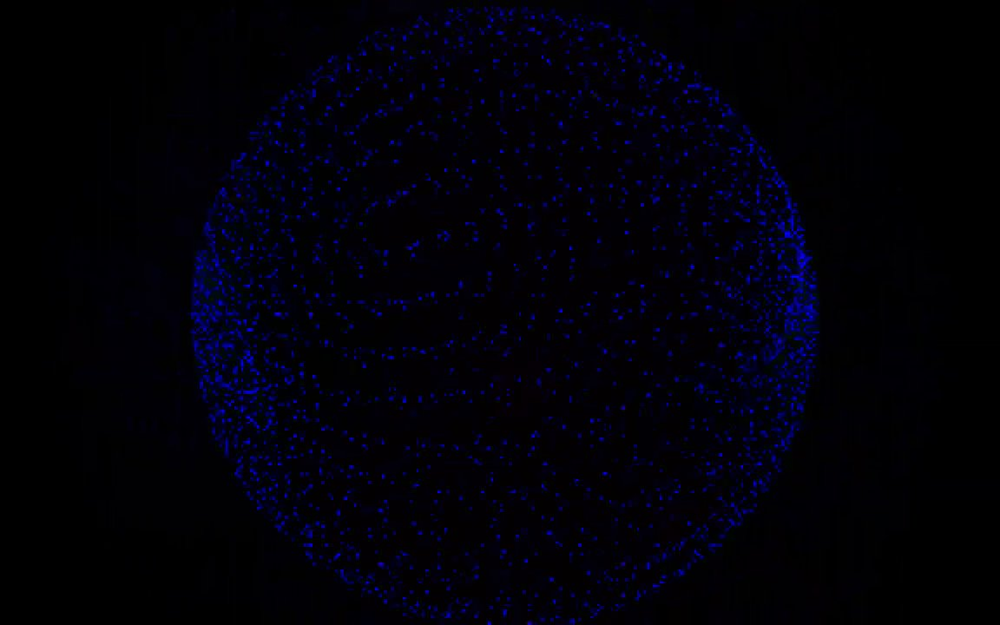
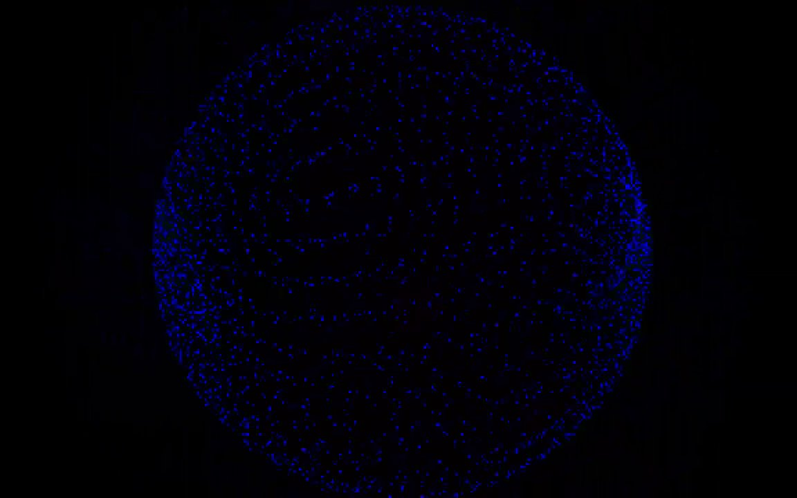
Nous allons maintenant étudier quelques techniques fréquemment utilisées afin d’appréhender leur impact visuel. Parmi les méthodes adoptées par les demosceners pour leurs créations, nous avons précédemment mentionné l’usage de la programmation en assembleur par les crackers pour optimiser à la fois les performances et la taille des demos. De plus, sur le Commodore 64, des fonctionnalités hardware souvent méconnues ont été découvertes par les programmeurs astucieux de la demoscene. Parmi ces trouvailles, on peut citer la capacité à éliminer la bordure de l’écran grâce aux raster interrupts, ou encore l’utilisation d’un quatrième canal pour le son.
Les raster interrupts sont une technique utilisée dans la demoscene, notamment sur le Commodore 64, pour synchroniser des effets visuels avec le balayage de l’écran (raster). Le Commodore 64, comme de nombreux autres ordinateurs de cette époque, utilise un balayage raster pour afficher les images à l’écran, c’est-à-dire qu’il dessine l’écran ligne par ligne, de haut en bas. Un raster interrupt intervient lorsqu’un programme interrompt le processus normal de balayage raster pour exécuter un code spécifique.
Dans la demoscene, les raster interrupts sont souvent utilisés pour créer des effets graphiques avancés, comme des rasterbars, des effets de scrolling et d’autres animations complexes comme le waving.
Bien que le Commodore 64 puisse afficher seulement 16 couleurs dont seulement cinq nuances de gris, y compris le noir et le blanc, certaines demos parvenaient à afficher plus de couleurs que cette palette de base. Une méthode pour y parvenir est d’alterner rapidement entre deux écrans légèrement différents pour mélanger les couleurs, exploitant la persistance rétinienne24. Cette technique est exposée dans « Dream Time » du groupe Profik, où deux buffers sont alternés 60 fois par seconde pour créer l’illusion de couleurs supplémentaires.
Un scroll fait référence à une technique où le texte ou les graphiques défilent horizontalement ou verticalement à l’écran. Cette technique était largement utilisée pour afficher des crédits, des messages ou des graphismes artistiques dans les demos et les intros. Initialement simples textes défilants, ils ont évolué vers des versions DYPP (Different Y Pixel Position) ondulantes, des stretch-scrollers irréguliers, des scrollers inspirés de Star Wars, ou encore des scrollers en 3D virtuelle autour d’une sphère.
Le waving désigne un effet graphique simulant des vagues ou des ondulations sur l’écran. Cet effet est souvent obtenu en manipulant les pixels ou en modifiant les lignes de balayage de manière à créer une illusion de mouvement fluide et ondulant.
Un rasterbar fait référence à un effet visuel créé en manipulant les lignes de balayage (rasters) de l’écran. L’effet est généralement réalisé en changeant dynamiquement la couleur ou la luminosité des lignes de balayage pour créer des motifs ou des animations. Ces effets exploitent les caractéristiques techniques des anciens ordinateurs, comme le Commodore 64, qui permettaient un contrôle précis des lignes de balayage.
Bouncing fait référence à un effet visuel où un objet ou du texte semble rebondir de haut en bas ou de gauche à droite à l’écran. Cet effet est souvent utilisé pour ajouter du dynamisme et de l’animation à une demo ou à une intro, donnant ainsi une sensation de mouvement et d’interaction.
Un logo désigne généralement un élément graphique représentant le nom ou l’identité visuelle d’un groupe de demosceners. Ce logo est souvent intégré dans les intros, les demos ou les cracktros pour identifier le groupe ou le collectif derrière la production. Il est conçu pour être distinctif et mémorisable, reflétant souvent le style et l’esthétique du groupe.


La demoscene d’aujourd’hui est marquée par l’usage persistant d’ordinateurs obsolètes tels que le Commodore 64, le Plus 4, le ZX Spectrum et l’Amiga. Ces machines, bien que technologiquement dépassées et dotées de limitations parfois drastiques datant de plusieurs décennies, continuent d’inspirer et de servir de supports à des réalisations.
Cette persistance reflète la popularité indéniable de ces machines emblématiques. Le Commodore 64, par exemple, conserve son titre de champion en termes de créativité au sein de la demoscene, avec un impressionnant catalogue de plus de 18 000 productions recensées. Ce chiffre surpasse même celui des créations pour PC, qui s’élève à environ 14 000, mettant en évidence la fascination continue pour ces anciennes plateformes.
Cette inclination pour les machines d’antan ne se résume pas à de la nostalgie. Elle témoigne d’une volonté de repousser les limites, de défier les contraintes techniques et de valoriser l’ingéniosité nécessaire pour créer des demos sur des plateformes aux capacités limitées. De plus, l’utilisation de ces machines historiques dans la création contemporaine renforce le lien entre les générations de demomakers et perpétue l’héritage culturel de la demoscene.
Aujourd’hui, deux approches dominantes structurent la création d’intros ou de demos sur PC. La première, plus traditionnelle, implique une programmation intégrale de chaque élément de la demo à partir de zéro. En revanche, la seconde repose sur l’utilisation d’outils de création de demos spécialement élaborés par les programmeurs au sein du groupe.
Dans le passé, la réalisation d’objets 3D exigeait un processus manuel méticuleux. Imaginons la conception de la lettre « D » en trois dimensions : elle débutait par un croquis détaillé sur papier millimétré, suivi de l’identification minutieuse de chaque point du dessin à l’aide d’une grille. Ces coordonnées étaient ensuite introduites dans un programme pour générer le code source nécessaire à la modélisation de l’objet.
Cependant, cette méthode laborieuse comportait des désavantages manifestes, notamment en termes de répétitivité et de complexité. Ainsi, la conception de programmes spécialisés automatisant la génération du code source est rapidement devenue une alternative attrayante. Cette automatisation présente des avantages considérables : elle optimise le temps de création, réduit les erreurs humaines et améliore l’efficacité globale du processus de modélisation 3D (voir 3.1).

Ces outils, développés par les demosceners eux-mêmes, se distinguent des solutions commerciales comme Photoshop, 3D Studio ou Premiere. Ils fusionnent ces fonctionnalités en offrant une gamme étendue de fonctionnalités, de la génération de textures procédurales à l’édition de scènes animées, le tout intégré dans une interface unifiée. De plus, ils permettent un visionnage immédiat de la demo par un simple appui sur la barre d’espace, facilitant ainsi une de création fluide et intuitive.
Le développement de ces outils sur mesure par les demosceners s’explique par leur orientation vers la création d’intros 64 Ko, imposant des contraintes strictes de taille de fichier. Ces solutions spécialisées répondent donc précisément à leurs exigences en matière de taille et de fonctionnalités.
Dans leur démarche créative, les demosceners privilégient l’utilisation de données brutes plutôt que de gros fichiers préexistants. Ils se basent sur des paramètres et algorithmes pour générer les éléments visuels et sonores nécessaires à la demo, permettant ainsi de produire des œuvres tout en conservant des tailles de fichier minimales. Cette approche algorithmique leur permet d’obtenir des rendus dans des tailles de fichier réduites, sans dépendre de fichiers volumineux.
Cependant, il convient de souligner que tous les demosceners ne privilégient pas nécessairement la création d’outils sur mesure. Certains préférant une approche plus traditionnelle, débutent chaque projet de manière autonome et intègrent progressivement des effets et des fonctionnalités pour parvenir au résultat final, sans le support d’un outil de création dédié.


Pour pleinement apprécier une demo, il est nécessaire pour le public d’avoir une connaissance des limitations techniques ainsi que des capacités intrinsèques de l’ordinateur concerné. Cette compréhension permet non seulement d’évaluer l’exploit technique réalisé par les demomakers, mais également d’appréhender la subtilité et l’ingéniosité de leur création.
Les personnes non familières avec les contraintes techniques peuvent ne pas être impressionnées par des réalisations en apparence simples, comme un cube en rotation. Toutefois, il est important de souligner que des fonctionnalités aussi basiques peuvent représenter des prouesses considérables sur une plateforme donnée, surpassant souvent les attentes initiales des concepteurs du système.
Pour qu’une demo soit véritablement mémorable et appréciée, elle doit être ancrée dans un concept artistique solide. Cette combinaison d’excellence technique et de créativité conceptuelle est ce qui distingue les demos les plus marquantes.
La collaboration est au cœur de la demoscene moderne. Les demomakers travaillent souvent en équipe, combinant leurs talents et leurs compétences. Cette collaboration permet non seulement de partager des connaissances et des idées, mais aussi de repousser les limites de ce qui est techniquement et artistiquement possible.
La communauté demoscene reste un élément essentiel de cette culture. Les festivals de demos, les compétitions et les rencontres entre demomakers continuent d’être des moments forts de la vie de la demoscene, permettant aux artistes de partager leurs œuvres, d’échanger des feedbacks et de célébrer ensemble leur passion commune.
Les demos sont généralement le fruit du travail d’une équipe, avec un membre dédié aux graphismes, un autre à la musique, et plusieurs autres à la programmation, suivant ainsi un schéma similaire à celui de la création de jeux vidéo ou de la réalisation de films.
Pour ces créateurs, la véritable récompense réside dans la reconnaissance et l’appréciation de leurs pairs au sein de la communauté demo. Bien que leurs œuvres puissent atteindre un niveau d’excellence reconnu à l’échelle internationale, l’aspiration principale de ces artistes n’est pas tant d’atteindre un public étendu ou de rechercher la célébrité, mais plutôt de créer des œuvres qui résonnent profondément avec ceux qui comprennent et apprécient véritablement la culture unique de la demoscene. C’est cette connexion spéciale avec une communauté dédiée qui donne une signification et une valeur inestimables à leur travail.


Après avoir exploré les racines profondes de la demoscene, nous nous tournons désormais vers une discipline plus contemporaine : le livecoding25. Mon mémoire se veut centré sur la pratique du livecoding, avec une attention particulière portée à la programmation en direct de fragment shaders. Pour une introduction rapide, un shader est un programme destiné à être exécuté sur le GPU, déterminant la manière dont une image est affichée à l’écran. Des détails plus approfondis seront abordés dans un chapitre ultérieur.
L’épicentre de cette pratique est le shader showdown, une compétition phare dans le cadre des demoparties. Durant ces événements, les programmeurs de shaders s’affrontent sur scène, accompagnés de DJs, pour coder en temps réel devant un public nombreux. Cette compétition emblématique a vu le jour lors de la WeCan en 2013, une demoparty polonaise. Depuis, de nombreuses demoparties ont intégré le shader showdown à leur programmation. Notamment, la Revision26 se distingue comme la plus grande demoparty au niveau mondial.
Un shader showdown, c’est un tournoi où les participants ont 25 minutes pour coder from scratch un shader, et tout cela en direct. Le code et sa représentation visuelle s’affichent sur des écrans géants pendant qu’un DJ s’occupe de la musique. Le public vote à la fin pour son shader préféré. Le thème peut-être imposé pour rajouter de la complexité, mais parfois les participants sont complètement libres de leurs créations.
Une participation à un shader showdown demande des connaissances et de l’entraînement. De la même manière qu’un peintre doit connaître des techniques, maîtriser ses couleurs, les propriétés des différents types de peinture qu’il emploie, et surtout s’entraîner pour devenir un maître de la peinture à l’huile, il faut de l’entraînement et creuser l’aspect technique, mathématique, pour progresser en shader coding et faire cela en live devant un public, que ce soit dans le cadre d’un showdown ou d’un VJing27.
La compétition ressemble à la création d’une démo 4k en direct sur scène, accompagnée d’une bande son mixée par un DJ. Il est étonnant de constater qu’un effet visuellement frappant peut être obtenu avec seulement 5 lignes de code dans un shader, et c’est sans doute cette possibilité qui a été perçue par les demosceners lors de la mise en place du premier showdown.
Cette pratique est extrêmement exigeante, nécessitant une solide mémoire, des compétences techniques avancées, une capacité à gérer la pression, et surtout, une créativité spontanée. La communauté des demosceners reconnaît et valorise ces compétences, en témoigne leur engouement pour cette compétition.
Les participants nourrissent une véritable passion pour l’expérience scénique, captant le rythme de la musique dans une ambiance électrisante. Une appréhension naturelle précède toujours leur montée sur scène. Néanmoins, une fois les premières marches menant vers la scène franchies, ils ressentent un apaisement, percevant la phase la plus stressante comme étant derrière eux. Ils peuvent alors pleinement profiter de cet instant, se montrer tels qu’ils sont sur scène et capter l’adhésion du public, que ce soit pour leur art ou leur personnalité, s’immergeant ainsi totalement dans le présent.
En règle générale, les livecoders s’entraînent intensivement chez eux sur leurs shaders, les mémorisant parfois, tout en incorporant des éléments flexibles pour un environnement de base adaptable. Cette méthode leur permet d’improviser lors des compétitions, ajoutant ainsi une dimension imprévisible à la fois pour eux et pour le public.
L’apprentissage du livecoding s’appuie principalement sur la transmission orale et le partage de connaissances au sein de la communauté open source. Des personnalités comme Inigo Quilez28 ainsi que des collectifs artistiques comme le Cookie Collective jouent un rôle prépondérant en partageant généreusement leurs connaissances. Cette culture de partage et de collaboration en open source au sein de la communauté d’art numérique en temps réel est essentielle pour favoriser son expansion et toucher un public plus large.
En général, ce n’est pas tant la demoscene en elle-même qui constitue le moyen d’expression privilégié des livecoders, mais plutôt le shader coding. C’est au sein de la demoscene qu’ils ont été initiés à cette discipline et qu’ils en ont découvert l’existence. Au sein du livecoding, deux aspects distincts retiennent l’attention des demosceners.
Premièrement, l’exploration du code bas niveau pour en comprendre les nuances. Cette démarche renforce leur expertise technique, à la fois dans la conception artistique et dans leurs activités professionnelles. Deuxièmement, la programmation sur des plateformes anciennes leur offre l’opportunité de renouer avec des objets de leur enfance, tout en adoptant une perspective adulte. La demoscene modifie leur perception de leurs compétences, les incitant à voir chaque machine comme une aire de jeu potentielle.
Au sein même de la discipline de livecoding, une pratique spécifique se démarque : le code golfing29. L’objectif est de concevoir un shader en utilisant le moins de caractères possible, avec le défi supplémentaire de le rendre compatible avec la limite de caractères d’un tweet.
Le terme golfing est inspiré de la quête d’efficacité et de concision, similaire à l’objectif d’un golfeur de terminer un parcours avec le moins de coups. Dans le domaine des shaders, cela se traduit par la création d’un fragment shader, qui atteint une qualité visuelle avec le minimum de caractères de code. Cette pratique sollicite la concision, la créativité et la maîtrise du langage de programmation du développeur.
Dans le vaste éventail d’outils disponibles pour l’exploration et le développement des shaders, quatre plateformes se distinguent particulièrement : Shadertoy, Bonzomatic, KodeLife et ShaderEditor.
Le site le plus populaire dédié à la création de shaders est
Shadertoy, créé par Inigo Quilez. Il permet de créer des
shaders en ligne, et son aspect communautaire donne la
possibilité de consulter le code d’autres utilisateurs, et donc
d’apprendre de nouvelles façons de coder (voir 3.5).
Shadertoy s’appuie sur l’API WebGL pour effectuer un rendu graphique
dans le navigateur à l’aide du GPU. Dans Shadertoy, on ne peut écrire
que dans le fragment shader, le vertex shader ne nous est pas
accessible. On démarre avec un plane qui représente la surface
de l’écran comme seule géométrie de départ. Ainsi si l’on veut
représenter des scènes 3D, on doit s’appuyer sur l’algorithme de ray
marching et les SDFs pour représenter les formes. À noter qu’un
simple copier-coller ne suffira pas si l’on veut exporter notre shader
vers un logiciel tiers (Unreal, TouchDesigner, Blender...). En effet il
existe différents langages de shaders (GLSL, HLSL, Cg,
Metal...), qui malgré leurs grandes similarités syntaxiques diffèrent
sur quelques détails. Dès que l’on a saisi les subtilités de chaque
langage, il devient très facile de traduire ces codes « à la main ». En
général il s’agira de traduire les types, de rajouter des points («
. ») aux flottants etc. Shadertoy reste donc un excellent
moyen pour prototyper des shaders en vue de les utiliser dans
d’autres logiciels ensuite, mais surtout il permet de partager ses
créations avec une communauté qui n’hésite pas à laisser des
commentaires pertinents pour corriger notre code.

Bonzomatic se distingue comme un logiciel open source accessible sur GitHub. Conçu principalement par Gargaj, il se caractérise par une approche qui privilégie le développement hors ligne tout en offrant une flexibilité remarquable. Sa philosophie open source favorise l’implication de la communauté dans son développement, ce qui lui confère une dynamique constante et une capacité d’évolution continue.

Sa particularité réside dans ses règles strictes appliquées lors des compétitions. En effet, Bonzomatic impose des contraintes spécifiques, telles que l’interdiction d’accéder à Internet et l’impossibilité d’importer des textures. Ces limitations visent à mettre les compétiteurs sur un pied d’égalité, en les incitant à exploiter au maximum leurs compétences et leur créativité sans recourir à des ressources externes.
KodeLife s’impose comme l’outil idéal lorsqu’il s’agit d’intégrer des contrôleurs pour des performances live ou des événements interactifs. Sa fonctionnalité permettant de gérer les entrées en temps réel facilite la liaison entre le shader et les dispositifs de contrôle. Cette capacité dynamique ouvre la porte à une créativité accrue, permettant aux développeurs de concevoir des expériences immersives et interactives de manière plus intuitive. Sa facilité d’utilisation pour l’intégration du MIDI en a fait un choix privilégié pour mes expérimentations (voir 3.7).


Enfin, pour les moments où l’inspiration surgit en déplacement, comme lors d’un voyage en train, ShaderEditor sur tablette Android devient un allié précieux. Cette application permet de coder des shaders de manière intuitive et efficace sur des appareils mobiles, offrant ainsi une flexibilité qui s’adapte au mode de vie nomade de nombreux développeurs et artistes. Sa capacité à coder efficacement des shaders sur le pouce permet de capturer rapidement les idées créatives, quel que soit l’endroit ou le moment où l’inspiration surgit (voir 3.8).

Je souhaitais également explorer une catégorie d’outils indispensable : les outils de visualisation graphique des fonctions mathématiques. Dans le cadre du développement de shaders, ces sites sont essentiels pour expérimenter avec des équations et des fonctions mathématiques, en vue de créer des effets visuels complexes. En effet, lors de la conception d’un shader, le développeur est constamment engagé dans le processus de « mappage » de valeurs d’un intervalle vers un autre, et dans l’affinement de l’évolution de ces valeurs. Des plateformes telles que Desmos et Graphtoy offrent également une meilleure compréhension des transformations géométriques comme les translations, les rotations et les mises à l’échelle (voir [desmos00] et 3.9).

Avant de nous lancer dans l’étude de la programmation de fragment shaders, il me semblait primordial de revenir rapidement sur le pipeline de la carte graphique et ses différentes étapes afin d’avoir une meilleure compréhension de ce processus qui permet d’afficher une scène 3D sur un écran 2D.
Les différences fondamentales entre le CPU et le GPU résident principalement dans leurs architectures, leurs conceptions et leurs fonctions principales. Le CPU est conçu pour exécuter des tâches de manière séquentielle. Le strip 4.1 illustre le processus de dessin d’une image pixel par pixel de manière séquentielle et lente.


En revanche, le GPU est conçu avec un grand nombre de cœurs plus simples (parfois des milliers) qui peuvent travailler simultanément sur des tâches parallèles, offrant une capacité de traitement massivement parallèle pour les opérations graphiques. Le strip 4.2 illustre bien cette caractéristique : le GPU est représenté par une grille de tuyaux qui envoient directement leurs informations sur chaque pixel pour dessiner la Joconde en un instant. Ces strips sont tirés d’une vidéo d’une conférence humoristique de NVIDIA datant de 2008.
D’ailleurs, lorsque l’on parle du pipeline de la carte graphique c’est un abus de langage, on devrait plutôt parler de pipeline du GPU (Graphical Processor Unit). Schématiquement, une carte graphique se compose d’un processeur dédié, le GPU, et d’une mémoire vive spécifique (voir 4.3).


Le rôle principal d’un GPU est de créer des images à partir de données qui décrivent la scène. En général, ces données en entrée sont une collection de triangles, car les triangles sont la forme géométrique atomique pour décrire un objet 3D: avec des triangles, nous pouvons représenter n’importe quel objet en trois dimensions. Avant de pouvoir être exploitées par le GPU, ces données représentant la scène (une collection de coordonnées de sommets30 représentant les triangles dans l’espace 3D) doivent être chargées dans la mémoire vive du GPU. Il faut donc que ces données soient décrites côté CPU avant de les envoyer au pipeline de rendu (voir [pipeline01] et 4.4).
Il faut voir la carte graphique comme une machine capable de parallélisme, c’est à dire qu’elle effectuera ses calculs sur chacun des sommets puis sur chacun des pixels en parallèle. Le même vertex shader s’exécutera une fois pour chaque vertex et le même fragment shader s’exécutera une fois pour chaque pixel comme si la carte graphique possédait des tuyaux dédiés pour chaque pixel. En d’autres termes, si l’écran a une résolution de \(1920\times1080\), le fragment shader devra être exécuté \(2.073.600\) fois par image calculée. Les GPU peuvent gérer cela parce qu’ils colorient de nombreux pixels en parallèle (c’est-à-dire en même temps) grâce à des threads31 dédiés aux calculs de chaque fragment. En particulier pour le fragment shader, le programme ne peut agir que sur un seul pixel à la fois et ne peut pas accéder aux valeurs des pixels voisins. En cela on dit souvent que le shader est aveugle. Il est aussi incapable de se souvenir du résultat du calcul de l’image précédente, en cela on parle d’amnésie du shader.
Un autre avantage du GPU est qu’il possède une accélération matérielle conçue pour optimiser certaines fonctions mathématiques utilisées couramment lors de l’écriture des shaders, comme les opérations sur les matrices ou les calculs trigonométriques.
Le pipeline de traitement graphique assure la conversion des attributs des sommets en une image tridimensionnelle qui est ensuite affichée à l’écran. Les attributs habituels comprennent la coordonnée 3D de chaque sommet, sa coordonnée de texture et sa couleur. Cependant, il est possible d’ajouter n’importe quel attribut car la carte graphique interprétera ces données comme de la « data » pure. Les différentes étapes de ce pipeline, dans leur séquence chronologique, comprennent le vertex shader, le geometry shader, la rastérisation (rasterization en anglais) et le fragment shader. Dans cette section, nous nous concentrerons sur une analyse détaillée du vertex shader, du geometry shader et de la rastérisation. Quant au fragment shader, qui constitue la pierre angulaire du livecoding, il sera décortiqué dans le prochain chapitre.
Voici un exemple très basique d’un vertex shader. On peut
remarquer que les données de la scène sont réceptionnées dans les
variables pos (3 coordonnées en \(X\), en \(Y\) et en \(Z\)) et col (3 valeurs pour le
rouge, le vert et le bleu et 1 valeur pour l’opacité). On a donc accès à
la position et à la couleur de chaque vertex.
attribute vec3 pos;
attribute vec4 col;
void main()
{
gl_Position = vec4(pos,1);
}La variable gl_Position est une variable de sortie, donc
le programme se contente de récupérer la position de chaque
vertex et de l’envoyer à la prochaine étape du
pipeline (la rastérisation) sans leur appliquer de
transformation. On remarque cependant l’ajout d’une quatrième composante
avec la valeur \(1\). Ce \(1\) indique que nous utilisons des
coordonnées homogènes32. En simplifiant on peut retenir que
lorsque cette quatrième composante est à \(1\) cela signifie que l’on désigne une
position, et lorsqu’elle est à \(0\)
que l’on désigne une direction.
Le rôle fondamental du vertex shader est de transformer les coordonnées de chaque sommet dans différents espaces, comme nous l’explorerons plus en détail dans la section suivante. Heureusement, les matrices de transformation permettent d’appliquer facilement des opérations telles que la translation, la rotation et la mise à l’échelle sur des objets en 3D. Il est à noter qu’une quatrième composante, notée \(w\), est utilisée pour décrire les coordonnées des sommets. Cette composante facilite la représentation des transformations projectives et simplifie les calculs mathématiques nécessaires au rendu 3D.
La matrice identité33 est couramment utilisée comme point de départ pour les transformations. En effet, elle permet de s’assurer du contenu de la mémoire avant d’effectuer les transformations matricielles. Elle agit comme un élément neutre pour la multiplication matricielle, comme le \(0\) pour l’addition ou le \(1\) pour la multiplication. Elle est souvent modifiée en ajoutant des opérations de translation, de rotation ou de mise à l’échelle pour produire des transformations plus complexes. \[\begin{bmatrix} 1 & 0 & 0 & 0\\ 0 & 1 & 0 & 0\\ 0 & 0 & 1 & 0\\ 0 & 0 & 0 & 1 \end{bmatrix} \cdot \begin{bmatrix} 1\\ 2\\ 3\\ 4 \end{bmatrix} = \begin{bmatrix} 1\\ 2\\ 3\\ 4 \end{bmatrix}\]
Si nous remplaçons les \(1\) de la matrice d’identité par des \(3\), cela signifie que chaque élément du vecteur serait multiplié par \(3\) lors de la multiplication matricielle. En conséquence, le vecteur serait uniformément augmenté de \(3\) dans toutes les directions. En représentant les facteurs d’échelle par \((S1, S2, S3)\), nous pouvons définir une matrice d’échelle pour n’importe quel vecteur \((x, y, z)\) comme suit : \[\begin{bmatrix} S1 & 0 & 0 & 0\\ 0 & S2 & 0 & 0\\ 0 & 0 & S3 & 0\\ 0 & 0 & 0 & 1 \end{bmatrix} \cdot \begin{bmatrix} x\\ y\\ z\\ 1 \end{bmatrix} = \begin{bmatrix} x \cdot S1\\ y \cdot S2\\ z \cdot S3\\ 1 \end{bmatrix}\]
La translation déplace un objet d’une certaine distance le long des axes \(X\), \(Y\) et \(Z\). Pour représenter une translation dans une matrice de transformation, on utilise une matrice identité de taille \(4\times4\), mais avec des valeurs spécifiques dans la dernière colonne (les trois premières valeurs de la dernière colonne représentent les translations le long des axes \(X\), \(Y\) et \(Z\) respectivement). Par exemple, pour une translation de \(tx\), \(ty\), \(tz\), la matrice de transformation ressemblerait à cela :
\[\begin{bmatrix} 1 & 0 & 0 & T_x\\ 0 & 1 & 0 & T_y\\ 0 & 0 & 1 & T_z\\ 0 & 0 & 0 & 1 \end{bmatrix} \cdot \begin{bmatrix} x\\ y\\ z\\ 1 \end{bmatrix} = \begin{bmatrix} x + T_x\\ y + T_y\\ z + T_z\\ 1 \end{bmatrix}\]
La rotation fait tourner un objet autour des axes \(X\), \(Y\) et \(Z\). Les rotations peuvent être définies en radians ou en degrés. Pour chaque axe de rotation, il existe une matrice de rotation correspondante. Par exemple, pour une rotation autour de l’axe \(X\) par un angle \(\theta\), la matrice de rotation serait : \[\begin{bmatrix} 1 & 0 & 0 & 0\\ 0 & \cos{\theta} & -\sin{\theta} & 0\\ 0 & \sin{\theta} & \cos{\theta} & 0\\ 0 & 0 & 0 & 1 \end{bmatrix} \cdot \begin{bmatrix} x\\ y\\ z\\ 1 \end{bmatrix} = \begin{bmatrix} x\\ \cos{\theta} \cdot y - \sin{\theta} \cdot z\\ \sin{\theta} \cdot y + \sin{\theta} \cdot z\\\\ 1 \end{bmatrix}\]
Pour la matrice de rotation autour de l’axe \(Y\), on observe que cette matrice est semblable à celle de la rotation autour de l’axe \(X\), à la différence près que des zéros ont été insérés dans la deuxième ligne et la deuxième colonne, à l’exception de la diagonale où un \(1\) est conservé pour maintenir la position inchangée.
\[\begin{bmatrix} \cos{\theta} & 0 & \sin{\theta} & 0\\ 0 & 1 & 0 & 0\\ -\sin{\theta} & 0 & \cos{\theta} & 0\\ 0 & 0 & 0 & 1 \end{bmatrix} \cdot \begin{bmatrix} x\\ y\\ z\\ 1 \end{bmatrix} = \begin{bmatrix} \cos{\theta} \cdot x + \sin{\theta} \cdot z\\ y\\ -\sin{\theta} \cdot x + \cos{\theta} \cdot z\\ 1 \end{bmatrix}\]
Le même phénomène se produit pour la rotation autour de l’axe \(Z\) mais avec la troisième ligne et la troisième colonne.
\[\begin{bmatrix} \cos{\theta} & -\sin{\theta} & 0 & 0\\ \sin{\theta} & \cos{\theta} & 0 & 0\\ 0 & 0 & 1 & 0\\ 0 & 0 & 0 & 1 \end{bmatrix} \cdot \begin{bmatrix} x\\ y\\ z\\ 1 \end{bmatrix} = \begin{bmatrix} \cos{\theta} \cdot x - \sin{\theta} \cdot y\\ \sin{\theta} \cdot x + \cos{\theta} \cdot y\\ z\\ 1 \end{bmatrix}\]
Il était utile d’aborder le fonctionnement des matrices de transformation, car le vertex shader a pour objectif de convertir efficacement une représentation spatiale en une autre. Le rôle principal du vertex shader est de transformer les coordonnées 3D de notre objet en coordonnées 3D normalisées34 qui s’afficheront à l’écran. Ces coordonnées doivent se situer dans l’intervalle \([-1, 1]\), car les sommets avec des coordonnées en dehors de cette plage ne seront pas visibles à l’écran. Le problème dans le code précédent est que nous nous contentons de passer les coordonnées 3D des sommets sans appliquer de transformation. La transformation des coordonnées en NDC se fait étape par étape, en passant par cinq systèmes de coordonnées différents :
Coordonnées du modèle (Model Space)
Coordonnées du monde (World Space)
Coordonnées de la vue (View Space ou Eye Space)
Coordonnées de projection (Clip Space)
Coordonnées normalisées de l’écran (NDC)
Le vertex shader est responsable de la transformation des coordonnées du modèle en coordonnées normalisées de l’écran, en appliquant une série de transformations matricielles appropriées à chaque sommet de l’objet (voir 4.5). Effectivement, chaque étape de transformation des coordonnées vers les coordonnées normalisées de l’écran s’appuie sur des matrices de transformation, parmi lesquelles figurent les matrices de modèle, de vue et de projection.

Initialement, nous disposons des coordonnées locales de notre objet par rapport à son origine locale. L’espace local représente les coordonnées locales de l’objet, c’est-à-dire l’endroit où il est créé ou modélisé. Par exemple, si nous créons un cube dans un logiciel de modélisation comme Blender, ce cube sera généralement centré autour de l’origine de l’espace local.
Dans l’espace local, les coordonnées de chaque sommet sont définies par rapport au centre de l’objet. Cependant, pour rendre cet objet dans une scène 3D, nous devons le placer et l’orienter par rapport à la scène globale. C’est là que la matrice de modèle entre en jeu : elle permet de transformer les coordonnées locales de l’objet en coordonnées du monde, en appliquant des transformations telles que la translation, la rotation et la mise à l’échelle. Une fois que les coordonnées sont dans l’espace du monde, elles sont transformées dans l’espace de vue (ou espace œil) à l’aide de la matrice de vue.
Dans cet espace, la caméra est positionnée à l’origine et les objets sont positionnés et orientés par rapport à la caméra. Cette transformation permet de simuler le déplacement et l’orientation de la caméra dans la scène.
Ensuite, les coordonnées de vue sont transformées dans l’espace de projection à l’aide de la matrice de projection. Dans cet espace, les coordonnées sont projetées dans un espace 3D canonique, où les coordonnées \(X\), \(Y\) et \(Z\) sont normalisées et se trouvent dans la plage \([-1, 1]\). Cette étape permet de déterminer quels objets sont visibles à l’écran et on peut utiliser soit la projection en perspective, soit la projection orthographique. Enfin, les coordonnées de projection sont transformées en coordonnées normalisées de l’écran (NDC) en divisant les coordonnées par leur composante \(w\) (homogène). Cela place les coordonnées dans une plage standardisée de \([-1, 1]\), ce qui permet de déterminer quels sommets et quelles parties de la scène seront rendus à l’écran. Le volume qui détermine si un sommet sera affiché ou non s’appelle le frustum35.
Nous venons de mentionner qu’il existe deux types principaux de matrices de projection : la matrice de projection orthographique et la matrice de projection en perspective. Contrairement à la projection perspective , où les objets plus éloignés sont réduits en taille, la projection orthographique conserve la taille relative des objets, indépendamment de leur distance par rapport à la caméra. Cela signifie que les objets éloignés apparaissent de la même taille que les objets proches. La projection orthographique, quant à elle, est souvent utilisée dans les rendus 2D et dans certaines applications architecturales ou d’ingénierie où l’on souhaite éviter les déformations des objets dues à la perspective. Elle offre une représentation plus fidèle des dimensions et des proportions des objets, ce qui peut être préférable dans certains cas d’utilisation. Une application comme Blender, qui est utilisée pour la modélisation 3D, utilise parfois la projection orthographique pour la modélisation car elle représente plus précisément les dimensions de chaque objet (voir 4.6).
Dans le processeur central (CPU), après avoir défini une matrice de transformation pour chacune des étapes susmentionnées (modèle, vue et projection), on transforme les coordonnées de chaque sommet en coordonnées de l’espace NDC comme suit:
attribute vec3 pos;
attribute vec4 col;
void main()
{
gl_Position = m_proj * m_view * m_model * pos;
}Le geometry shader (ou nuanceur de géométrie en français) est aussi une étape programmable mais optionnelle qui se situe entre le vertex shader et le fragment shader. Le geometry shader prend en entrée un ensemble de sommets qui forment une primitive unique, par exemple un point ou un triangle. Le geometry shader peut ensuite transformer ces sommets comme il l’entend avant de les envoyer à l’étape suivante du pipeline. Ce qui rend le geometry shader intéressant, c’est qu’il est capable de convertir la primitive d’origine (ensemble de sommets) en des primitives complètement différentes, en générant éventuellement plus de sommets qu’il n’y en avait au départ.
Il peut par exemple subdiviser un quad36 pour créer de nouveaux triangles et ainsi donner plus de détails à la modélisation. On peut aussi s’en servir pour créer des formes complexes à partir de formes très simples. Par exemple, on peut créer un cheveu à partir d’un segment constitué de seulement deux sommets. En général, on l’utilise pour des effets visuels en temps réel tels que la déformation de la géométrie, la génération de particules, l’effet de feuillage pour les arbres, les vagues dans l’eau, etc.


Comme illustré plus haut (voir [geo01]), le
geometry shader prend une primitive de point comme entrée et
crée une primitive de ligne horizontale avec le point d’entrée en son
centre. Au départ nous avions seulement quatre points provenant du CPU,
et le geometry shader à créé de nouveaux points pour chacun et
empaqueté le tout dans une nouvelle primitive LINE avant de
l’envoyer aux étapes suivantes du pipeline. Bien qu’il s’agisse
d’un exemple relativement simple, il montre comment nous pouvons
utiliser les geometry shaders pour générer dynamiquement de
nouvelles formes à la volée. Rien ne nous empêche de complexifier la
tâche du geometry shader. Dans le code suivant, à partir d’un
seul point nous dessinons une maison en créant cinq nouveaux sommets
(voir 4.7):
#version 330 core
layout (points) in;
layout (triangle_strip, max_vertices = 5) out;
void build_house(vec4 position)
{
gl_Position = position + vec4(-0.2, -0.2, 0.0, 0.0); // 1:bottom-left
EmitVertex();
gl_Position = position + vec4( 0.2, -0.2, 0.0, 0.0); // 2:bottom-right
EmitVertex();
gl_Position = position + vec4(-0.2, 0.2, 0.0, 0.0); // 3:top-left
EmitVertex();
gl_Position = position + vec4( 0.2, 0.2, 0.0, 0.0); // 4:top-right
EmitVertex();
gl_Position = position + vec4( 0.0, 0.4, 0.0, 0.0); // 5:top
EmitVertex();
EndPrimitive();
}
void main() {
build_house(gl_in[0].gl_Position);
} La rastérisation est une étape cruciale du pipeline graphique dans le processus de rendu en 3D. C’est l’étape qui consiste à convertir toutes les données 3D en une image matricielle en deux dimensions afin de pouvoir les afficher à l’écran (voir 4.8). Pour résumer, la rastérisation prend entrée la liste des triangles de l’étape précédente (espace 3D) et les convertit en pixels (ou plus exactement des fragments) correspondant à chacun des triangles (espace 2D). C’est aussi lors de cette étape qu’une interpolation des attributs des sommets (tels que les couleurs, les coordonnées de texture, etc.) est effectuée sur les pixels résultants. Le développeur n’a aucun contrôle sur cette étape, c’est un élément hardware de la carte graphique qui est dédié à ces calculs : le rasterizer.

Même si la couleur a été définie pour chaque vertex, lorsque l’on se trouve à l’intérieur du fragment shader c’est une valeur interpolée que l’on reçoit. Depuis le CPU, on associe des attributs aux vertices: pour l’ordinateur il s’agit simplement de data. À un seul vertex, en général on lui associe une position, une couleur, et une coordonnée d’uv. Ces données sont ensuite envoyées au GPU qui se chargera d’interpoler les valeurs via le rasterizer. Ainsi, si l’on décrit un triangle dans le CPU, avec du rouge du vert du bleu associé à chacun de ses vertex, le GPU affichera un triangle aux couleurs interpolées. Tous les pixels situés à l’intérieur de ce triangle posséderont une couleur qui sera la combinaison des trois couleurs de chaque sommet, la quantité variant selon la distance par rapport à ces sommets.

Dans ce chapitre, nous avons plongé dans le cœur même du processus de rendu graphique en explorant le pipeline graphique. Nous avons commencé par une revue du pipeline de la carte graphique, de la compréhension du GPU à son architecture optimisée. Ensuite, nous avons parcouru les étapes essentielles du pipeline graphique, en nous concentrant particulièrement sur le vertex shader et le geometry shader. Le vertex shader joue un rôle indispensable en transformant les coordonnées des sommets dans différents espaces, tandis que le geometry shader offre une flexibilité supplémentaire en permettant la création dynamique de géométrie. Enfin, nous avons examiné l’étape de rastérisation, où les primitives 3D sont converties en fragments 2D prêts à être affichés à l’écran. En combinant ces différentes étapes, le pipeline graphique accomplit la tâche complexe de convertir des données 3D en une image 2D qui s’affiche sur nos écrans.
Nous allons consacrer le prochain chapitre à une étape fondamentale du pipeline que nous n’avons volontairement pas traitée dans cette section : le fragment shader. Cette étape revêt une importance capitale dans la pratique du livecoding. Nous examinerons en détail les techniques essentielles à maîtriser pour une performance scénique réussie.
Le shader, c’est un programme, un morceau de code qui décrit généralement une matière. Au-delà du rendu d’un simple « matériau », c’est même une étape qui va permettre de représenter de la 3D sur nos écrans 2D.
Flopine
Bien qu’à ATI beaucoup d’entre nous soyons habitués à manipuler les fragment shaders avec les nodes37, ceux-ci sont en réalité des programmes écrits pour s’exécuter sur la carte graphique. Les fragment shaders, également connus sous le nom de pixel shaders, sont responsables de la production d’une couleur unique pour chaque fragment38 rendu. Dans la plupart des cas, un fragment correspond à un pixel affiché à l’écran. La couleur du pixel est stockée dans des canaux séparés. Si on considère le codage de couleurs RGBA, un premier canal représentera le rouge, et les trois autres canaux décriront respectivement le vert, le bleu et l’opacité. Chaque canal est représenté par des valeurs variant de \(0.0\) à \(1.0\). Par exemple, \((0.0, 0.0, 0.0, 1.0)\) représentera le noir opaque, \((1.0, 1.0, 1.0, 1.0)\) représentera le blanc opaque et \((1.0, 0.0, 0.0, 0.5)\) représentera le rouge pur avec \(50\%\) d’opacité.
Pour récapituler, un fragment shader est un programme contenant une seule fonction. Cette fonction reçoit les coordonnées uv d’un quad représentant l’intégralité de l’écran en tant que paramètre d’entrée. Elle calcule ensuite la couleur de rendu pour chaque pixel.
Dans la pratique du livecoding, il est essentiel de pouvoir coder « de mémoire », car en compétition, selon les règles en vigueur, il peut être interdit de consulter Internet en cas d’oubli, tout comme l’utilisation de textures peut être proscrite.
Dans cette section, nous nous efforcerons de décrire les principales
techniques de développement en live d’un shader tout
en abordant les concepts mathématiques sous-jacents. Ces principes
mathématiques sont indispensables pour comprendre la logique à laquelle
obéissent nos shaders. Sans cela, nous perdrons une liberté
créative ainsi que la capacité de débogage. Il n’est pas rare de se
retrouver sur scène devant un écran totalement noir sans parvenir à
trouver la source de l’anomalie. De plus, contrairement au développement
sur CPU, les fonctions d’affichage telles que print() en
langage C ne sont pas disponibles lors de la programmation pour la carte
graphique.
Il existe plusieurs langages pour écrire un shader : GLSL, HLSL, Cg ou encore MSL. Le choix du langage dépend de facteurs tels que la performance recherchée, la compatibilité avec la plate-forme ou les logiciels choisis pour le projet.
Cependant, le point commun entre tous ces langages est qu’ils
possèdent une syntaxe héritée du langage C. On y retrouve le concept de
types, de déclarations de fonctions, de structures, etc. Une fois que
l’on maîtrise la syntaxe de l’un de ces langages, il est très aisé de
passer d’un langage à un autre ; il suffit simplement de s’adapter à
quelques subtilités. Par exemple, le type qui décrit les vecteurs à
trois dimensions peut être vec3 dans un langage et
vec3f dans un autre. De même, les nombres flottants
(float) peuvent nécessiter un point (.) ou la
lettre f en suffixe (float x = 1.0f).
L’espace uv est un concept fondamental pour comprendre les shaders, et tous les artistes en sont déjà au moins familiers, sans avoir nécessairement besoin de comprendre les mathématiques qui se cachent derrière, notamment lorsqu’ils appliquent des textures à la surface de leurs modèles 3D.
Les textures apparaissent généralement en deux dimensions (bien qu’il existe également des textures 1D et 3D) et sont décrites par une image. Elles peuvent aussi bien concerner l’aspect visuel de « l’apparence » de l’objet avec la diffuse map39 que l’illusion de relief avec la normal map40. Le terme anglais map correspond au terme français cartographie. Cette terminologie provient probablement de l’analogie avec la cartographie géographique, où des informations sont représentées sur une carte en deux dimensions pour refléter des éléments de la réalité en trois dimensions.
Les textures existent dans un espace en deux dimensions, et à chaque sommet, on associe une coordonnée uv comprise entre \(0\) et \(1\), qui désigne un texel41 de la texture. Tout comme n’importe quel attribut associé à un sommet, ces valeurs de coordonnée de texture seront interpolées lors de la rastérisation.
Dans le contexte du livecoding, nous ne disposons pas d’un
modèle 3D complet, mais seulement de deux triangles formant un plan qui
remplit tout l’écran. Les données d’entrée du shader nous
fournissent par défaut la résolution du viewport
(iResolution) ainsi que les coordonnées de chaque
pixel (fragCoord). En divisant ces coordonnées par
la résolution, nous obtenons une valeur normalisée, comprise entre \(0\) et \(1\), correspondant à nos coordonnées de
texture.
void mainImage( out vec4 fragColor, in vec2 fragCoord )
{
vec2 uv = fragCoord / iResolution.xy;
fragColor = vec4(uv,0.,1.0);
}Dans l’image [meduse_00], nous avons une représentation visuelle de l’espace uv. Les coordonnées horizontales sont codées dans la couleur rouge tandis que les coordonnées verticales sont codées dans la couleur verte. L’origine du repère étant située en bas à gauche, nous observons du noir. Le point en bas à droite est d’un rouge pur car sa coordonnée en \(X\) vaut \(1\) et sa coordonnée en \(Y\) vaut \(0\). À l’inverse, la couleur en haut à gauche du canvas est d’un vert pur. En haut à droite, nous obtenons un jaune pur car les coordonnées \(X\) et \(Y\) valent toutes les deux \(1\). Tous les pixels intermédiaires possèdent une couleur interpolée dépendante de leur distance par rapport à chacun des quatre coins. Cela est effectué automatiquement lors de l’étape de rastérisation.
Pour une meilleure visualisation, nous pouvons observer séparément les coordonnées en abscisse (voir [meduse_uv_00]) et en ordonnée (voir 5.3).


Cet espace uv, ou coordonnées uv, désigne l’espace dans lequel nos shaders vont dessiner. Cette notion est cruciale car nous n’appliquons pas les transformations à la forme dessinée elle-même, mais plutôt à l’espace dans lequel cette forme est dessinée (voir 5.4).


Il est souvent préférable d’utiliser un espace centré et orthonormé42 pour faciliter le dessin. Ainsi, le code d’un shader commencera souvent de la même manière :
void mainImage( out vec4 fragColor, in vec2 fragCoord )
{
vec2 uv = (fragCoord-.5*iResolution.xy)/iResolution.xx; // permet de centrer nos coordonnees
}L’espace résultant (voir 5.2) trouve son origine au centre, et les coordonnées varient entre \(-0.5\) et \(+0.5\). Comme précédemment, la couleur noire représente des valeurs négatives ou nulles. Le vert indique des valeurs négatives en X et positives en Y, le rouge indique des valeurs positives en X et négatives en Y, et enfin le jaune indique des valeurs positives sur les deux axes. Avec une pratique régulière, ces associations de couleurs deviennent presque instinctives, et l’association entre les couleurs et les axes ne demande plus d’efforts de réflexion.
Le deuxième concept essentiel à assimiler est le principe mathématique d’une fonction de distance signée. Cette fonction est souvent désignée par l’appellation anglaise signed distance function, abrégée en SDF, que l’on retrouve couramment sur Internet et dans la littérature. Ce sont elles qui vont nous permettre de décrire les objets de notre scène mais aussi de les déformer, de les répéter, etc.
Schématiquement, une SDF est une fonction qui calcule une valeur représentant la distance d’un point par rapport à une surface donnée. Le signe de la valeur retournée nous indique si le point est situé à l’intérieur ou à l’extérieur de la surface. Ce qui suit est une explication équivalente, mais formulée en termes mathématiques.
Soit \(S\) la surface de référence, et \(p\) un point dans l’espace. La fonction de distance signée \(d(p,S)\) évalue la distance du point \(p\) à la surface \(S\), avec les propriétés suivantes :
Si le point \(p\) est à l’extérieur de la surface \(S\), la distance est positive (\(>0\)).
Si le point \(p\) est à l’intérieur de la surface \(S\), la distance est négative (\(<0\)).
Si le point \(p\) est sur la surface S, la distance est nulle (\(=0\)).
Notons que dans un souci de simplification visuelle, nous nous focaliserons sur les SDF en deux dimensions. Cependant, il est important de noter que les mêmes principes s’appliquent également dans un espace tridimensionnel. Dans les images ci-dessous (voir [sdf_00], 5.5, [sdf_02] et 5.6), nous visualisons quatre SDF, chacune représentant une forme différente (un cercle, une étoile, un cœur et une vague sinusoïdale). Ces fonctions, créées par Inigo Quilez, sont largement utilisées dans la création de shaders. De nombreuses formes ont été codées et, comme nous le verrons un peu plus tard, il est très facile de les combiner entre elles.


Sur les images, la couleur orangée représente l’espace qui se trouve à l’extérieur de la forme, tandis que la couleur bleutée représente l’espace à l’intérieur de la forme. Dans les deux cas, plus l’on se rapproche de la surface de la forme, plus la couleur s’assombrit. Ceci est logique puisque plus l’on se rapproche de la surface, plus la valeur de la distance tend vers zéro. Le contour blanc est là pour indiquer que l’on se trouve exactement sur la surface de la forme. Les ondulations que l’on observe autour de la forme symbolisent la distance proprement dite. Une analogie que j’aime employer est celle avec le sonar 43 utilisé par les sous-marins pour détecter des objets sous l’eau. Grâce à cette fonction de distance, l’utilisateur peut contrôler à la fois la taille de la forme et l’épaisseur de son contour.
Nous venons de voir comment dessiner des formes 2D primitives telles que des cercles, des étoiles et des carrés, mais nous pouvons utiliser les opérations SDF 2D pour créer des formes plus complexes en combinant des formes primitives.
Les SDF possèdent une propriété mathématique très intéressante : il est très commode d’utiliser des opérations booléennes pour combiner les formes entre elles. Les trois opérateurs booléens sont l’union, l’intersection et la soustraction. L’union permet d’assembler deux objets, l’intersection est le résultat de la partie commune entre les deux objets, et la soustraction est le résultat du premier objet auquel on enlève le second objet. Les illustrations qui suivent considèrent deux objets: un carré et un cercle. En code, ces opérations booléennes sont triviales à traduire.
Pour l’union, on utilise la fonction min() avec les deux
SDF en tant qu’arguments (voir [sdf_op_00]).
void mainImage( out vec4 fragColor, in vec2 fragCoord )
{
float d1 = sdCircle(uv, 0.1, vec2(0., 0.)); // le cercle
float d2 = sdSquare(uv, 0.1, vec2(0.1, 0)); // le carre
float res; // result
res = min(d1, d2); // union
} 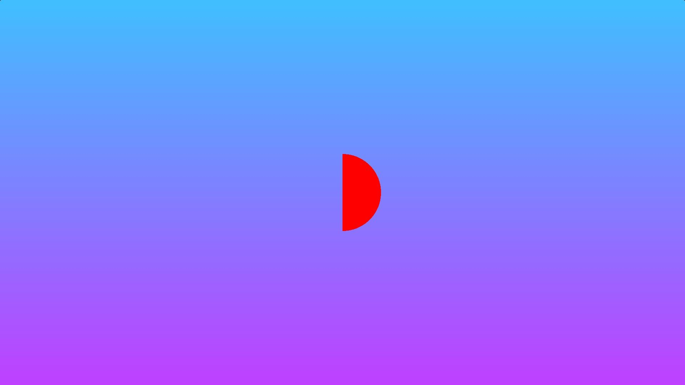
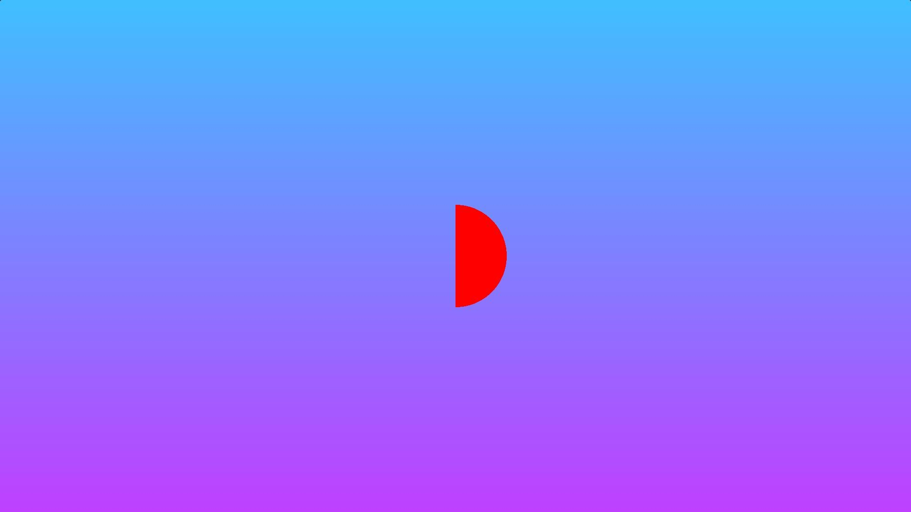
Pour l’intersection on utilise max() (voir 5.7).
void mainImage( out vec4 fragColor, in vec2 fragCoord )
{
res = max(d1, d2); // intersection
}Pour la soustraction, on utilise toujours la fonction
max(), mais avec l’inverse de la seconde forme comme
deuxième argument (qu’on décrit avec l’opérateur -). En
effet, la soustraction est une intersection entre la première forme et
la « non » seconde forme (voir [sdf_op_02]).
void mainImage( out vec4 fragColor, in vec2 fragCoord )
{
(...)
res = max(d1, -d2); // soustraction
}Pour l’opérateur XOR on utilise une combinaison de
min() et max() (voir 5.8).
void mainImage( out vec4 fragColor, in vec2 fragCoord )
{
(...)
res = max(min(d1, d2), -max(d1, d2)); // xor
}
Tous ces opérateurs booléens ont été réécrits par Inigo Quilez pour prendre en compte un paramètre de lissage44 (voir [sdf_op_04] et 5.9).
void mainImage( out vec4 fragColor, in vec2 fragCoord )
{
// smooth min
float smin(float a, float b, float k) {
float h = clamp(0.5+0.5*(b-a)/k, 0.0, 1.0);
return mix(b, a, h) - k*h*(1.0-h);
}
// smooth max
float smax(float a, float b, float k) {
return -smin(-a, -b, k);
}
}

Inigo Quilez a également développé des fonctions pour agir
directement sur l’espace uv, permettant de dessiner rapidement tout en
améliorant les performances. Par exemple, si l’on souhaite créer une
scène symétrique, il peut être utile d’utiliser la fonction
opSymX(). Cette fonction crée une forme 2D dupliquée le
long de l’axe \(X\) à l’aide du SDF
utilisé (voir [sdf_op_06]). De même, si nous voulons
dessiner un nombre infini d’objets 2D sur un ou plusieurs axes, la
fonction opRep() est parfaitement adaptée (voir 5.10).
 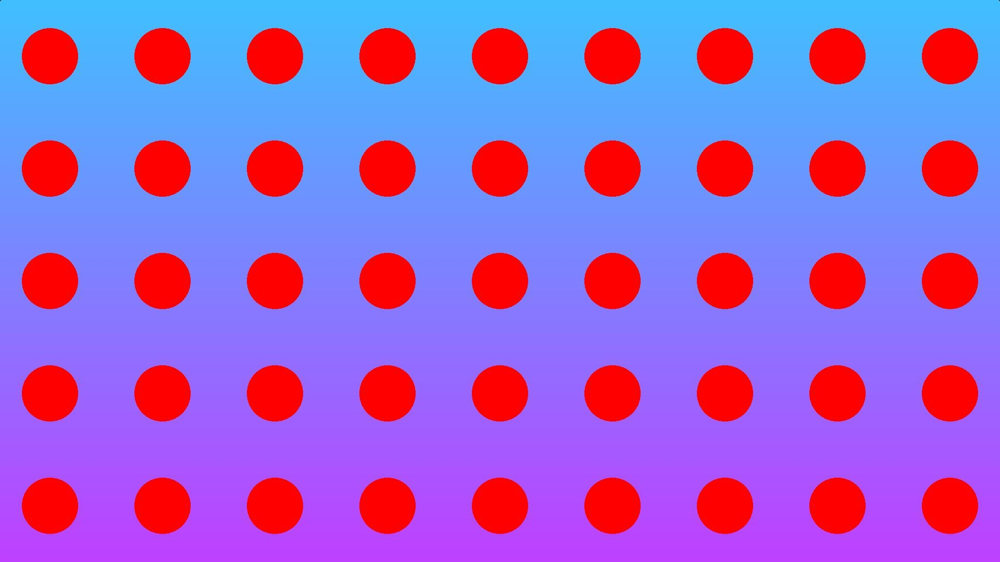
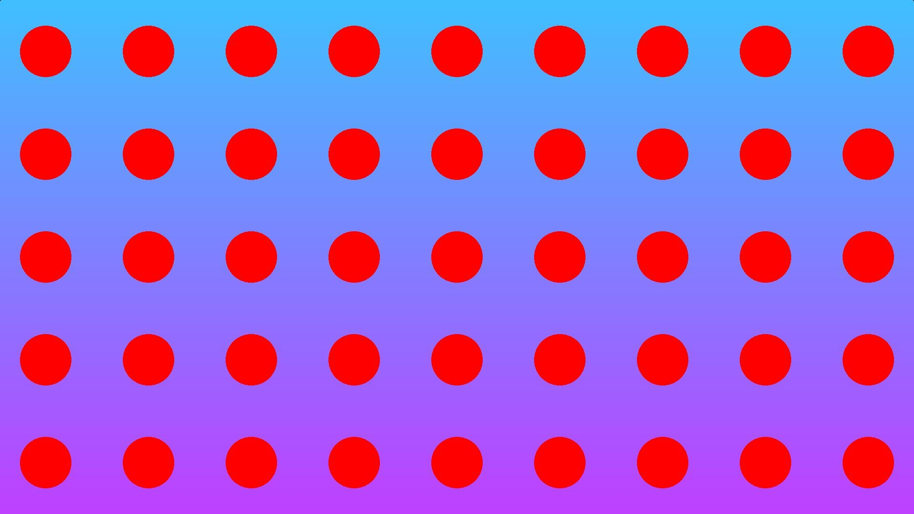
Pour des raisons de lisibilité, nous avons traité la notion des SDF dans un espace bidimensionnel. Bien évidemment, tous ces concepts fonctionnent de la même manière dans un espace tridimensionnel. Il existe des fonctions pour décrire des formes 3D primitives comme des cubes ou des sphères, mais aussi des formes plus complexes comme des pyramides ou des tores. Les opérations booléennes demeurent inchangées (voir [union], [intersection], 5.11), et en les combinant, nous pouvons obtenir facilement des formes évoluées (voir [sdf00] et 5.12).


Après avoir expliqué en détail ce qu’est une SDF et comment elle est utilisée dans le domaine du creative coding, il me paraissait pertinent d’approfondir la compréhension en examinant la fabrication mathématique de ces fonctions. Bien que de nombreux créateurs de shaders se contentent souvent d’adopter une SDF préexistante développée par des figures reconnues comme Inigo Quilez, il est regrettable de constater que cela se fait souvent au détriment d’une réelle compréhension de la démonstration mathématique. Pourtant, cette démarche ouvre la voie à une appropriation intelligente des formes existantes et, surtout, à la création de SDF personnalisées.
Nous étudierons deux exemples illustrant la construction mathématique d’une SDF. Le premier exemple consistera en une exploration de l’espace bidimensionnel à travers la représentation d’un simple carré. Dans le second exemple, nous nous pencherons sur la création d’un tore (torus en anglais), en partant cette fois-ci d’un espace tridimensionnel. En comprenant la logique et les principes mathématiques derrière la création de ces SDF, nous serons en mesure non seulement d’adapter efficacement les formes déjà existantes, mais également de développer nos propres fonctions SDF, ouvrant ainsi de nouvelles possibilités créatives.
Nous commençons par examiner un carré en 2D centré à l’origine. Pour simplifier le calcul et tirer parti de la symétrie, nous nous concentrons initialement sur un seul quadrant45 de la forme. Calculer la distance d’un point situé en dessous du troisième quadrant, équivaut à calculer la distance du point symétrique par rapport à l’origine, qui se trouverait au-dessus du troisième quadrant (voir [box00]). Nous définissons \(R_x\) et \(R_y\) comme étant respectivement la largeur et la hauteur du premier quadrant.
En se référant au premier quadrant, nous pouvons distinguer les
différents cas qui se présentent. En généralisant la solution à l’aide
de la fonction abs(), nous prenons en compte la symétrie.
L’espace peut être divisé en trois parties distinctes : une partie juste
au-dessus du quadrant, une partie juste à droite du quadrant et une
troisième partie « en haut à droite » du quadrant (voir [box01]).
 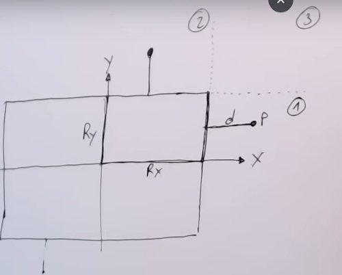
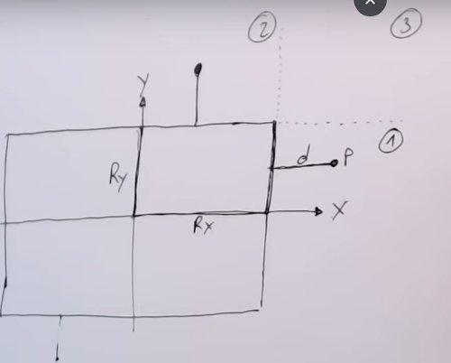

Dans la première zone, le calcul est relativement simple : il s’agit de la distance de la composante \(x\) du point par rapport au côté droit du carré, ce qui se traduit par \(d = P_x - R_x\). Pour la deuxième zone, la logique est similaire, mais appliquée verticalement, conduisant à \(d = P_y - R_y\). Cependant, pour la troisième zone, nous devons faire appel au théorème de Pythagore46 pour calculer la distance entre le point et le coin supérieur droit du quadrant (voir 5.13). Ainsi, nous obtenons:
\[\begin{aligned} d = \sqrt{(P_x-R_x)^2 + (P_y-R_y)^2} \end{aligned}\]
Notre objectif est de combiner ces trois expressions mathématiques
pour exprimer la distance \(d\) en une
seule. Nous remarquons que les deux premières expressions apparaissent
dans la troisième. En gardant uniquement la troisième expression, nous
aimerions que la composante \(y\)
s’annule si nous sommes dans la première zone, et que la composante
\(x\) s’annule si nous sommes dans la
deuxième zone. Nous remarquons que dans chaque cas, la composante que
nous aimerions annuler est négative. En utilisant la fonction
max(), nous pouvons distinguer chaque cas. Finalement, nous
concluons que:
\[\begin{aligned} d = \sqrt{max(P_x-R_x,0)^2 + max(P_y-R_y,0)^2} \end{aligned}\] Avec la notation vectorielle, nous pouvons simplifier l’écriture en écrivant: \[\begin{aligned} d = length(max(abs(P)-R, 0)) \end{aligned}\]
Une traduction en code GLSL donnerait alors:
// p: position du point, s: size du carre
float box(vec2 p, vec2 s)
{
float d;
p = abs(p);
vec2 m = max(p-s, vec2(0.));
return length(m);
}Pour le tore (torus en anglais), nous aborderons les détails mathématiques de manière concise, mais la méthode de raisonnement reste la même que celle exposée précédemment. Si nous imaginons le tore positionné à l’origine, nous pouvons le décrire à l’aide de deux cercles ou de deux rayons d’un cercle. Tout d’abord, il y a le cercle plus grand situé dans le plan \(XZ\) (le plan horizontal), puis il y a un cercle plus petit qui tourne autour de ce premier cercle (voir 5.14).

Lorsque nous cherchons à déterminer la distance qui sépare un point \(P\) situé au-dessus du plan \(XZ\) à la surface de ce tore, nous devons d’abord calculer la distance \(d\) résultant des composantes \(x\) et \(y\) du vecteur \(\vec{PC}\) (cela revient à calculer la norme du vecteur \(\vec{PC}\)). L’image projetée de \(P\) sur le plan \(XZ\) nous fournit la valeur de \(x\). Nous pouvons l’obtenir en soustrayant le rayon du cercle plus grand de la distance totale de \(P\) à l’origine. La valeur \(y\) correspond simplement à la position verticale de \(P\).
// p: position du point, r: rayon du grand et du petit cercle
float torus(vec3 p, vec2 r)
{
float x = length(p.xz)-r.x;
return length(vec2(x,p.y)-r.y;
}Avec ces valeurs de \(x\) et \(y\), nous pouvons former un vecteur. Sa longueur correspond à la distance \(d\). En soustrayant le rayon du cercle plus petit de cette longueur, nous obtenons la distance finale à la surface du tore. En combinant cette fonction de distance signée avec la méthode permettant de passer aux coordonnées polaires (que nous verrons par la suite), nous pouvons obtenir des représentations intéressantes où les repères uv tournent autour de la forme sur les deux axes (voir [tore03] et 5.15).


Au début de mon apprentissage des shaders, je parvenais à décortiquer le fonctionnement de certains shaders 2D mais je me sentais incapable de comprendre la « magie » qui se cachait derrière les shaders 3D. Or une grande proportion des shaders 3D visibles sur Shadertoy sont basés sur l’algorithme du ray marching. Il est donc indispensable de décomposer la logique qui se cache derrière avant d’aborder les techniques plus avancées qui en découlent.
Bien que d’autres algorithmes plus chers en calculs comme le ray tracing ou le path tracing permettent de représenter une scène 3D sur un écran 2D nous nous intéresserons surtout ici au ray marching qui est très populaire dans le monde de la demoscene. Le ray marching est utilisé pour dessiner des scènes 3D sur un écran 2D à l’aide de rayons.
Dans notre monde réel, les sources de lumière telles que le soleil projettent des rayons lumineux sous forme de photons dans des millions de directions différentes. Lorsqu’un photon touche un objet, l’énergie est absorbée par le réseau cristallin d’atomes de l’objet et un autre photon est libéré. En fonction de la structure cristalline du réseau atomique du matériau, les photons peuvent être émis dans une direction aléatoire (réflection diffuse) ou sous le même angle avec lequel ils ont pénétré le matériau (réflection spéculaire ou miroir).
Avec un ordinateur, si nous essayons de modéliser une scène en 3D en simulant les rayons d’une source de lumière et en dessinant les objets visibles depuis le point de vue de la caméra, nous gaspillons des ressources informatiques. En effet, cette simulation « vers l’avant » fait en sorte qu’un grand nombre de ces rayons n’atteignent jamais la caméra. Le ray marching est une simulation « à l’envers » où les rayons sont tirés à partir d’une caméra. Nous travaillons donc à l’envers ! Notre caméra émet des rayons dans des directions différentes (un rayon par pixel). Il faut donc s’imaginer le ray marching comme une multitude de rayons émanant de notre œil (le point de vue du spectateur), chaque rayon étant dirigé vers un pixel spécifique de l’écran (voir [raymarching00]).
C’est alors que la boucle de ray marching se met en route. Au départ notre point se situe au niveau de la caméra. Notre scène étant décrite grâce aux fonctions de distance signée47 expliquées précédemment, nous sommes à même de calculer la distance qui nous sépare de l’objet le plus proche. Cette distance est représentée par les cercles verts dans la figure ci-dessous (voir 5.16).
Si cette valeur est très petite on considère que l’on a touché l’objet et on peut sortir de la boucle. On peut le signaler en changeant la couleur du pixel. Par contre, si la distance est élevée cela signifie que nous ne sommes pas à la surface d’un objet, c’est alors que l’on fait avancer le point selon un vecteur normalisé48 représentant la direction du rayon car l’on est certain de ne pas rencontrer d’objet. On continue le processus soit jusqu’à rencontrer un objet soit jusqu’à dépasser une distance définie par le développeur: si au bout de \(128\) boucles de ray marching le rayon n’a touché aucun objet on considère qu’il touche le « ciel » et on rend une couleur d’arrière-plan.
Voici à quoi ressemble la fonction de ray marching dans un contexte GLSL, avec une simple sphère comme seul objet de notre scène.
float sdSphere(vec3 p, float r )
{
return length(p) - r;
}
float rayMarch(vec3 ro, vec3 rd, float start, float end) {
float depth = start;
for (int i = 0; i < 255; i++) {
vec3 p = ro + depth * rd;
float d = sdSphere(p, 1.);
depth += d;
if (d < 0.001 || depth > end) break;
}
return depth;
}
void mainImage( out vec4 fragColor, in vec2 fragCoord )
{
vec2 uv = (fragCoord-.5*iResolution.xy)/iResolution.y;
vec3 col = vec3(0);
vec3 ro = vec3(0, 0, 5); // ray origin that represents camera position
vec3 rd = normalize(vec3(uv, -1)); // ray direction
float d = rayMarch(ro, rd, 0., 100.); // distance to sphere
if (d > 100.0) {
col = vec3(0.6); // ray didn't hit anything
} else {
col = vec3(0, 0, 1); // ray hit something
}
// Output to screen
fragColor = vec4(col, 1.0);
}Avant d’aborder les normales, je vais brièvement discuter des différents systèmes de coordonnées utilisés pour se repérer dans l’espace.
Dans les logiciels de modélisation 3D ou les moteurs de jeu, on entend souvent parler des termes de « main gauche » et « main droite ». La « main gauche » fait référence à un système de coordonnées où l’axe des \(X\) pointe vers la droite, l’axe des \(Y\) pointe vers le haut, et l’axe des \(Z\) pointe « vers l’intérieur de l’écran ». C’est le système utilisé dans Unity. La « main droite » est un système de coordonnées où l’axe des \(X\) pointe vers la droite, l’axe des \(Y\) pointe vers le haut, et l’axe des \(Z\) pointe « vers l’extérieur de l’écran », c’est-à-dire « vers nous ». C’est le système utilisé dans Blender. Il existe également une différenciation en ce qui concerne la représentation de l’axe vertical par \(Y\) ou \(Z\). Comme le montre l’image ci-dessous (voir 5.17), il existe au total quatre configurations possibles.
Ce qui est amusant de noter, c’est qu’Unreal se retrouve seul dans sa catégorie. Je n’ai pas pu le vérifier, mais la légende raconte que cela est dû au fait que l’ingénieur en charge de la mise en place du système de coordonnées pour Unreal était totalement étranger au monde de la 3D, et a donc choisi ce système de coordonnées au hasard, sans se référer à ce qui existait déjà.

Maintenant que nous avons mis en place l’algorithme de ray marching qui nous permet de savoir si on a touché ou non un objet, nous devons nous intéresser à la normale à la surface en ce point. Tous les calculs d’éclairage que nous verrons par la suite se baseront sur cette normale.
Si nous étions dans le contexte d’un pipeline graphique « standard » avec une modélisation en entrée, le calcul de normales s’effectuerait aisément dans le geometry shader. Comme le geometry shader reçoit en entrée des primitives sous forme de triangles (des paquets de trois sommets), il est très facile d’obtenir la normale avec le produit vectoriel entre deux côtés adjacents du triangle (voir [norm00]).
Supposons un triangle \(ABC\), on peut déterminer les vecteurs adjacents \(\vec{AB}\) et \(\vec{AC}\) en faisant la différence entre la position des deux sommets de chaque vecteur.
\[\begin{aligned} \vec{AB} = B - A \\ \vec{AC} = C - A \end{aligned}\]

Si maintenant on effectue le produit vectoriel49 entre ces deux vecteurs nous obtenons la normale au triangle (voir [crossprod00]).
\[\begin{aligned} \vec{N} = \vec{AB} \times \vec{AC} \end{aligned}\]


Ensuite, comme d’habitude on normalise le vecteur en divisant chaque composante par la norme50 du vecteur car seule sa direction nous intéresse. On obtient une normale unitaire.
\[\begin{aligned} \vec{N}_{unitaire} = \frac{\vec{N}}{\|N\|} \end{aligned}\]
Cependant dans un contexte de livecoding cette méthode ne peut pas fonctionner puisque nous n’avons pas de mesh en entrée, la scène étant décrite non pas par une collection de triangles mais par des SDF.
Pour calculer la normale à la surface nous devons utiliser le gradient51 pour chaque point de la surface. Ce calcul s’effectue pendant le ray marching au moment où le rayon atteint l’objet. Ce concept de gradient me semblait assez flou lors de mes débuts, mais finalement si l’on se réfère au monde en deux dimensions tout devient plus limpide. Trouver le gradient en un point équivaut à trouver la pente d’une courbe 2D comme nous savons le faire avec les dérivées (voir 5.21).
Dans un graphe à deux dimensions, si voulons calculer la pente d’un point situé sur une courbe, il nous suffit de calculer la pente de la droite passant par deux points situés de part et d’autre du point originel à une distance infiniment petite. Si on ramène cela à un espace en trois dimensions, ce n’est plus la pente d’une courbe que l’on cherche à évaluer mais la « pente » d’une surface.
Ainsi pour calculer la normale nous avons besoin de deux points: un
point à l’extérieur du volume de la forme et un autre à l’intérieur, les
deux devant se situer à une distance infinitésimale de la surface. Cette
grandeur infinitésimale est souvent notée \(\epsilon\) (epsilon) en
mathématiques. En GLSL, nous allons donc créer une fonction appelée
calcNormal() qui prend en paramètre un point de contact
avec la surface obtenu par la fonction rayMarch(). Pour
chaque composante (ou pour chaque axe) on calcule la différence entre
deux points situés très proches de la surface (un à l’intérieur et un
autre à l’extérieur). Et comme le résultat attendu est une direction on
le normalise.
vec3 calcNormal(vec3 p) {
float e = 0.0005; // epsilon
float r = 1.; // rayon de la sphere
return normalize(vec3(
sdSphere(vec3(p.x + e, p.y, p.z), r) - sdSphere(vec3(p.x - e, p.y, p.z), r),
sdSphere(vec3(p.x, p.y + e, p.z), r) - sdSphere(vec3(p.x, p.y - e, p.z), r),
sdSphere(vec3(p.x, p.y, p.z + e), r) - sdSphere(vec3(p.x, p.y, p.z - e), r)
));
}Il est important de comprendre que la fonction
calcNormal() renvoie une direction de rayon qui représente
la direction vers laquelle un point de la sphère est orienté. C’est
grâce à ce vecteur que nous pourrons implémenter les fonctions qui se
chargeront du calcul de la lumière (voir [meduse_02]).

Maintenant que nous avons accès à la normale pour chaque point de la surface de nos objets nous pouvons commencer à réfléchir à leur rendu. En d’autres termes c’est bien le fragment shader qui sera responsable du calcul de la lumière.
Pour simuler l’éclairage (le lighting en anglais) du monde réel sur nos ordinateurs on se base sur des modèles qui sont une approximation de la physique de la lumière telle que nous la connaissons. L’un de ces modèles est appelé le modèle d’éclairage Phong et ses principales composantes sont au nombre de trois: l’éclairage ambiant, l’éclairage diffus et l’éclairage spéculaire (voir 5.22).
L’éclairage ambiant est celui que l’on observe dans un lieu sombre. Si notre environnement est obscur nous parvenons tout de même à distinguer des formes dans le noir car il existe quelque part une faible source lumineuse qui éclaire (la lune par exemple).
L’éclairage diffus quant à lui simule l’impact directionnel d’une source lumineuse sur un objet. C’est celle que l’on observe le plus dans la vie de tous les jours (un mur éclairé par exemple). Ce que l’on remarque avec cette composante, c’est que plus une partie d’un objet est orientée vers la source de lumière, plus elle devient lumineuse. Pour s’en convaincre, on peut jouer avec l’inclinaison d’une lampe torche dirigée vers un mur.
Enfin, l’éclairage spéculaire simule le point lumineux d’une lumière qui apparaît sur les objets brillants. Un exemple caractéristique est celui de la tâche brillante qui apparaît sur la carrosserie des voitures en plein soleil.
Tout l’art de l’éclairage consiste à simuler ces trois composantes pour créer des scènes intéressantes.
Pour appliquer la composante de lumière ambiante en GLSL il nous suffit de rajouter une constante d’éclairage qui donnera toujours une couleur à l’objet (voir 5.23). Nous prenons la couleur de la lumière, nous la multiplions avec un petit facteur ambiant constant, puis nous la multiplions avec la couleur de l’objet et enfin nous l’utilisons comme couleur du fragment dans le shader de l’objet. Nous n’avons pas besoin de modéliser la source lumineuse car l’ajout de l’éclairage ambiant en code est entièrement artificiel.
float ambientStrength = 0.1;
vec3 ambient = ambientStrength * lightColor;
vec3 result = ambient * objectColor;
FragColor = vec4(result, 1.0);Pour l’éclairage diffus, nous aurons besoin d’outils mathématiques mais aussi d’une représentation de la lumière. Cette dernière peut être définie par une position dans l’espace 3D. Dans la section consacrée au calcul de normales nous symbolisions la direction par un vecteur avec trois composantes mais rien ne nous empêche d’utiliser cette même structure pour traduire la position de la source lumineuse.
vec3 lightPosition = vec3(2, 2, 4);Ici on considère une source de lumière positionnelle comme une ampoule, c’est à dire que chaque point de la surface de nos objets recevra un rayon lumineux différent (tous les rayons ont une direction différente selon le point de la surface, voir [diffuse00]).


Pour représenter cette direction du rayon lumineux qui diffère pour chaque point de la surface de l’objet nous devons calculer le vecteur représentant la direction du rayon lumineux. Le calcul est assez simple, la direction du rayon lumineux sera la différence entre la position de la lumière et le point que nous obtenons en retour de la boucle de ray marching. Il ne faut pas oublier de normaliser le résultat car seule la direction nous importe.
vec3 lightDirection = normalize(lightPosition - p);Pour connaître la quantité de lumière qui frappe la surface de notre objet, nous devons utiliser le produit scalaire52 entre le rayon lumineux et la normale. Le produit scalaire se révèle souvent très pratique car il permet de connaître le degré de colinéarité53 de deux vecteurs. Si les deux vecteurs ont la même direction, le résultat du produit scalaire sera \(1\). S’ils ont des directions opposées il renverra \(-1\). S’ils sont orthogonaux54 le résultat sera nul. Enfin, dans tous les autres cas le produit scalaire retournera une valeur comprise entre \(-1\) et \(1\) qui correspondra au degré de colinéarité des deux vecteurs.
Le produit scalaire renvoie donc un scalaire que nous pouvons utiliser pour calculer l’impact de la lumière sur la couleur du fragment, ce qui donne des fragments éclairés différemment en fonction de leur orientation par rapport à la lumière.
En GLSL, nous utilisons la fonction dot() pour calculer
cette valeur.
float dif = dot(normal, lightDirection); // dif = diffuse reflectionLorsque nous effectuons le produit scalaire entre les vecteurs de la
normale et de la direction de la lumière, il se peut que nous obtenions
une valeur négative car dot() renvoie des valeurs entre
\(-1\) et \(+1\). Pour maintenir la valeur entre \(0\) et \(1\) afin d’obtenir une plage de valeurs
plus correcte, nous pouvons utiliser la fonction
clamp().
float dif = clamp(dot(normal, lightDirection), 0., 1.);Maintenant si on veut rajouter un peu de couleur à notre objet il suffit de multiplier la valeur de la réflection diffuse par un vecteur de couleur qui simulera la couleur du matériau:
col = vec3(dif) * vec3(1, 0.58, 0.29);La dernière composante de lumière à implémenter est l’éclairage spéculaire. Dans la réalité, les matériaux tels que les métaux et les surfaces polies présentent une réflexion spéculaire qui semble plus brillante en fonction de l’angle de la caméra ou de l’endroit où le spectateur fait face à l’objet. Comme l’éclairage diffus, l’éclairage spéculaire est basé sur le vecteur de direction de la lumière et les vecteurs de normales de l’objet, mais cette fois il est également basé sur la direction de la vue, c’est-à-dire la direction à partir de laquelle l’observateur regarde le fragment.
Comme l’éclairage spéculaire est basé sur les propriétés réfléchissantes des surfaces, si nous considérons la surface de l’objet comme un miroir, l’éclairage spéculaire est le plus fort là où nous voyons la lumière se refléter sur la surface (voir [specular00]). Sur le schéma, plus l’angle formé par le vecteur \(\vec{R}\) et le vecteur de vue (en gris) est petit plus l’impact de la lumière spéculaire sera important.
Nous avons vu précédemment comment mesurer un angle entre deux
vecteurs avec la fonction dot(). Avec la fonction
intégrée55 reflect() nous pouvons
calculer la direction du rayon réfléchi à partir du rayon incident.
Cette fonction prend deux paramètres : le vecteur de direction du rayon
incident et le vecteur normal.
Nous avons déjà calculé le vecteur de direction de la lumière pour le calcul de la lumière diffuse. La seule variable supplémentaire dont nous avons besoin pour calculer l’éclairage spéculaire est le vecteur de vue. Mais celui-ci est assez simple à calculer, c’est le vecteur qui part du point d’origine de notre ray marching et qui se dirige vers le point de notre surface.
Dans le code GLSL, la valeur \(k\_s\) est la constante de réflexion spéculaire qui influera sur l’étalement de la tâche brillante, la valeur \(i\_s\) représente la couleur de la spéculaire, ici un blanc pur.
mat3 camera(vec3 cameraPos, vec3 lookAtPoint) {
// specular
float k_s = 0.6;
float dotRV = clamp(dot(reflect(lightDir, normal), -rd), 0., 1.);
vec3 i_s = vec3(1, 1, 1);
float alpha = 10.;
vec3 specular = k_s * pow(dotRV, alpha) * i_s;
}En conclusion, la spéculaire peut réellement améliorer l’aspect de notre scène en ajoutant un peu d’éclat ou de brillance à nos objets.
const int MAX_MARCHING_STEPS = 255;
const float MIN_DIST = 0.0;
const float MAX_DIST = 100.0;
const float PRECISION = 0.001;
float sdSphere(vec3 p, float r )
{
vec3 offset = vec3(0, 0, -2);
return length(p - offset) - r;
}
float rayMarch(vec3 ro, vec3 rd, float start, float end) {
float depth = start;
for (int i = 0; i < MAX_MARCHING_STEPS; i++) {
vec3 p = ro + depth * rd;
float d = sdSphere(p, 1.);
depth += d;
if (d < PRECISION || depth > end) break;
}
return depth;
}
vec3 calcNormal(vec3 p) {
vec2 e = vec2(1.0, -1.0) * 0.0005; // epsilon
float r = 1.; // rayon de la sphere
return normalize(
e.xyy * sdSphere(p + e.xyy, r) +
e.yyx * sdSphere(p + e.yyx, r) +
e.yxy * sdSphere(p + e.yxy, r) +
e.xxx * sdSphere(p + e.xxx, r));
}
void mainImage( out vec4 fragColor, in vec2 fragCoord )
{
vec2 uv = (fragCoord-.5*iResolution.xy)/iResolution.y;
vec3 backgroundColor = vec3(0.835, 1, 1);
vec3 col = vec3(0);
vec3 ro = vec3(0, 0, 3); // ray origin qui represente la position de la camera
vec3 rd = normalize(vec3(uv, -1)); // ray direction
float d = rayMarch(ro, rd, MIN_DIST, MAX_DIST); // distance par rapport a la sphere
if (d > MAX_DIST) {
col = backgroundColor; // le rayon n a rien touche
} else {
vec3 p = ro + rd * d; // le rayon a touche la sphere au point p
vec3 normal = calcNormal(p);
vec3 lightPosition = vec3(2, 2, 7);
vec3 lightDirection = normalize(lightPosition - p);
// calculer la diffuse grace au produit scalaire
// entre la normale et la direction de la lumiere.
float dif = clamp(dot(normal, lightDirection), 0.3, 1.);
// ajouter la couleur orange
// et une couleur pour le background
col = dif * vec3(1, 0.58, 0.29) + backgroundColor * .2;
}
// sortie vers l ecran
fragColor = vec4(col, 1.0);
}Une stratégie particulièrement efficace en livecoding consiste à pouvoir différencier les objets afin de leur appliquer des matériaux distincts. Pour ce faire, il est nécessaire de refactoriser le code, notamment les fonctions décrivant les objets à l’aide des SDF, de manière à ce qu’elles retournent un identifiant en plus de la distance.
vec2 float _cube(vec3 p, vec3 s) // s pour size en X,Y,Z
{
vec3 l = abs(p)-s;
return max(l.x,max(l.y,l.z)); // combinaisons d intersection des 3 axes
}L’autre fonction à redéfinir est la fonctions min() qui
nous permettait de combiner nos formes. Désormais, comme elle reçoit en
paramètre un vec2 contenant la distance et l’identifiant,
elle doit comparer les distances avant de retourner le
vec2.
vec2 _min(vec2 a, vec2 b)
{
if(a.x < b.x) return a;
return b;
}D’autres parties du code doivent être refactorisées en conséquence, tel que le calcul de la normale qui dépendait de la fonction de calcul de distance qui est maintenant modifiée. Le calcul de la normale devient alors:
vec3 getNorm(vec3 p)
{
vec2 eps = vec2(.01,0.);
// on rajoute .x pour recuperer la composante qui decrit la distance
return normalize(
vec3(map(p-eps.xyy).x,map(p-eps.yxy).x,map(p-eps.yyx).x)
-vec3(map(p+eps.xyy).x,map(p+eps.yxy).x,map(p+eps.yyx).x)
);
}Ensuite, lors du rendu, il est possible d’assigner des couleurs à chaque objet en examinant l’identifiant de l’objet le plus proche renvoyé par l’algorithme de ray marching. Lorsqu’il est établi qu’un objet a été touché par le rayon, il est possible de déterminer lequel en effectuant un test sur son identifiant.
for(float i=0.; i<128.;i++)
{
// cartographie la scene, le vec2 contient la distance et l'id des objets de la scene
vec2 res = map(p);
// on compare la distance
if(res.x < .01)
{
// on discrimine les objets
if (res.y > 2.) (...);
if (res.y > 1.) (...);
if (res.y > 0.) (...);
break;
}
p+= rd*res.x;
}On peut remarquer un détail dans le code : les identifiants des
objets sont représentés par des valeurs fractionnaires
(float), c’est-à-dire des nombres à virgule dans le langage
courant. Ensuite, nous vérifions l’identifiant dans la fonction de rendu
en examinant si cette valeur fractionnaire est supérieure à un nombre
entier.
Une alternative aurait été d’utiliser des nombres entiers pour
identifier les objets, puis d’utiliser l’opérateur d’égalité
== pour déterminer quel objet est touché par le rayon.
Cependant, cette méthode, bien que plus naturelle et intuitive, ne
fonctionne pas de manière fiable avec tous les compilateurs. En effet,
le comportement de l’opérateur == peut varier selon les
architectures, ce qui peut entraîner des situations difficiles à
déboguer.
La méthode la plus sûre reste l’utilisation de valeurs fractionnaires
et d’une vérification avec l’opérateur « supérieur à »
(>) car cela garantit un rendu correct de la scène.
Cette méthode de discrimination des objets est extrêmement utile en livecoding, car elle est intuitive et rapide à mettre en œuvre. Bien qu’il existe d’autres approches, elles sont souvent plus complexes à implémenter, et donc peu adaptées à la scène.
Parmi ces techniques, de nombreuses utilisent les structures
inspirées du langage C++ (struct), qui sont un autre moyen
pour organiser le code en GLSL. Les structures peuvent être imaginées
comme une combinaison de variables pour représenter des concepts. Par
exemple, on peut définir une structure spécifique pour représenter le
concept de surface dans le monde physique :
struct Surface {
float signedDistance;
vec3 color;
};À la relecture du code, on comprend clairement que la surface possède deux propriétés: sa distance par rapport à la caméra et une couleur associée à son matériau. Toute l’astuce ensuite consiste à réadapter son code (cohérence des valeurs de retour, refactorisation de certaines fonctions). Une fonction de distance prenant en compte cette nouvelle structure pourrait être réécrite de la manière suivante :
Surface sdSphere(vec3 p, float r, vec3 offset, vec3 col)
{
float d = length(p - offset) - r;
return Surface(d, col); // We're initializing a new "Surface" struct here and then returning it
}Dans un contexte en dehors du livecoding, l’utilisation de structures semble être le choix le plus judicieux pour améliorer la lisibilité du code, car elles permettent une organisation claire et cohérente des données. Les structures rendent le code plus facile à interpréter et donnent un aspect plus soigné.
Cette approche de conceptualisation du code, similaire à la programmation orientée objet, pourrait également être appliquée aux lumières. En effet, chaque lumière pourrait être représentée par une structure regroupant ses différentes caractéristiques telles que sa couleur, sa position et son intensité. Cela faciliterait la gestion et la manipulation des lumières dans le code, rendant ainsi le programme plus modulaire et plus facile à maintenir.
Maintenant que avons la capacité de dessiner notre scène et de calculer son éclairage, on pourrait rajouter une caméra pour permettre de naviguer dans la scène. Cela offrirait davantage de contrôle sur ce que le spectateur observe, enrichissant ainsi l’expérience visuelle.
Jusqu’à présent, nous avons représenté la caméra comme un simple point fixe dirigé vers la scène. Cependant, pour créer une caméra plus flexible, similaire à celles que nous utilisons couramment dans les logiciels de modélisation 3D tels que Maya (permettant des rotations autour des objets ou le ciblage de certaines parties de la scène), nous devons utiliser des concepts mathématiques relativement simples à assimiler.
Pour intégrer la caméra souhaitée, nous aurions besoin d’une fonction prenant en paramètre l’origine du rayon et le point à observer qui nous renverrait une matrice de dimensions \(3\times3\) à multiplier pour obtenir la nouvelle direction du rayon pour le calcul du ray marching. Avant d’expliquer les mathématiques qui se cachent derrière, examinons le code final:
mat3 camera(vec3 cameraPos, vec3 lookAtPoint) {
vec3 cd = normalize(lookAtPoint - cameraPos); // camera direction
vec3 cr = normalize(cross(vec3(0, 1, 0), cd)); // camera right
vec3 cu = normalize(cross(cd, cr)); // camera up
return mat3(-cr, cu, -cd);
}L’image 5.25 nous permet de comprendre comment
cette matrice \(3\times3\) a été
construite. Nous devons déterminer où la caméra regarde et comment elle
est inclinée en analysant trois vecteurs importants de la caméra : le
vecteur « direction de la caméra » (cd), le vecteur
« droite de la caméra » (cr) et le vecteur « haut de la
caméra » (cu).
À la première étape, nous recevons simplement l’origine du rayon comme position de la caméra. La deuxième étape permet de calculer la direction du rayon. Elle s’obtient en faisant la soustraction entre le point que l’on vise et la position de la caméra. Encore une fois on normalise ce vecteur car seule la direction nous importe.
vec3 cd = normalize(lookAtPoint - cameraPos); // direction de la cameraLors de la troisième étape on veut calculer le vecteur « à droite de
la caméra ». Pour cela on utilise le produit vectoriel (cross
product en anglais, cross() en code) entre un vecteur
unitaire toujours dirigé vers le haut (vec3(0, 1, 0)) et le
vecteur de direction obtenu à l’étape précédente:
vec3 cd = normalize(lookAtPoint - cameraPos); // direction de la cameraEnfin à la dernière étape, toujours avec le produit vectoriel nous obtenons le vecteur « caméra vers le haut » grâce aux vecteurs « caméra vers la droite » et « direction des rayons ».
vec3 cu = normalize(cross(cd, cr)); // camera upNous pouvons alors créer une matrice de transformation \(3\times3\) en combinant tous ces vecteurs nouvellement calculés.
return mat3(-cr, cu, -cd);Le signe négatif devant cr et cd est une
convention simple qui indique le sens de la direction le long de chaque
axe. En pratique, il suffit désormais de spécifier un point
d’observation et un point d’origine, puis de les passer à notre fonction
camera(). Cela nous permettra d’obtenir le nouveau rayon de
direction, à partir duquel nous pouvons ensuite démarrer l’algorithme de
ray marching.
vec3 lp = vec3(0, 0, 0); // le point qu'on observe
vec3 ro = vec3(0, 0, 3); // la position de la camera
vec3 rd = camera(ro, lp) * normalize(vec3(uv, -1)); // le nouveau rayon de directionNous obtenons ainsi une caméra bien plus flexible, capable d’ajuster
la direction des rayons en fonction de sa position et/ou du point
qu’elle observe. Par exemple, pour effectuer une rotation autour d’un
objet, il suffit de décrire une trajectoire circulaire de la caméra en
utilisant les coordonnées polaires pour la position d’origine, tout en
maintenant la hauteur constante. Cette rotation peut être réalisée en
modifiant les coordonnées polaires de la position d’origine de la
caméra, et en utilisant les fonctions trigonométriques telles que
cos() et sin() appliquées au temps pour
obtenir un mouvement circulaire cyclique et constant.
vec3 lp = vec3(0, 0.5, -4); // point observe
vec3 ro = vec3(0, 0.5, 0); // position de la camera
// on fixe une distance pour la camera
float cameraRadius = 10.;
// on modifie la position de la camera en fonction du temps
ro.x = cameraRadius * cos(iTime) + lp.x;
ro.z = cameraRadius * sin(iTime) + lp.z;
vec3 rd = camera(ro, lp) * normalize(vec3(uv, -1)); // nouvelle direction de rayonNous avons récemment exploré la représentation d’une scène 3D en utilisant l’algorithme de ray marching appliqué à nos SDF décrivant la scène. Avec seulement une vingtaine de lignes de code, il est possible d’animer et de rendre un objet 3D, sans avoir besoin d’un moteur de rendu externe.
Auparavant, nous avons également introduit la fonction
smoothmin(), qui facilite la fusion harmonieuse des objets.
Nous allons désormais nous pencher sur la répétition de domaine, une
technique qui permet de reproduire un objet un nombre infini de fois
avec une seule ligne de code, évitant ainsi la nécessité de créer une
infrastructure d’instanciation complexe. Cette section est dédiée à
l’exploration approfondie de cette méthode, en mettant en évidence ses
avantages, ses limites et ses applications.
 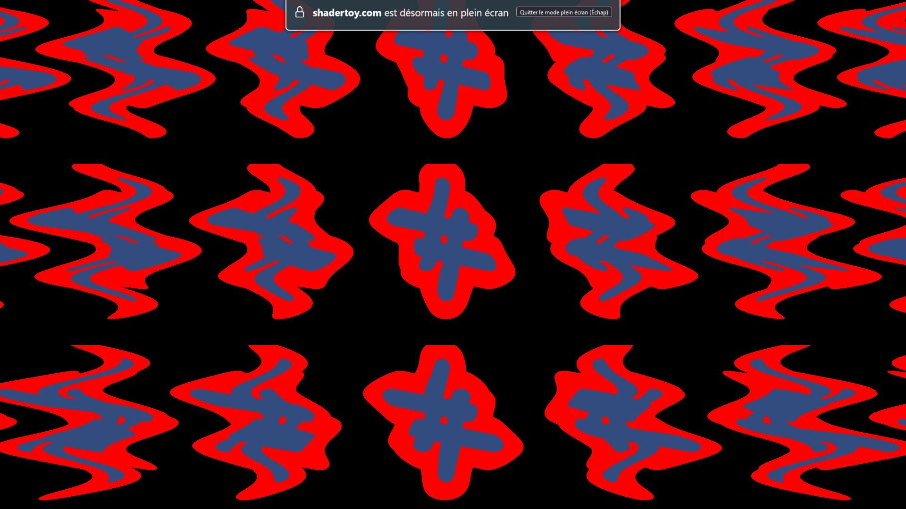
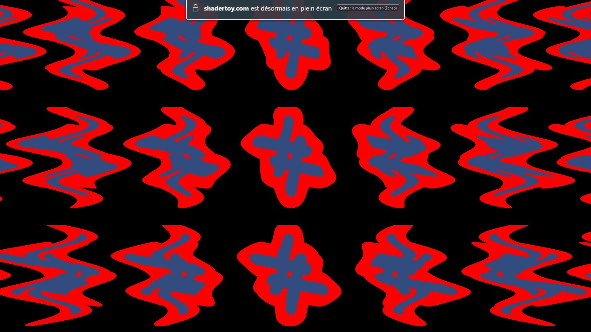
La répétition de domaine vise à transformer une SDF, exprimée sous
forme de fonction mathématique, en une forme périodique, la faisant se
répéter continuellement dans l’espace, à l’image d’une fonction
sin(x). Pour illustrer, voici une méthode simple pour
rendre une SDF périodique dans la direction \(X\) :
// repetition de l'espace
float repeated( vec3 p )
{
p.x = p.x - round(p.x);
return sdf(p);
}Dans ce contexte, sdf() représente la forme fondamentale
que nous souhaitons répéter. La fonction round() détermine
l’entier le plus proche de \(x\) et
l’utilise comme nouveau centre de coordonnées. Cela établit un nouveau
système de coordonnées tous les \(1\)
unité de distance, formant ainsi une mosaïque spatiale dans la direction
\(x\). Autrement dit, cette opération
recentre continuellement le domaine de la fonction, \(p\), dans l’intervalle \((-0.5, 0.5)\). Si la SDF
sdf(p) (représentée par une boîte arrondie dans les images
[repet00] et 5.27) est définie
dans cet intervalle, elle adoptera un comportement périodique.
Il est possible d’améliorer la méthode en offrant la possibilité de contrôler l’espacement entre les répétitions, correspondant à la période de la fonction. Cette personnalisation s’effectue en ajustant l’échelle du domaine avant de réinitialiser le système de coordonnées périodique, et en corrigeant cette échelle par la suite.
// repeter l'espace tous les s unites
float repeated( vec3 p, float s )
{
vec2 r = p - s*round(p/s);
return sdf(r);
}La nature ne présente que rarement des formes parfaitement régulières, de sorte que rien ne se reproduit à l’identique ou à des intervalles strictement égaux. Il est donc souhaitable que chaque instance de nos SDF se distingue légèrement, voire radicalement, des autres.
La première étape consiste à définir un mécanisme permettant
d’identifier chaque instance au sein de notre grille infinie et de lui
attribuer un identifiant unique. Cette tâche est facilitée par la
fonction round(), qui nous permet de positionner notre
système de coordonnées sur l’entier le plus proche du domaine. Ainsi,
cet entier devient un identifiant unique pour chaque instance de SDF.
Dans un espace 2D ou 3D, cet identifiant sera également en 2D ou 3D,
assurant ainsi un identifiant distinct par dimension. En 3D, la création
et l’utilisation de cet identifiant se ferait en modifiant le code
précédent comme suit :
// repeter l'espace tous les s unites
float repeated( vec3 p, float s )
{
vec3 id = round(p/s);
vec2 r = p - s*id;
return sdf(r, id);
}On peut exploiter cet identifiant pour moduler la taille de notre SDF. Néanmoins, la méthode de répétition de domaine que nous avons précédemment décrite présente une erreur, comme le montre l’image ci-dessous ([repet03] et 5.28). On observe des discontinuités où les lignes de distance ne s’alignent pas parfaitement. Une zone problématique est mise en évidence en jaune dans la version agrandie de cette image. Ces discontinuités sont révélatrices d’une SDF incorrectement définie.
Le problème provient de l’usage de la fonction round()
dans la fonction repeated(), qui assigne chaque point à une
cellule spécifique de la grille, ne connaissant ainsi qu’une seule
instance de sdf(p). Bien que cela soit efficace, cela
échoue si l’instance la plus proche n’est pas dans la même cellule que
p. Cette situation peut se produire si une cellule voisine
contient une instance significativement plus grande, rendant l’instance
la plus proche celle de cette cellule voisine.
Ce problème de distances incorrectes se produit en général lorsqu’on effectue une opération qui casse la symétrie le long des frontières des cellules (comme la rotation ou la mise à l’échelle).
Lorsque nous évaluons notre SDF au point p avec notre
fonction repeated(sdf(p)), il ne suffit pas de se limiter à
l’instance centrale de la cellule actuelle. En effet, la forme la plus
proche pourrait se situer dans une cellule adjacente. Ainsi, nous devons
vérifier les cellules voisines, évaluer sdf(p) et
déterminer la distance la plus courte parmi elles. Bien que cela puisse
paraître comme un nombre d’évaluations supplémentaires conséquentes de
sdf(p) (notre boîte arrondie ici), nous pouvons optimiser
cette approche. Il nous faut explorer uniquement les cellules voisines
susceptibles de contenir une instance plus proche que celle du point
actuel. Ces cellules se limitent aux côtés les plus proches de notre
point d’échantillonnage p. Ainsi, en 2D, au lieu de
vérifier les \(9\) cellules attendues
(la cellule actuelle et ses \(8\)
voisines), nous en examinons seulement \(4\) (la cellule actuelle et \(3\) voisines). En 1D, nous échantillonnons
\(2\) cellules (actuelle et une
voisine) au lieu de \(3\), et en 3D, ce
sont \(8\) cellules (actuelle et \(7\) voisines) au lieu de \(27\).
float repeated( vec2 p, float s )
{
vec2 id = round(p/s);
vec2 o = sign(p-s*id);
float d = 1e20;
for( int j=0; j<2; j++ )
for( int i=0; i<2; i++ )
{
vec2 rid = id + vec2(i,j)*o;
vec2 r = p - s*rid;
d = min( d, sdf(r) );
}
return d;
}Ici, la fonction sign() se charge de déterminer si le
voisin gauche ou droit doit être vérifié pour la proximité de forme (ou
haut contre face avant et haut contre bas). La SDF ainsi calculée est
correcte (voir [repet05]).


Nous observons également (5.29) que la répétition de domaine peut être étendue aux coordonnées polaires plutôt qu’aux coordonnées cartésiennes. Les coordonnées polaires constitueront le sujet de notre prochaine section.
Alt paa sin rette Plads!
Hans Christian Andersen
Une explication s’avère nécessaire quant au choix délibéré de l’épigraphe située ci-dessus. Alt paa sin rette Plads! est à la fois le titre d’un conte d’Andersen et une expression danoise qui se traduit littéralement par « Tout à sa place correcte ! ». C’est un clin d’œil à Andersen, célèbre pour ses contes adaptés en films d’animation par Disney, bien que ces adaptations soient souvent très éloignées de ses œuvres originales qui nous ont marqués, comme « La Petite Sirène » ou « La Reine des Neiges ». Mais au-delà de cet hommage, c’est aussi une manière pour moi de mettre en lumière le fait que l’écriture d’un shader requiert un haut degré d’organisation, de logique, et ne se base pas uniquement sur l’intuition. Avant l’art, il y a la technique.
Le passage aux coordonnées polaires revêt une importance particulière. En effet, il est courant d’utiliser les coordonnées polaires pour passer d’un système de référence cartésien, tel qu’une grille rectangulaire, à un système de référence circulaire, mieux adapté à certaines formes comme les images 6.1 où l’on voit que le rayon de la sphère est sculpté à intervalles réguliers sur le plan \(XZ\).


Jusqu’à présent, nous avons travaillé avec les coordonnées cartésiennes56, où le centre de l’écran correspondait à l’origine. À partir de ce système cartésien, nous pouvons calculer les coordonnées polaires, permettant ainsi une représentation de l’espace sous une forme circulaire. Alors que dans l’espace cartésien 2D le pixel est décrit par ses coordonnées \(X\) et \(Y\), dans le système de coordonnées polaires, chaque pixel est défini par son angle \(\theta\) et sa distance \(r\) par rapport à l’origine. Dans le schéma (6.2) le pixel n’est plus défini en termes de \(X\) et \(Y\) mais termes de \(r\) et de l’angle \(\theta\).
En code nous utilisons la fonction trigonométrique
atan(uv.y,uv.x) pour obtenir l’angle et à la fonction
length(uv) pour obtenir le rayon. Nous pouvons ensuite
stocker le résultat dans un vecteur vec2 (voir [polarX] et 6.3). Les images
[polarX] et 6.3 représentent
respectivement l’angle des coordonnées uv et la distance des
pixels par rapport au centre.
float pixel_angle = atan(uv.x,uv.y) ;
float pixel_distance = length(uv)* 2.0 ;
vec2 st = vec2(pixel_angle , pixel_distance);st.x // Contenu de la variable st.yCependant, la représentation de l’angle n’est pas correcte car la
fonction atan() renvoie l’angle en radians compris entre
\(0\) et \(2\pi\). Pour corriger cela, il est
nécessaire de remapper57 ces valeurs dans l’intervalle de
\(0\) à \(1\) en divisant le résultat par \(2\pi\) (voir [polar00]).
Cependant, même après ce remappage, la moitié gauche de l’écran reste
complètement noire en raison des valeurs négatives. Pour résoudre ce
problème, nous ajoutons \(0.5\) au
résultat pour obtenir un dégradé complet (voir 6.4).
fragColor = vec4(st.x / PI_2 + 0.5 );
Lorsque nous assignons une texture dans ces coordonnées polaires, nous obtenons effectivement une représentation circulaire (voir [polar02]).
En combinaison avec la répétition de l’espace on pourrait aussi sectoriser l’espace des coordonnées polaires, afin par exemple de pouvoir créer tentacules ou tout autre objet à intervalles réguliers (voir 6.5).
Les effets de post-traitement58 (post-process en anglais), tels que le flou59 ou l’aberration chromatique60, sont finalement relativement simples à implémenter dans le fragment shader (voir [blur00] et 6.6 ).
 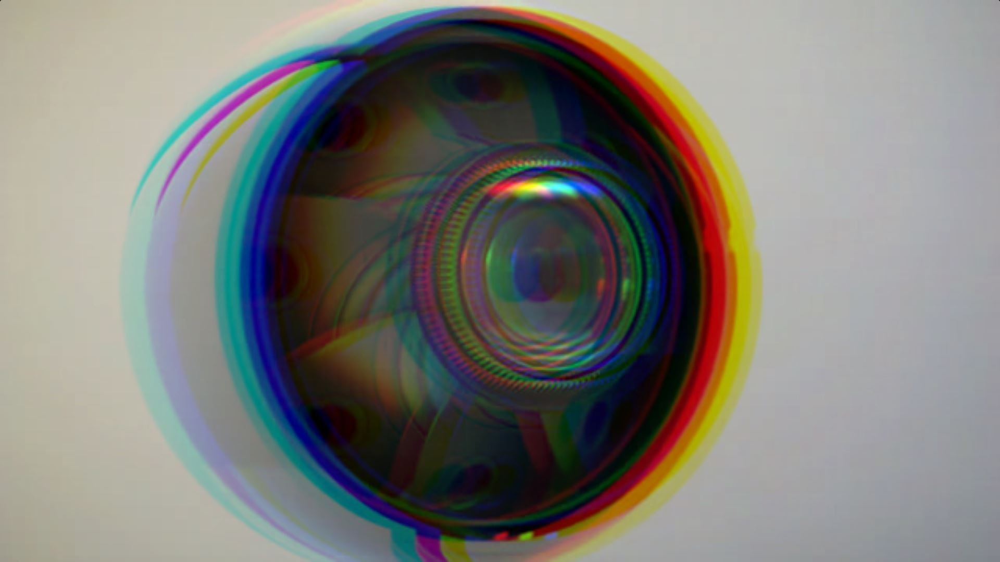
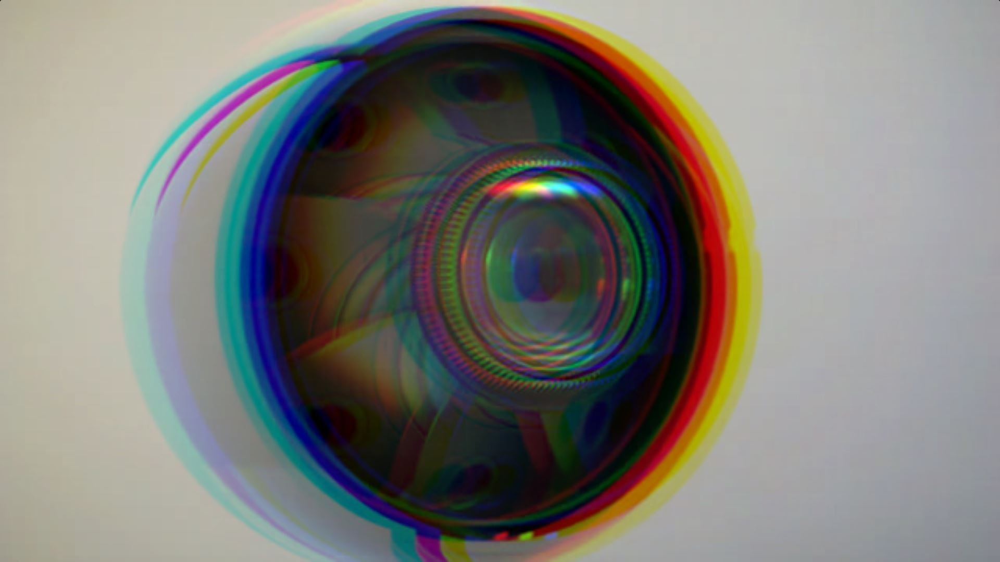
En OpenGL, la texture d’origine serait gérée dans un frame buffer61 plutôt compliqué à manipuler. Cependant, dans des environnements de développement tels que Shadertoy ou KodeLife la démarche est plus aisée car il suffit de créer des passes successives (voir [shadertoy00] et 6.7).
En pratique, il suffit d’appliquer un shader d’effet sur un shader d’origine (voir [mapuv01] et 6.8), qui sera interprété comme une texture. Dans l’image 6.8, nous avons appliqué un shader en tant que texture sur une télévision.
Il est à noter que le shader d’origine utilise les L-systèmes62, également connus sous le nom de systèmes de Lindenmayer, pour représenter l’arbre.
 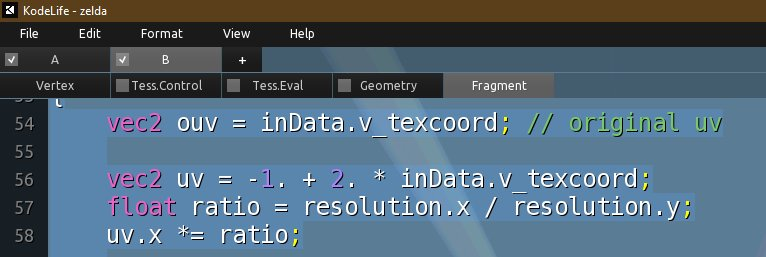
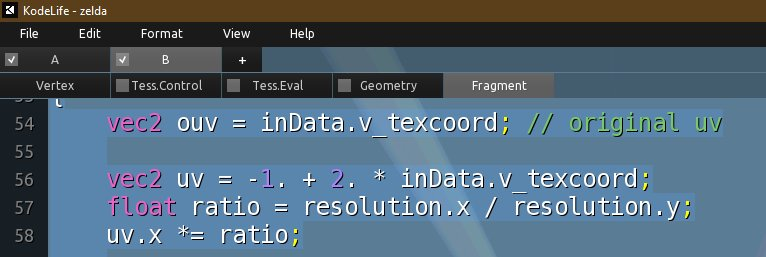

Grâce à la technique du ray marching, nous créons la scène constituée d’un cube qui tourne pour représenter une télévision et d’un cube vu de l’intérieur qui représente la pièce. Lorsque le rayon touche la pièce, nous appliquons un éclairage classique. En revanche, lorsque nous touchons le téléviseur, nous voulons appliquer la texture. La difficulté rencontrée réside donc dans la récupération des bonnes valeurs de coordonnées de l’espace sur lequel nous allons appliquer la texture. La principale difficulté en termes de code est de bien penser à sauvegarder l’espace de la SDF qui tourne dans une variable globale.
// variable globale pour sauvegarder
// l espace de la tv qui tourne pour mapper la texture plus tard
vec3 ptv;
// la description de la scene refactorisee, renvoie la distance + un id
vec2 map(vec3 p)
{
(...)
// on sauvegarde un espace dedie pour le cube qui tourne
vec3 p2 = p;
// on le translate en Y
p2 -= vec3(0.,-1.5+sin(iTime),5.);
// on le rot sur Y
p2.xz *= r2d(iTime);
// important: on sauvegarde l espace dans la variable globale en vue
// de dessiner la texture
ptv = p2;
// une variable pour controler l effet bombe de la tv
float thick = mix(.4,.2,sin(p2.y*2.-1.57)*.5+.5);
float tv = _cube(p2, vec3(1.,0.7,thick)*2.);
//room = min(room, length(p2)-1.);
// on l'ajoute
acc = _min(acc, vec2(tv, 1.));
return acc;
}De cette manière, nous pouvons réutiliser cet espace au moment du rendu du téléviseur. En discriminant les objets, nous pouvons déterminer quand nous faisons référence au téléviseur. En ajoutant une condition sur la profondeur, nous sommes en mesure de projeter la texture uniquement sur la face avant de l’objet.
// dans la fonction de \textit{ray marching}
if (res.y == 1. && ptv.z < 0.)
{
// on projette la texture sur XY
// bien penser a equilibrer les valeurs
col = texture(iChannel0, ptv.xy*vec2(1.,2.)*.25+.5+vec2(0.,.5)).xyz;
}Dans le domaine des images de synthèse, un défi récurrent est l’apparence souvent trop lisse et parfaite de ces rendus. Dans la nature, les objets présentent des aspérités, des irrégularités et diverses imperfections.
La problématique centrale réside dans la recherche de méthodes pour intégrer cette complexité naturelle dans les images générées. Bien qu’il soit tentant de capturer des images réelles pour simuler un aspect plus naturel, une approche alternative consiste à recourir aux mathématiques pour générer des motifs qui, bien que déterministes, donnent l’illusion de l’aléatoire. En ajustant judicieusement les paramètres, on peut obtenir des résultats qui semblent naturellement aléatoires, ouvrant ainsi des perspectives intéressantes pour améliorer nos shaders.

Pour obtenir une génération pseudo-aléatoire mathématique, nous
établissons une fonction qui prend un nombre en entrée et retourne un
résultat aléatoire compris entre \(0\)
et \(1\). Dans notre approche initiale,
la coordonnée uv.x est utilisée comme référence pour ce
calcul.
Ce nombre est ensuite intégré dans une fonction sinusoïdale, le positionnant ainsi sur cette courbe. Pour augmenter la complexité de notre fonction, nous multiplions ce nombre par un facteur important, intensifiant la fréquence de l’onde sinusoïdale.
Étant donné que l’onde sinusoïdale a une amplitude oscillant entre
\(-1\) et \(1\), nous ajustons notre résultat en le
multipliant par un coefficient. Cela élargit la plage d’amplitude,
faisant varier les valeurs entre des niveaux bien plus élevés et plus
bas. Enfin, nous utilisons la fonction fract() pour
extraire la partie fractionnaire de ce résultat.
float c = fract(sin(uv.x*100.)*5647.);Le rendu final présente un schéma similaire à un code-barres, où chaque colonne de pixels affiche des nuances de couleurs variées, oscillant entre le noir et le blanc (voir [noise00] et 6.9).

Le prochain objectif est de produire une représentation
bidimensionnelle du bruit aléatoire, similaire au grain présent sur les
anciennes télévisions cathodiques. Pour parvenir à cela, nous incluons
la composante uv.y dans notre calcul de génération
pseudo-aléatoire, en utilisant une fréquence significativement
supérieure à celle de la composante uv.x (voir [noise02]).
Il est possible de varier ces paramètres pour obtenir diverses sortes de motifs (patterns63 en anglais). Il est à noter que les résultats peuvent légèrement varier selon la carte graphique utilisée.
Il est possible de regrouper ces calculs au sein d’une fonction, non
seulement pour améliorer la lisibilité du code, mais également pour
faciliter sa réutilisation. Nous nommons cette fonction
N21() car elle accepte une coordonnée 2D en entrée et
produit un nombre flottant aléatoire dans l’intervalle \([0, 1]\).
float N21(vec2 p)
{
return fract(sin(p.x*100.+ p.y*546.)*5647.);
}
L’inconvénient majeur de cette approche, est que lorsque nous zoomons sur les uv, on distingue un motif qui montre que ce n’est pas de l’aléatoire mais du pseudo-aléatoire (voir 6.10).
Une autre méthode pour générer de l’aléatoire consiste à utiliser
l’interpolation. Nous commençons par établir une grille de cellules en
appliquant la fonction fract() à des coordonnées uv
multipliées. Chaque cellule est définie par des coordonnées variant dans
l’intervalle \([0,1]\) tant en \(X\) qu’en \(Y\). Il nous faut également un identifiant
pour déterminer dans quelle cellule nous nous trouvons. La fonction
floor() nous permet d’obtenir la partie entière d’un
nombre. Les fonctions fract() et floor() sont
complémentaires. Par exemple, fract(1.53) retourne \(0.53\), tandis que floor(1.53)
retourne \(1\) (voir [noise04] et 6.11).

fract() // La fonction floor()uv*=10.;
vec2 lv = fract(uv);
vec2 id = floor(uv);Pour chaque coin de ces cellules, nous appliquons notre fonction de bruit, générant ainsi une valeur aléatoire pour chaque coin. Puis nous interpolons les valeurs en trois étapes. D’abord entre les coins inférieurs et les coins supérieurs sur l’axe horizontal, et enfin avec une interpolation entre ces résultats sur l’axe vertical.
float bl = N21(id);
float br = N21(id+vec2(1,0));
// interpolation entre les coins bas gauche et bas droite selon X
float b = mix(bl,br,lv.x);
float ul = N21(id+vec2(0,1));
float ur = N21(id+vec2(1,1));
// interpolation entre les coins haut gauche et haut droite selon X
float u = mix(ul,ur,lv.x);
// interpolation des valeur calculees selon Y
float c = mix(b,u,lv.y);
Le rendu obtenu est plus doux que celui précédemment obtenu.
Cependant, un inconvénient est que les frontières entre nos cellules
sont visibles, créant ainsi des halos en forme de croix, comme illustré
dans l’image [noise06]. Ce phénomène est dû à la nature
linéaire de notre interpolation. En effet, sur notre grille
lv, les valeurs progressent de manière linéaire de \(0\) à \(1\). Grâce à la fonction
smoothstep(), nous avons la possibilité d’atténuer cette
linéarité, permettant à l’évolution des valeurs de suivre une
trajectoire en « S » plutôt qu’une ligne droite. Le résultat est visible
dans l’image 6.12.
vec2 lv = smoothstep(0.,1.,fract(uv));Le bruit de Perlin64, bien qu’étroitement lié au value noise, produit généralement des résultats de meilleure qualité. Une méthode alternative pour son calcul consiste à évaluer la colinéarité entre un vecteur aléatoire et le vecteur s’étendant du coin de chaque cellule vers son centre (voir [noise12] et 6.13).


Le Billow noise est une variante du bruit de Perlin qui produit une apparence de nuage ou de fumée. Il est caractérisé par des transitions douces et des formes arrondies, donnant un aspect ondulé ou nuageux. Contrairement au bruit standard qui varie linéairement entre \(-1\) et \(1\), le Billow noise utilise des valeurs absolues des contributions du bruit, créant des formes plus arrondies et douces (voir [noise10]).
// billow
float billow = abs(perlin);Le Ridge noise est une autre variante du bruit de Perlin qui produit des crêtes ou des formations montagneuses. Il est similaire au Billow noise, mais utilise des valeurs négatives pour certaines composantes du bruit, créant des formes pointues ou en crêtes. Cette caractéristique lui permet de générer des terrains avec des sommets pointus et des vallées profondes, donnant un aspect plus accidenté ou montagneux (voir 6.14).
float ridged = 1.0- abs(perlin);
ridged = ridged*ridged;Diverses fonctions de bruit génèrent des effets différents. Nous avons abordé le value noise, une forme de bruit doux couramment utilisée pour élaborer des terrains procéduraux infinis, à l’image de ceux de Minecraft ou No Man’s Sky.
Le Voronoi est particulièrement adapté pour créer des motifs organiques rappelant des structures naturelles comme les ailes de libellule, les nervures de feuilles ou encore les taches de la peau des girafes. Il constitue également une base solide pour simuler des nuages réalistes. Ainsi, le bruit de Voronoi peut représenter une technique à inclure dans une boîte à outils dédiée à la conception de shaders.

La mise en place du Voronoi débute par la création d’une grille de cellules, exactement comme pour le value noise (voir [noise04]). Chaque cellule de cette grille peut inclure un point central (voir [noise16]). Par la suite, une itération est effectuée sur chaque pixel afin de calculer la distance minimale vers le point le plus proche (voir 6.16).

Visuellement, il est manifeste que chaque pixel identifie son point le plus proche à l’intérieur de sa cellule respective. Une représentation graphique de cette distance produit une distribution uniforme des résultats.
Pour apporter une touche plus organique à cette démarche, des décalages peuvent être ajoutés aux points de la grille grâce à l’ajout de bruit. Il est à noter que cette incorporation de bruit entraîne une augmentation du nombre de vérifications dans l’algorithme. Ainsi, chaque pixel doit déterminer le point le plus proche au sein de sa cellule actuelle et dans les huit cellules adjacentes.
float minDistFromPixel;
for (float i = -1.0; i <= 1.0; i++) {
for (float j = -1.0; j <= 1.0; j++) {
vec2 adjGridCoords = vec2(i, j);
vec2 pointOnAdjGrid = adjGridCoords;
vec2 noise = noise2x2(currentGridId + adjGridCoords);
pointOnAdjGrid = adjGridCoords + sin(iTime * noise) * 0.5;
float dist = length(currentGridCoord - pointOnAdjGrid);
minDistFromPixel = min(dist, minDistFromPixel);
pointsOnGrid += smoothstep(0.95, 0.96, 1.0 - dist);
}
}Pour simuler des nuages, il suffit de soustraire la distance minimale du pixel dans le code, ce qui rendra une apparence nuageuse.
Le Fractional Brownian Motion (FBM) est une technique qui, malgré son nom complexe, se révèle assez simple à mettre en œuvre en livecoding pour ceux qui maîtrisent déjà les concepts du bruit. En résumé, la technique du FBM consiste à superposer des couches de bruit afin de composer une texture très détaillée présentant des propriétés d’auto-similarité, présentes aussi dans les fractales (voir [noise09] et 6.17).
Par analogie avec la musique, cette approche de superposition de bruits est souvent qualifiée d’ajout d’octaves de bruit. À chaque nouvelle octave, nous doublons la fréquence et ajustons l’amplitude en conséquence. Bien que chaque octave apporte sa propre richesse visuelle, la combinaison de plusieurs octaves crée une texture plus détaillée, offrant des possibilités de représentation pour des éléments variés tels que les nuages, les vagues, les montagnes, etc (voir [fbm00] et 6.18).
float c = SmoothNoise(uv*4.)*1.;
c+= SmoothNoise(uv*8.)*.50;
c+= SmoothNoise(uv*16.)*.25;
c+= SmoothNoise(uv*32.)*.125;
c+= SmoothNoise(uv*64.)*.0625;
c/=(1.+.5);

Le calcul des ombres est en réalité plus simple qu’il n’y paraît. Actuellement, nous utilisons notre méthode de ray marching pour identifier un point de la scène en contact avec nos objets (voir [shad00]). Cette même méthode peut être réutilisée pour générer un second rayon pointant vers la source lumineuse de la scène. Si ce rayon intersecte un objet lors de son trajet entre le point sur la surface et la source lumineuse, cela signifie qu’il y a une occlusion et que le point sur la surface se trouve dans l’ombre.

Dans notre implémentation GLSL, nous répéterons le ray
marching une seconde fois, en prenant comme origine le point
p, découvert lors de la première étape du ray
marching lorsque nous avons identifié les objets de la scène. La
direction du nouveau rayon sera définie par lightDirection.
Dans notre code, cela se traduit simplement par l’ajout de trois lignes
après le calcul de la réflexion diffuse.
float dif = clamp(dot(normal, lightDirection), 0., 1.);
// diffuse reflection clamped between zero and one
vec3 newRayOrigin = p;
// cast shadow ray to the light source
float shadowRayLength = rayMarch(newRayOrigin, lightDirection);
if (shadowRayLength < length(lightPosition - newRayOrigin)) dif *= 0.;
// if the shadow ray hits the sphere,
// set the diffuse reflection to zero,
// simulating a shadowLors de l’exécution du code, l’écran affiche presque entièrement un
noir total. Cette obscurité est en réalité due à une raison assez
intuitive. Lorsque nous lançons notre second rayon de ray
marching vers la source lumineuse, l’algorithme considère le point
p, qui est en contact direct avec la surface. Par
conséquent, dès le premier tour de la boucle, l’algorithme détecte une
collision avec un objet, faisant ainsi croire que la plupart de la scène
est dans l’ombre, d’où l’écran noir.
Pour résoudre ce problème, il est nécessaire de décaler légèrement le
point d’origine du second rayon par rapport à p. Fort
heureusement, nous sommes en mesure de calculer la normale au point de
la surface, ce qui nous permet de nous éloigner subtilement de la
surface en suivant la direction de cette normale. Une méthode couramment
employée consiste à ajouter la normale du point de la surface,
multipliée par une petite valeur, à la position de p, afin
d’obtenir un point voisin plus approprié pour l’origine du second
rayon.
vec3 newRayOrigin = p + normal * PRECISION;L’ombre apparaît encore assez sombre. Pour la rendre plus claire, nous pouvons ajuster la proportion de la réflexion diffuse. Actuellement, nous attribuons la couleur de la réflexion diffuse à zéro pour les points identifiés comme étant dans l’ombre. En modifiant le « facteur d’échelle » et en le fixant à \(0.2\), nous pouvons obtenir une ombre plus légère et plus réaliste (voir 6.19).
if (shadowRayLength < length(lightPosition - newRayOrigin)) dif *= 0.2;
// shadowL’ombre est désormais plus esthétique, permettant d’apercevoir la couleur diffuse du sol à travers elle.
Le glow65, ou effet de brillance, désigne cette capacité d’un objet à paraître lumineux à émettre de la lumière. Dans notre environnement quotidien, plusieurs éléments naturels ou artificiels présentent cette caractéristique, tels que les lucioles, les ampoules, les méduses et même les étoiles dans le ciel. Ces entités peuvent émettre une lumière qui illumine leur environnement, qu’il s’agisse d’une lumière discrète s’étendant sur une courte distance ou d’une lueur intense comparable à celle de la pleine lune.
Pour obtenir un effet de glow réussi, il est crucial d’assurer un contraste prononcé entre la teinte de l’objet et celle de son fond, ainsi qu’un dégradé coloré qui s’atténue progressivement à mesure que l’on s’éloigne de l’objet. En observant ces deux critères, nous pouvons élaborer un effet lumineux efficace (voir [glow1]).
Dans le contexte du code, les SDF génèrent une valeur de distance signée indiquant la distance par rapport à un objet donné. Il convient de rappeler que les shaders dessinent chaque pixel de manière parallèle, ce qui signifie que chaque pixel est positionné à une distance définie de l’objet. Ensuite, nous avons la possibilité de créer une fonction qui introduira un effet de glow proportionnel à la distance par rapport au centre de l’objet. Pour illustrer cette fonction, Desmos66 peut être utilisé en saisissant l’équation \(y = \frac{1}{x}\). Dans ce contexte, \(x\) représente la valeur de distance signée pour l’objet. À mesure que cette valeur s’accroît, la sortie, \(y\), se réduit (voir 6.20).


La fonction \(y = \frac{1}{x}\) peut
générer des valeurs imprévues lorsque \(x\) est négatif (\(x\leq0\)). Cette situation peut conduire le
compilateur à réaliser des calculs inhabituels, ce qui entraîne des
couleurs non anticipées. Pour pallier ce problème, nous pouvons faire
appel à la fonction clamp() afin de s’assurer que la valeur
de l’effet de glow demeure comprise entre \(0\) et \(1\) (voir [glow3]).
float d = length(uv) - 0.2; // signed distance function
vec3 col = vec3(step(0., -d)); // create white circle with black background
float glow = 0.01/d; // create glow and diminish it with distance
glow = clamp(glow, 0., 1.); // remove artifacts
col += glow; // add glow
fragColor = vec4(col,1.0); // output colorIl est possible de multiplier l’effet de glow par une valeur pour rendre l’objet plus lumineux pour faire en sorte que l’effet de glow s’étende sur une plus grande distance (voir 6.21).
col += glow * 5.; // add glow
fragColor = vec4(col,1.0); // output color
Nous venons de détailler la manière de créer un effet de glow pour des formes 2D dans un shader en exploitant les SDF et en instaurant un contraste entre la couleur de la forme et celle de l’arrière-plan. De plus, nous avons généré un dégradé autour des contours de la forme. En combinant ces deux éléments, nous avons réussi à obtenir un effet de brillance simulé dans nos shaders.
En 3D, le principe reste identique, à la différence près que nous accumulons l’effet de brillance lorsque les rayons du ray marching s’approchent de l’objet (voir [shadat15] et 6.22).
// couleur pour le bloom
vec3 accCol = vec3(0.);
// depart du ray marching
for(float i=0.; i<128.;i++)
{
vec2 res = map(p);
if (distance(p, ro) > 20.) // astuce pour pas aller trop loin
break;
if(res.x < .01)
{
(...)
}
p+= rd*res.x;
// accumulation du bloom
// degrade selon l'id de l objet entre rouge et bleu
vec3 rgb = mix(vec3(1., 0.,0.), vec3(0.,0.,1.), res.y);
// permet de definir ou commence ou plutot finit le bloom, ici a 1.5 de la surface
float stBl = (1.-sat(res.x/1.5));
accCol += rgb*0.04*stBl; // ajout du bloom
}
// ajout du bloom
col += accCol;Nous avons initialement entrepris l’étude des techniques fondamentales nécessaires à la programmation d’un fragment shader en temps réel, avant d’approfondir notre exploration avec des techniques avancées visant à améliorer la qualité visuelle. Malheureusement, plusieurs concepts auraient mérité d’être mis en lumière, notamment le Fresnel, le flou, le Truchet, les fractales, la cubemap, la réflexion de la lumière, et dans le domaine sonore, la synthèse sonore générée par les shaders.
En décrivant davantage, le Fresnel fait référence à l’interaction optique entre la lumière et une surface, influençant la manière dont celle-ci se réfléchit en fonction de l’angle d’incidence. Le flou, quant à lui, représente un effet appliqué en post-traitement. Le Truchet se rapporte à la disposition de motifs réguliers pour créer un pavage. Les fractales sont des structures mathématiques caractérisées par leur auto-similarité à différentes échelles. La cubemap est utilisée pour simuler un environnement tridimensionnel autour d’une scène. La réflexion de la lumière dans un contexte de ray marching fait rebondir la trajectoire du rayon de manière symétrique. Enfin, la synthèse sonore en shader permet d’accomplir des tâches généralement réalisées dans des environnements tels que SuperCollider.
Pour améliorer la compréhension de ces techniques non explicitées dans le mémoire, j’ai décidé d’ajouter quelques illustrations des ateliers correspondants, accompagnées d’un lien vers le code source commenté de ces shaders, hébergé sur le wiki du Fuz.


Ce chapitre sera consacré à mes expérimentations antérieures visant à explorer l’interaction entre la musique et les shaders en temps réel. Mon choix s’est orienté vers des outils permettant de générer un flux MIDI afin d’animer mes shaders en fonction des hauteurs des notes. Dans cette optique, j’ai entrepris une étude approfondie de la structure MIDI afin de mieux appréhender et localiser les informations clés telles que la hauteur de la note, sa vélocité et sa durée (une section sera dédiée à cette exploration).
Il existe de nombreux logiciels de livecoding musical parmi lesquels choisir. Dans cette multitude, j’ai sélectionné Orca (voir [orca00]) pour sa syntaxe ésotérique et FoxDot (voir 7.1) pour son intégration avec Python ainsi que pour sa syntaxe intuitive proche de celle d’une partition papier.
J’approfondirai ces deux solutions plus en détail dans la suite de ce mémoire. Il est à noter que parmi les demosceners, chacun a ses propres préférences en matière de logiciel, souvent influencées par des affinités personnelles ou par leur expérience professionnelle ou artistique. Parmi les logiciels les plus appréciés figurent TidalCycles, Sonic Pi, SuperCollider (qui demeure la référence en matière de synthèse sonore) ainsi que Max/MSP (voir [tidal00], 7.2, [sc00] et 7.3).
Au cours de mon intensif de M1, j’ai élaboré le pipeline suivant : d’abord générer le MIDI avec Orca, puis transférer vers Ableton via loopMIDI67, puis intégrer le MIDI dans TouchDesigner à l’aide d’un plugin pour finalement animer les visuels grâce aux nodes de TouchDesigner. J’ai été agréablement surpris de ma facilité à maîtriser Orca, malgré sa réputation de langage difficile à appréhender. Cependant, je restais insatisfait, les étapes du processus manquant de réactivité pour une utilisation en conditions réelles lors de performances sur scène.
C’est pourquoi, lors de mon intensif de M2, j’ai choisi une approche légèrement revisitée en concevant un pipeline à la fois similaire et unique. Cette fois-ci, le MIDI était généré par FoxDot et ensuite acheminé vers TouchDesigner via loopMIDI. Au sein de cette configuration, le MIDI anime des variables uniformes intégrées au code GLSL de TouchDesigner, qui propose un node dédié. Cette démarche m’a offert l’occasion d’approfondir mes compétences avec FoxDot et de constater la facilité avec laquelle on peut traduire un shader dans TouchDesigner. Bien que cette approche m’ait paru plus efficace que la précédente, mon objectif demeure de réduire au maximum l’usage de logiciels tiers pour la création d’animations de shaders, un objectif que j’espère atteindre à la fin de mon mémoire.
Je commencerai par une analyse de mes intensifs de M1 et M2 pour exposer ma méthodologie, ainsi que les avantages et inconvénients rencontrés au cours de ces expérimentations pour ensuite proposer une solution basée sur l’éditeur de shaders KodeLife renommé pour sa capacité à traiter divers types d’entrées, notamment le MIDI sous forme de texture.
Lors de mon intensif en M1, j’ai eu recours à Orca pour la transmission de signaux MIDI (voir 7.4). Orca est un langage de programmation ésotérique68 (parfois également désigné par le terme « exotique »), conçu par Hundred Rabbits69 et particulièrement adapté au livecoding. Le code peut être modifié en temps réel, et en utilisant les signaux MIDI, il est possible de contrôler des éléments visuels ou des dispositifs d’éclairage.

Orca est structuré comme une grille bidimensionnelle dans laquelle
chaque cellule peut contenir un caractère. Une cellule vide est
symbolisée par le caractère « . ».
Les opérateurs d’Orca comprennent toutes les lettres de l’alphabet ainsi que quelques symboles. Chaque opérateur occupe une case unique dans la grille. La majorité des opérateurs ont une ou plusieurs entrées à l’Est et à l’Ouest, et une sortie généralement dirigée vers le Sud70. Bien que certains opérateurs soient mobiles, la plupart demeurent fixes.
Chaque lettre de l’alphabet, qu’il s’agisse des majuscules (\(A-Z\)) ou des minuscules (\(a-z\)), représente un opérateur spécifique.
Les opérateurs en majuscules s’exécutent à chaque frame, tandis
que les opérateurs en minuscules s’exécutent à chaque bang,
symbolisé par le caractère « * ».
Par exemple, l’opérateur « D » génère un bang
régulier au Sud. Tout opérateur adjacent à cette cellule spécifique sera
alors activé. Parmi ces opérateurs, on trouve des fonctions d’addition,
de soustraction, ainsi que des fonctions pour lire et écrire dans des
variables.
Prenons l’exemple de l’opérateur « D ». Il dispose de
deux entrées (« \(8\) » et « \(2\) ») et d’une sortie (« *
»). Ainsi, un bang sera généré toutes les 16 frames et
activera les opérateurs adjacents.
8D2
.*.D’autres opérateurs ont un nombre différent d’entrées et de sorties.
Prenons l’exemple de l’opérateur « X » : il dispose de
trois entrées (deux à l’Ouest correspondant au décalage horizontal et
vertical et une à l’Est correspondant au caractère que l’on souhaite
écrire) et d’une sortie au Sud. Cet opérateur permet d’écrire un
caractère avec un décalage dans la grille. Dans cet exemple, il écrit un
\(7\) décalé d’une cellule vers le Sud
et d’une cellule vers l’Est.
11X7
....
...7Pour jouer une note MIDI, on combinera les opérateurs «
D » (qui génère un bang régulier) et «
\: » (qui envoie un message MIDI). Bien que «
\: » n’ait pas de sortie dans Orca, il envoie un message
MIDI à un appareil MIDI.
D8.....
*:A2F51L’opérateur « \: » attend 5 arguments mais seuls les
trois premiers sont obligatoires.
A (argument 1): le channel MIDI sur lequel
envoyer le message (A == channel 10)
2 (argument 2): l’octave (2 ==
Troisième octave)
F (argument 3): la note (F ==
Fa)
5 (argument 4): la vélocité (la force avec laquelle la touche a été frappée lorsque la note a été jouée)
1 (argument 5): la durée (le temps pendant lequel la note est tenue)
C’est le point de départ pour générer un son, mais en associant divers opérateurs, on peut produire une gamme de possibilités, telles que jouer des notes de façon aléatoire, stocker des mélodies dans des tableaux, créer et exécuter des séquences mélodiques, utiliser des variables, et appliquer la logique booléenne pour établir des conditions, entre autres. Le défi réside dans la quête d’une harmonie musicale tout en concevant un visuel singulier. De manière personnelle, je trouve aussi un intérêt particulier à explorer l’aspect visuel du langage, comme en recréant un Tetris synchronisé avec la musique de Tetris (voir [tetris00]). Le lecteur pourra retrouver la liste de tous les opérateurs en annexe 9.
Lors de mon intensif, j’ai acheminé les signaux MIDI d’Orca vers Ableton, puis d’Ableton vers TouchDesigner via un réseau nodal pour interpréter les valeurs MIDI et animer les visuels (voir 7.6 et 7.7). Bien que cette méthode soit efficace, elle ne m’a pas semblé suffisamment proche de la pratique du livecoding. C’est lors de mon intensif de M2 que j’ai pu explorer une approche plus directe, en exploitant le node de TouchDesigner spécifiquement conçu pour le fragment shader.


Suite à ma déception concernant le manque d’interactivité en temps réel après l’intensif de M1, j’ai décidé, dans le cadre de mon intensif de M2, d’explorer l’utilisation de FoxDot pour la création de flux MIDI. L’objectif initial de cette démarche était de concevoir une performance de livecoding qui mettrait en évidence l’interaction entre le son produit via le code de FoxDot et les fragment shaders (voir 7.8).
Dans cette section, je vais présenter ma démarche et évoquer les difficultés que j’ai rencontrées durant ce projet. Mais avant cela j’aimerais approfondir l’étude de FoxDot comme j’ai pu le faire avec Orca.


FoxDot est un environnement de programmation Python qui fonctionne en tandem avec SuperCollider, un langage de programmation dédié à la synthèse audio en temps réel et au traitement du signal. Bien que je n’aborde pas en détail les capacités de SuperCollider dans ce mémoire, il est important de souligner sa puissance et sa capacité à créer des sons électroniques et des effets sonores complexes à partir de zéro grâce à la synthèse sonore. Néanmoins, l’interaction avec SuperCollider peut être simplifiée grâce à FoxDot. On utilise SuperCollider en arrière-plan pour configurer les instruments, puis on redirige le flux audio vers des DAWs71 (Digital Audio Workstation) comme Reaper ou Ableton pour écouter les instruments.
Ce qui m’a particulièrement attiré vers FoxDot, malgré sa documentation souvent incomplète et dispersée sur le web, c’est sa similitude avec l’écriture d’une partition musicale et sa syntaxe objet propre au langage Python. Fort de mes connaissances en solfège acquises par ma pratique du piano et du bandonéon, j’y vois une analogie avec la représentation d’une partition traditionnelle. Une mélodie est symbolisée par des listes, qui peuvent elles-mêmes être considérées comme des objets. Ainsi, on peut accéder à de nombreux attributs tels que la hauteur de la note, sa durée, le sustain, et bien d’autres.
Pour mieux comprendre la logique propre à FoxDot nous allons analyser pas à pas une ligne de code « classique ».
p1 >> bass([0,1,2,3,4,5], dur=PDur(3,8), amp=[1,1/2,1/2]).every(6,"stutter",4,dur=3,oct=6)Dans cet exemple, nous associons un objet Player à la
variable p1 à l’aide de l’opérateur >>.
Le terme qui suit immédiatement, bass(), désigne
l’instrument qui sera utilisé dans SuperCollider. Nous définissons
ensuite les arguments du Player. Le premier argument, qui
attend une liste, spécifie les notes à jouer. Ainsi,
[0,1,2,3,4,5] correspond aux notes Do, Ré, Mi, Fa, Sol et
La dans le contexte de la gamme de Do majeur.
Les attributs suivants, dur et amp,
déterminent respectivement la durée des notes et l’amplitude du son. La
partie finale avec la méthode
.every(6,"stutter",4,dur=3,oct=6) applique la méthode
stutter() tous les 6 temps, avec une durée de 3 et une
octave de 6 pour chaque note.
Une caractéristique unique de FoxDot est la présence de variables qui
évoluent dans le temps. Lors de la programmation musicale en direct, il
est souvent souhaitable que les éléments évoluent progressivement. Cela
peut être illustré par l’utilisation de séquences d’accords. Par
exemple, pour représenter la séquence d’accords Do-Fa-Do-Sol, on
pourrait utiliser la liste Python [0,3,0,4] et souhaiter
jouer chaque accord pendant 8 temps. Pour cela, on peut utiliser des
variables qui varient dans le temps, de manière à changer d’accord après
8 temps. Ces variables sont désignées sous le nom de « variables
dépendantes du temps » ou TimeVar en code.
Pour résoudre notre problème initial de lecture d’une séquence d’accords, nous pourrions utiliser le code suivant, en ajustant la durée selon nos besoins, pour voir la séquence jouer sur 8 temps pour chaque accord :
p1 >> pluck(var([0, 3, 0, 4], 8), dur=[1,1/4,1/4,1/2]) + (0, 2, 4)La syntaxe de FoxDot offre une grande flexibilité et précision dans la création de motifs musicaux, tout en restant accessible pour ceux qui sont familiarisés avec la musique et la programmation.
Un autre avantage considérable pour ceux qui maîtrisent la programmation est la possibilité de créer ses propres fonctions. Écrire des fonctions personnalisées dans FoxDot permet d’élargir significativement les capacités du langage, permettant ainsi de concevoir des motifs musicaux plus complexes et adaptés à des besoins spécifiques.
La fonction suivante s’ajoute aux méthodes disponibles pour les
objets Player grâce à un décorateur. Le décorateur
@player_method est utilisé pour créer des méthodes pouvant
être appelées par tous les objets Player. Cela offre la
possibilité d’intégrer de nouvelles fonctionnalités ou de modifier le
comportement des objets Player sans nécessiter de
modifications du code source de FoxDot lui-même. Cette fonction a pour
objectif de gérer le fade in72
et le fade out73 afin de contrôler l’apparition et
la disparition des instruments.
À l’intérieur du corps de la fonction, il est possible d’incorporer
tout code FoxDot valide pour générer ou manipuler le son. Cela peut
englober la création de Players, la définition de séquences
de notes, l’application d’effets sonores, entre autres.
@player_method
def fade(self, dur=8, fvol=1, ivol=None, autostop=True):
if ivol == None:
ivol = float(self.amplify)
self.amplify = linvar([ivol, fvol], [dur, inf], start=self.metro.mod(4))
def static_final_value():
if fvol == 0 and autostop:
self.stop()
else:
self.amplify = fvol
self.metro.schedule(static_final_value, self.metro.next_bar()+dur+1)
return selfDepuis FoxDot, un Player dédié permet l’envoi de messages MIDI vers
SuperCollider via la commande MidiOut([0,1,2],channel=1).
Ce signal MIDI peut ensuite être dirigé vers loopMIDI, un utilitaire de
routage MIDI, à l’aide de la commande FoxDot.midi(1) dans
SuperCollider (voir [intensifs03] et 7.11).

Dans TouchDesigner, le flux MIDI est récupéré via le gestionnaire de périphériques grâce au node « midiIn ». Étant donné que le signal reçu est normalisé, il est alors possible de redéfinir les intervalles aisément en utilisant le node « Math » pour animer n’importe quelle variable dans TouchDesigner, notamment les variables uniformes des nodes GLSL (voir [intensifs19] et 7.12).
 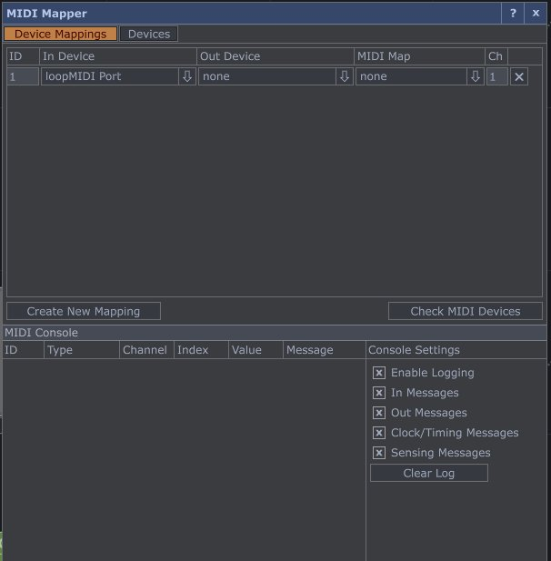
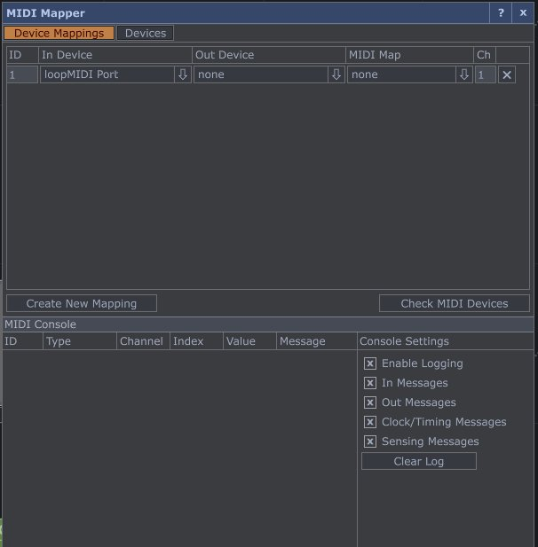
L’une de mes préoccupations principales était la conversion du code GLSL vers la syntaxe attendue par les nodes de TouchDesigner. Comme mentionné plus tôt dans le mémoire, cette transition entre les langages shaders peut présenter certaines subtilités.
Initialement, je craignais que cette étape de traduction ne rencontre
des obstacles imprévus. Toutefois, cette appréhension s’est avérée
largement infondée, du moins en grande partie. Le processus de
conversion requiert quelques ajustements, dont la plupart peuvent être
automatisés : il s’agit notamment des ajustements relatifs aux types
vec3f, ou encore les float qu’on écrit avec ou
sans « . », la transmission de la résolution en tant que
variable uniforme, ainsi que la syntaxe appropriée lors de l’utilisation
de textures.
Avec Loïck (mon partenaire de projet avec Jihed), nous avions même envisagé de développer un outil spécifique intégré à TouchDesigner pour automatiser l’intégration de shaders provenant de Shadertoy. Cependant, après nos expérimentations, nous avons abandonné cette idée. En effet, chaque shader importé peut comporter des caractéristiques spécifiques qui rendent difficile leur généralisation au sein d’un unique programme, ce qui aurait été trop ambitieux.
Les véritables difficultés rencontrées étaient principalement liés aux bugs de rendu, en particulier l’adaptation du code pour utiliser le bon espace sur lequel dessiner, notamment la transformation des uv. La traduction vers TouchDesigner s’est donc avérée plus aisée que prévu, nous avons donc saisi cette opportunité pour préparer le terrain pour Jihed. Nous avons isolé et configuré des variables pouvant influencer le shader. Pour chaque variable identifiée, nous avons défini une plage de valeurs pour faciliter les animations futures.
FoxDot aurait été idéal pour mes besoins si il ne présentait pas une
limitation significative concernant la gestion du signal MIDI.
Actuellement, il n’est pas possible de jouer un son tout en transmettant
simultanément le signal MIDI. Pour pallier cette contrainte durant mon
intensif, j’ai créé l’illusion d’une diffusion musicale en temps réel
via le livecoding, alors qu’en réalité, un Player
dédié gérait en parallèle l’émission régulière de signaux MIDI qui
correspondaient au rythme de la musique.
Heureusement, bien que la version officielle de FoxDot ne soit plus mise à jour par son créateur originel, une version 2.0 (Renardo) est en cours de développement par Élie Gavoty, un membre du Cookie Collective. J’ai pu discuter directement de ce problème avec lui, et il l’a placé parmi ses priorités.
J’ai omis de mentionner un autre obstacle technique auquel j’ai été confronté lors de cet intensif. Comme précédemment expliqué, mon objectif était de récupérer un signal MIDI plutôt qu’un signal analogique, afin de m’éloigner des interactions traditionnellement associées à l’interaction image-son. Au lieu d’une analyse fréquentielle (aigus, basses, tempo, etc.), je souhaitais naïvement récupérer la hauteur de la note dans TouchDesigner, en anticipant l’existence d’un node approprié à cet effet.
Cependant, ce que TouchDesigner reçoit est bien la hauteur de la note, mais sous forme de nom de variable contenant la valeur de l’amplitude de la note jouée (voir 7.14). Par conséquent, pour récupérer la véritable hauteur de la note, il aurait été nécessaire de développer un node personnalisé en Python capable d’analyser la chaîne de caractères du nom de la variable et d’extraire le suffixe numérique indiquant la hauteur de la note. N’ayant identifié ce problème que tardivement, je n’ai pas eu l’opportunité de développer ce node spécifique (peut-être lors d’une future tentative).
Ainsi, le signal MIDI récupéré dans TouchDesigner est en quelque sorte incomplet : bien que le rythme musical soit respecté, la hauteur des notes n’a aucune véritable influence sur l’interaction.
Pour ce mémoire, j’ai opté pour l’exploration d’un autre pipeline de traitement. Initialement, mon intention était de réaliser cette expérimentation avec OpenGL74, en utilisant du code graphique bas niveau pour bénéficier d’un contrôle maximal. Cette approche représente le choix le plus complexe en termes de pré-requis techniques, mais elle offre également le plus de possibilités et de contrôle. Il est tout à fait envisageable de générer du MIDI en C++, puis d’assurer le passage des informations du CPU vers le GPU via des variables uniformes, et enfin d’utiliser ces informations pour animer des vertex shaders, des geometry shaders ou bien sûr des fragment shaders en GLSL.
Au cours de ce semestre, j’ai eu l’opportunité de suivre les enseignements de Farès Belhadj sur la programmation graphique en tant qu’auditeur libre. J’ai saisi cette occasion pour perfectionner mes compétences en programmation OpenGL avec pour but de participer au concours de fin d’année visant à produire un exécutable de musique et un shader d’une taille inférieure à 64 Ko.
Mon projet initial consistait à élaborer une fonction en C++ capable d’interpréter et de décomposer un flux MIDI côté CPU, puis de transmettre les attributs de chaque note au fragment shader via des variables uniformes. Toutefois, mon niveau actuel en C++ et en OpenGL n’est pas suffisamment avancé pour concevoir cette fonction à partir de zéro. J’ai donc préféré ne pas m’y aventurer, d’autant plus que la rédaction du mémoire représente déjà une tâche exigeante en termes de temps et d’efforts. J’ai néanmoins examiné des solutions permettant de composer du MIDI directement en code (voir annexe 10).
J’ai donc opté pour KodeLife, un IDE dédié au livecoding qui présente une interface très intuitive où les modifications du code sont immédiatement visualisées à l’écran. Contrairement à Shadertoy nous avons accès au vertex shader ainsi qu’au geometry shader. Un autre avantage considérable est la diversité des entrées disponibles : non seulement on peut importer des textures, mais aussi utiliser des paramètres tels que le temps, l’image précédente du programme, et surtout, dans notre cas particulier, l’audio. Cela peut se faire à partir d’un fichier audio simple ou d’un flux MIDI.


Au début, j’ai été déconcerté en voyant que KodeLife représentait un fichier MIDI sous la forme d’une image en niveaux de gris. Cependant, grâce aux conseils de z0rg, j’ai finalement pu comprendre la situation.
La principale difficulté réside dans la conceptualisation du fait qu’un son puisse être représenté par une texture. Cette idée peut sembler peu intuitive au départ, mais elle est en réalité très logique. En effet, la musique est généralement représentée par une structure MIDI, qui est essentiellement une organisation de données. Cependant, rien n’empêche de représenter ces données sous forme d’une image, où chaque pixel correspond à un échantillon du fichier MIDI.
En utilisant le langage de shader GLSL, il est ensuite possible d’extraire les informations désirées à partir des pixels de la texture, de la même manière que l’on accéderait à n’importe quelle autre texture. Par exemple, un pixel aux coordonnées \((x, y)\) pourrait contenir les informations NoteOn/NoteOff de la note LA à l’octave 1.
Sur la documentation officielle de KodeLife, on trouve des
indications sur l’offset à respecter pour obtenir les
informations souhaitées. Par exemple, pour récupérer la vélocité75 (velocity en anglais)
d’une note à partir du signal Note On, on peut utiliser le
bout de code suivant : texture[1*127+note] = velocity.
Malheureusement, les recommandations fournies par la documentation sont inexactes, tout comme l’exemple accessible directement dans KodeLife. Pour résoudre ce problème, j’ai dû littéralement « compter » les rangées et les colonnes de pixels à partir de flux MIDI très minimalistes afin de trouver les bonnes valeurs. Cette tâche s’est avérée très fastidieuse et m’a conduit à entreprendre une étude approfondie de la structure d’un fichier MIDI afin de ne plus travailler à l’aveugle.
Le MIDI, ou Musical Instrument Digital Interface, est un protocole destiné à la transmission et au stockage d’informations relatives à la performance musicale. Ce format existe depuis près de quarante ans (la norme est mise au point en 1982), et sa longévité est due à son efficacité à utiliser les données numériques pour transmettre des informations musicales.
Dans le domaine musical, la précision du timing est primordiale, ce qui nécessite des communications rapides et efficaces. Pour comprendre l’efficacité du MIDI, il est essentiel de revenir sur quelques concepts de base tels que les bits, les octets et le système binaire. Un bit est une unité binaire ayant deux états : soit \(0\), soit \(1\). Les ordinateurs comptent en binaire, ce qui diffère du système décimal que nous utilisons habituellement. Par exemple, en binaire, trois chiffres peuvent représenter jusqu’à huit valeurs différentes (\(2^3\)), tandis qu’en décimal, trois chiffres peuvent représenter jusqu’à mille valeurs (\(10^3\)).
Dans le système binaire, le nombre de valeurs qu’un octet (un groupe
de huit bits) peut représenter est \(2^8\), soit \(256\). Le MIDI utilise principalement des
messages composés de deux ou trois octets. Ces octets sont classés en
deux catégories : les octets de statut et les octets de données. Les
octets de statut indiquent la nature de l’action à effectuer (par
exemple, le signal Note On), tandis que les octets de
données fournissent les valeurs correspondantes (dans mon cas je
recherche la vélocité).

En MIDI, le premier bit d’un octet de statut est toujours un \(1\), et le premier bit d’un octet de données est toujours un \(0\). Ainsi, un octet de données ne dispose que de sept bits pour coder l’information, soit \(2^7\) (128 valeurs différentes). Ce nombre, de \(0\) à \(127\), peut couvrir la gamme des hauteurs MIDI, des vélocités MIDI, des informations de contrôleur, ainsi que les instruments du General MIDI (numérotés de \(1\) à \(128\)).
La limitation à \(128\) valeurs peut sembler restreinte, mais pour la plupart des applications musicales, cette gamme est suffisante. En effet, cela permet de stocker une grande quantité d’informations dans un espace réduit, ce qui est particulièrement efficace pour le stockage et la transmission de données.
La désignation du canal MIDI occupe une partie de l’octet de statut, permettant de configurer les appareils MIDI pour qu’ils répondent uniquement aux messages transmis sur des canaux spécifiques. Par exemple, un synthétiseur peut être configuré pour écouter les canaux 7, 8 et 9, en ignorant les autres. Cela offre une flexibilité dans la gestion des flux d’informations MIDI entre différents appareils. Définir le canal MIDI dans l’octet de statut permet de cibler les informations à recevoir par un instrument MIDI spécifique. Par exemple, chaque instrument peut être assigné à un canal MIDI différent, permettant une gestion précise des messages envoyés à chaque instrument.
Un octet de statut est composé de huit bits. Le premier bit à \(0\) indique que l’octet représente un octet de statut. Les trois bits suivants désignent le type de message, tandis que les quatre derniers bits représentent le canal MIDI. Avec quatre bits pour le canal, il existe seize canaux MIDI différents. Concernant le type de message, trois bits permettent huit types de messages MIDI. Nous analysons en annexe 11 les sept premiers types de messages MIDI, laissant de côté le huitième qui est spécifique au fabricant et à l’horloge MIDI.
Pour résumer, les messages MIDI représentent le langage standard utilisé par de nombreux appareils pour communiquer entre eux. Ils se caractérisent par une structure bien définie, où les informations sont stockées sous forme d’octets de statut et d’octets de données. Un message MIDI est donc formé d’un octet de statut, qui indique le type de message et le canal de transmission, suivi d’un ou deux octets de données fournissant des détails sur les valeurs du message. Cette structure assure la cohérence et l’interprétation correcte des informations transmises.
Il est important de souligner qu’aujourd’hui, le MIDI n’est pas l’unique moyen de transmission de données musicales. Toutefois, il demeure largement utilisé. De nouvelles technologies telles que l’OSC76 (Open Sound Control) et le MIDI à haute résolution émergent, offrant ainsi des opportunités innovantes pour la communication et un contrôle musical plus raffiné. Cependant, cela n’indique pas une obsolescence imminente du protocole MIDI original.
Ainsi, en approfondissant ma compréhension de la structure d’un fichier MIDI, j’ai pu accéder aux données souhaitées dans KodeLife. Il a simplement fallu attribuer chaque note d’un clavier MIDI en piochant dans la texture MIDI, puis normaliser ces valeurs pour animer toute variable définie dans le code GLSL.
Dans ce mémoire, j’ai exploré les origines de l’art de la demoscene et examiné les techniques essentielles pour une performance de livecoding de shaders réussie. Par la suite, j’ai centré mon analyse sur l’interaction authentique entre la musique et le visuel, dans l’espoir de contribuer modestement à l’évolution de la demoscene.
Au cours de mes explorations, j’ai réalisé quelques expérimentations disponibles sur Vimeo. Bien qu’en l’état peu ambitieuses, elles servent de preuve de concept77 : si j’ai réussi à modifier le rayon d’un cercle uniquement avec la vélocité de la note jouée, cela démontre la possibilité d’agir sur n’importe quelle variable définie dans le code GLSL (voir [experim00] et 8.1 sur ma page Vimeo).


C // Live avec une note aléatoireMaintenant que j’ai confirmé que les mécanismes interactifs nécessaires sont déjà établis et fonctionnels, je suis prêt à explorer ce nouveau pipeline qui répond parfaitement à mes attentes. À chaque itération, j’améliore le flux de travail en factorisant le code, en ajoutant des fonctionnalités, en peaufinant l’animation, etc. (voir [experim03] et 8.2)


Un récent événement qui a profondément marqué mon expérience était la « journée d’étude sur le live coding », orchestrée par Raphaël Forment, Rémi Georges et Agathe Herrou à la Maison des Sciences de l’Homme à La Plaine St-Denis (voir 8.3). Cette journée comprenait une série de conférences suivies de performances sonores et visuelles. C’est lors de cet événement que j’ai vraiment pris conscience que le livecoding était un véritable domaine de recherche et de création, réunissant des artistes, des chercheurs et des passionnés aux parcours différents autour d’un geste commun : celui de manipuler du code source « à la volée » dans un but d’expression artistique et de création. Une présentation qui a captivé mon attention est celle de Vincent Rioux : Redécouvrir le live-coding en LISP, i-a-d-d-la-joie ! – Utiliser Lisp et Supercollider avec une intelligence simple. Son travail met en avant la création d’un lien entre la musique et les arts visuels, notamment entre les Beaux-Arts de Paris et l’IRCAM (Institut de Recherche et de Coordination Acoustique/Musique). Je prévois d’approfondir ses travaux, car les sujets qu’il aborde semblent étroitement liés aux miens.
Grâce aux rencontres que j’ai pu faire cette année lors des événements organisés par le Cookie Collective, j’ai eu l’opportunité d’explorer de nouvelles perspectives. En particulier, ma brève rencontre avec Alexandre et Sharlaine, les organisateurs du Playground (voir 8.4), un événement dédié au creative coding à Bordeaux, m’a profondément inspiré (leur site est consultable ici). Leur approche originale renforce mon désir de rendre la demoscene plus accessible en mettant l’accent sur la diffusion d’une éducation technique capable de sensibiliser et d’impliquer un public plus large. De plus, leur collaboration en tant que duo, « La Peanut », qui combine le livecoding, le théâtre et la poésie, reflète également mes aspirations à faire progresser mes recherches et mes créations numériques vers un « mélange des arts ». Ces arts pourraient inclure des récitations de texte (narratives ou non), l’intégration d’instruments acoustiques ou encore la manipulation de vidéos en direct.

Jusqu’à présent, mes expérimentations techniques ont été réalisées sur une seule machine. Cependant, comme l’indique le titre de mon mémoire, « Vers une interaction authentique entre livecoders », cela illustre également mon désir initial d’impliquer plusieurs livecoders au cours d’une même performance. En pratique, un livecoder serait responsable de la création musicale sur Orca et enverrait les informations MIDI via le réseau à une autre machine contrôlée par un livecoder de shaders. Cet objectif constituait le cœur de mon intensif en M2. Malheureusement, notre groupe a dû faire face à de nombreuses complications, à la fois matérielles et logistiques, qui nous ont empêché d’atteindre cet objectif dans les délais impartis. Cependant, avec le recul, j’ai découvert l’existence de solutions déjà disponibles qui auraient pu nous faciliter la réalisation. Parmi les solutions envisagées, je compte explorer Troop et Flok, des logiciels permettant à plusieurs utilisateurs de pratiquer le livecoding musical sur un serveur commun. Dans mes futures recherches, je m’efforcerai de trouver une solution équivalente mais orientée vers l’intégration collaborative du visuel et du sonore.

A : add(a b) – Outputs sum of inputs.
B : subtract(a b) – Outputs difference of inputs.
C : clock(rate mod) – Outputs modulo of frame.
D : delay(rate mod) – Bangs on modulo of frame.
E : east – Moves eastward, or bangs.
F : if(a b) – Bangs if inputs are equal.
G : generator(x y len) – Writes operands with offset.
H : halt – Halts southward operand.
I : increment(step mod) – Increments southward operand.
J : jumper(val) – Outputs northward operand.
K : konkat(len) – Reads multiple variables.
L : lesser(a b) – Outputs smallest of inputs.
M : multiply(a b) – Outputs product of inputs.
N : north – Moves Northward, or bangs.
O : read(x y read) – Reads operand with offset.
P : push(len key val) – Writes eastward operand.
Q : query(x y len) – Reads operands with offset.
R : random(min max) – Outputs random value.
S : south – Moves southward, or bangs.
T : track(key len val) – Reads eastward operand.
U : uclid(step max) – Bangs on Euclidean rhythm.
V : variable(write read) – Reads and writes variable.
W : west – Moves westward, or bangs.
X : write(x y val) – Writes operand with offset.
Y : jymper(val) – Outputs westward operand.
Z : lerp(rate target) – Transitions operand to input.
* : bang – Bangs neighboring operands.
# : comment – Halts a line.
: : midi(channel octave note velocity length) – Sends a MIDI note.
% : mono(channel octave note velocity length) – Sends monophonic MIDI note.
! : cc(channel knob value) – Sends MIDI control change.
? : pb(channel value) – Sends MIDI pitch bend.
; : udp – Sends UDP message.
= : osc(path) – Sends OSC message.
$ : self – Sends ORCA commands.
A : add(a b) – Renvoie la somme des entrées.
B : subtract(a b) – Renvoie la différence des entrées.
C : clock(rate mod) – Renvoie le modulo de la frame.
D : delay(rate mod) – Déclenche un bang sur le modulo de la frame.
E : east – Se déplace vers l’est, ou déclenche un bang.
F : if(a b) – Déclenche si les entrées sont égales.
G : generator(x y len) – Écrit les opérandes avec un offset.
H : halt – Arrête l’opérateur Sud.
I : increment(step mod) – Incrémente l’opérateur Sud.
J : jumper(val) – Renvoie l’opérande vers le nord.
K : konkat(len) – Lit plusieurs variables.
L : lesser(a b) – Renvoie la plus petite des entrées.
M : multiply(a b) – Renvoie le produit des entrées.
N : north – Se déplace vers le nord, ou déclenche un bang.
O : read(x y read) – Lit l’opérande avec un décalage.
P : push(len key val) – Écrit l’opérande vers l’est.
Q : query(x y len) – Lit les opérandes avec un décalage.
R : random(min max) – Renvoie une valeur aléatoire.
S : south – Se déplace vers le sud, ou déclenche un bang.
T : track(key len val) – Lit l’opérande vers l’est.
U : uclid(step max) – Déclenche sur un rythme euclidien.
V : variable(écrire lire) – Lit et écrit une variable.
W : west – Se déplace vers l’ouest, ou déclenche un bang.
X : write(x y val) – Écrit l’opérande avec un décalage.
Y : jymper(val) – Renvoie l’opérande vers l’ouest.
Z : lerp(rate target) – Transitions de l’opérande vers l’entrée.
* : bang – Déclenche les opérandes voisines.
# : comment – Arrête une ligne.
: : midi(canal octave note vélocité durée) – Envoie une note MIDI.
% : mono(canal octave note vélocité durée) – Envoie une note MIDI monophonique.
! : cc(canal bouton valeur) – Envoie un message de changement de contrôle MIDI.
? : pb(canal valeur) – Envoie un message de pitch bend MIDI.
; : udp – Envoie un message UDP.
= : osc(chemin) – Envoie un message OSC.
$ : self – Envoie des commandes ORCA.
#include <vector> // For std::vector<>
#include <cstring> // For std::strlen()
#include <cstdio> // For std::fopen(), std::fwrite(), std::fclose()
typedef unsigned char byte;
/* First define a custom wrapper over std::vector<byte>
* so we can quickly push_back multiple bytes with a single call.
*/
class MIDIvec: public std::vector<byte>
{
public:
// Methods for appending raw data into the vector:
template<typename... Args>
void AddBytes(byte data, Args...args)
{
push_back(data);
AddBytes(args...);
}
template<typename... Args>
void AddBytes(const char* s, Args...args)
{
insert(end(), s, s + std::strlen(s));
AddBytes(args...);
}
void AddBytes() { }
};
/* Define a class which encodes MIDI events into a track */
class MIDItrack: public MIDIvec
{
protected:
unsigned delay, running_status;
public:
MIDItrack()
: MIDIvec(), delay(0), running_status(0)
{
}
// Methods for indicating how much time elapses:
void AddDelay(unsigned amount) { delay += amount; }
void AddVarLen(unsigned t)
{
if(t >> 21) AddBytes(0x80 | ((t >> 21) & 0x7F));
if(t >> 14) AddBytes(0x80 | ((t >> 14) & 0x7F));
if(t >> 7) AddBytes(0x80 | ((t >> 7) & 0x7F));
AddBytes(((t >> 0) & 0x7F));
}
void Flush()
{
AddVarLen(delay);
delay = 0;
}
// Methods for appending events into the track:
template<typename... Args>
void AddEvent(byte data, Args...args)
{
/* MIDI tracks have the following structure:
*
* { timestamp [metaevent ... ] event } ...
*
* Each event is prefixed with a timestamp,
* which is encoded in a variable-length format.
* The timestamp describes the amount of time that
* must be elapsed before this event can be handled.
*
* After the timestamp, comes the event data.
* The first byte of the event always has the high bit on,
* and the remaining bytes always have the high bit off.
*
* The first byte can however be omitted; in that case,
* it is assumed that the first byte is the same as in
* the previous command. This is called "running status".
* The event may furthermore beprefixed
* with a number of meta events.
*/
Flush();
if(data != running_status) AddBytes(running_status = data);
AddBytes(args...);
}
void AddEvent() { }
template<typename... Args>
void AddMetaEvent(byte metatype, byte nbytes, Args...args)
{
Flush();
AddBytes(0xFF, metatype, nbytes, args...);
}
// Key-related parameters: channel number, note number, pressure
void KeyOn(int ch, int n, int p) { if(n>=0)AddEvent(0x90|ch, n, p); }
void KeyOff(int ch, int n, int p) { if(n>=0)AddEvent(0x80|ch, n, p); }
void KeyTouch(int ch, int n, int p) { if(n>=0)AddEvent(0xA0|ch, n, p); }
// Events with other types of parameters:
void Control(int ch, int c, int v) { AddEvent(0xB0|ch, c, v); }
void Patch(int ch, int patchno) { AddEvent(0xC0|ch, patchno); }
void Wheel(int ch, unsigned value)
{ AddEvent(0xE0|ch, value&0x7F, (value>>7)&0x7F); }
// Methods for appending metadata into the track:
void AddText(int texttype, const char* text)
{
AddMetaEvent(texttype, std::strlen(text), text);
}
};
/* Define a class that encapsulates all methods needed to craft a MIDI file. */
class MIDIfile: public MIDIvec
{
protected:
std::vector<MIDItrack> tracks;
unsigned deltaticks, tempo;
public:
MIDIfile()
: MIDIvec(), tracks(), deltaticks(1000), tempo(1000000)
{
}
void AddLoopStart() { (*this)[0].AddText(6, "loopStart"); }
void AddLoopEnd() { (*this)[0].AddText(6, "loopEnd"); }
MIDItrack& operator[] (unsigned trackno)
{
if(trackno >= tracks.size())
{
tracks.reserve(16);
tracks.resize(trackno+1);
}
MIDItrack& result = tracks[trackno];
if(result.empty())
{
// Meta 0x58 (misc settings):
// time signature: 4/2
// ticks/metro: 24
// 32nd per 1/4: 8
result.AddMetaEvent(0x58,4, 4,2, 24,8);
// Meta 0x51 (tempo):
result.AddMetaEvent(0x51,3, tempo>>16, tempo>>8, tempo);
}
return result;
}
void Finish()
{
clear();
AddBytes(
// MIDI signature (MThd and number 6)
"MThd", 0,0,0,6,
// Format number (1: multiple tracks, synchronous)
0,1,
tracks.size() >> 8, tracks.size(),
deltaticks >> 8, deltaticks);
for(unsigned a=0; a<tracks.size(); ++a)
{
// Add meta 0x2F to the track, indicating the track end:
tracks[a].AddMetaEvent(0x2F, 0);
// Add the track into the MIDI file:
AddBytes("MTrk",
tracks[a].size() >> 24,
tracks[a].size() >> 16,
tracks[a].size() >> 8,
tracks[a].size() >> 0);
insert(end(), tracks[a].begin(), tracks[a].end());
}
}
};
int main()
{
// Now that we have a class that can create MIDI files, let's create
// music.
// Begin with some chords.
static const int chords[][3] =
{
{ 12,4,7 }, // +C E G = 0
{ 12,9,5 }, // +C A F = 1
{ 12,8,3 }, // +C G# D# = 2
{ 12,7,3 }, // +C G D# = 3
{ 12,5,8 }, // +C F G# = 4
{ 12,3,8 }, // +C D# G# = 5
{ 11,2,7 }, // B D G = 6
{ 10,2,7 }, // A# D G = 7
{ 14,7,5 }, // +D G F = 8
{ 14,7,11 },// +D G B = 9
{ 14,19,11 }// +D +G B = 10
};
const char x = 99; // Arbitrary value we use here to indicate "no note"
static const char chordline[64] =
{
0,x,0,0,x,0,x, 1,x,1,x,1,1,x,1,x, 2,x,2,2,x,2,x, 3,x,3,x,3,3,x,3,x,
4,x,4,4,x,4,x, 5,x,5,x,5,5,x,5,x, 6,7,6,x,8,x,9,x,10,x,x,x,x,x,x,x
};
static const char chordline2[64] =
{
0,x,x,x,x,x,x, 1,x,x,x,x,x,x,x,x, 2,x,x,x,x,x,x, 3,x,x,x,x,x,x,x,x,
4,x,x,x,x,x,x, 5,x,x,x,x,x,x,x,x, 6,x,x,x,x,x,x,x, 6,x,x,x,x,x,x,x
};
static const char bassline[64] =
{
0,x,x,x,x,x,x, 5,x,x,x,x,x,x,x,x, 8,x,x,0,x,3,x, 7,x,x,x,x,x,x,x,x,
5,x,x,x,x,x,x, 3,x,x,x,x,x,x,x,x, 2,x,x,x,x,x,x,-5,x,x,x,x,x,x,x,x
};
static const char fluteline[64] =
{
12,x,12,12, x,9, x, 17,x,16,x,14,x,12,x,x,
8,x, x,15,14,x,12, x,7, x,x, x,x, x,x,x,
8,x, x, 8,12,x, 8, x,7, x,8, x,3, x,x,x,
5,x, 7, x, 2,x,-5, x,5, x,x, x,x, x,x,x
};
MIDIfile file;
file.AddLoopStart();
/* Choose instruments ("patches") for each channel: */
static const char patches[16] =
{
0,0,0, 52,52,52, 48,48,48, 0,0,0,0,0, 35,74
/* 0=piano, 52=choir aahs, 48=strings, 35=fretless bass, 74=pan flute */
};
for(unsigned c=0; c<16; ++c)
if(c != 10) // Patch any other channel but not the percussion channel.
file[0].Patch(c, patches[c]);
int keys_on[16] = {-1,-1,-1,-1, -1,-1,-1,-1, -1,-1,-1,-1, -1,-1,-1,-1 };
for(unsigned loops=0; loops<2; ++loops)
{
for(unsigned row=0; row<128; ++row)
{
for(unsigned c=0; c<16; ++c)
{
int note = x, add = 0, vol = 127;
if(c < 3) // Piano chord
{ int chord = chordline[row%64];
if(chord != x) note = chords[chord][c%3], add=12*5, vol=0x4B; }
else if(c >= 3 && c < 5) // Aux chord (choir)
{ int chord = chordline2[row%64];
if(chord != x) note = chords[chord][c%3], add=12*4, vol=0x50; }
else if(c >= 6 && c < 8) // Aux chord (strings)
{ int chord = chordline2[row%64];
if(chord != x) note = chords[chord][c%3], add=12*5, vol=0x45; }
else if(c == 14) // Bass
note = bassline[row%64], add=12*3, vol=0x6F;
else if(c == 15 && row >= 64) // Flute
note = fluteline[row%64], add=12*5, vol=0x6F;
if(note == x && (c<15 || row%31)) continue;
file[0].KeyOff(c, keys_on[c], 0x20);
keys_on[c] = -1;
if(note == x) continue;
file[0].KeyOn(c, keys_on[c] = note+add, vol);
}
file[0].AddDelay(160);
}
if(loops == 0) file.AddLoopEnd();
}
file.Finish();
FILE* fp = std::fopen("test.mid", "wb");
std::fwrite(&file.at(0), 1, file.size(), fp);
std::fclose(fp);
return 0;
}Les messages Note On et Note Off sont fondamentaux en MIDI pour la gestion des notes jouées. Le message « Note On » informe sur la touche pressée, sa vélocité et le canal MIDI concerné. Il est composé d’un octet de statut commençant par \(1001\), suivi de deux octets de données : le premier pour la note jouée et le second pour la vélocité. Le message Note Off, quant à lui, indique la libération d’une touche avec les mêmes détails que Note On, mais avec un statut différent commençant par \(1000\) (pour rappel, à chaque fois le \(1\) est là pour préciser qu’il s’agit d’un octet de statut). Par exemple, voici les représentations d’un message Note On qui jouerait un Do avec une vélocité maximale et celui d’un message Note Off qui lui ferait miroir:
Note On : 0x9n (1001 nnnn)
Exemple : 0x90 0x3C 0x7F
0x90 (1001 0000) : Note On sur le canal MIDI 1
0x3C (0011 1100) : Note numero 60 (Do central)
0x7F (0111 1111) : Velocite maximale (127)Note Off : 0x8n (1000 nnnn)
Exemple : 0x80 0x3C 0x40
0x80 (1000 0000) : Note Off sur le canal MIDI 1
0x3C (0011 1100) : Note numero 60 (Do central)
0x40 (0100 0000) : Velocite 64 (valeur typique pour un Note Off)L’information de vélocité est intégrée dans les messages « Note On » et « Note Off », reflétant la vitesse à laquelle une touche est relâchée.
Les messages Aftertouch, qu’ils soient Polyphonic ou Channel, renvoient des informations sur la pression appliquée sur une touche après l’émission initiale. Bien que cette caractéristique ne soit pas présente dans les pianos mécaniques, elle trouve son utilité dans d’autres instruments comme les instruments à vent ou à cordes.
Le Polyphonic Aftertouch envoie la pression individuelle pour chaque touche pressée, nécessitant donc trois octets par note.
Aftertouch Polyphonique : 0xAn (1010 nnnn)
Exemple : 0xA0 0x3C 0x40
0xA0 (1010 0000) : Aftertouch Polyphonique sur le canal MIDI 1
0x3C (0011 1100) : Note numero 60 (Do central)
0x40 (0100 0000) : Pression de la touchePar contre le Channel Aftertouch envoie uniquement la pression de la touche avec la pression la plus élevée, nécessitant seulement deux octets.
Aftertouch de canal (Channel Aftertouch) : 0xDn (1101 nnnn)
Exemple : 0xD0 0x40
0xD0 (1101 0000) : Aftertouch de canal sur le canal MIDI 1
0x40 (0100 0000) : Pression de la toucheLe message Control Change transmet des informations sur les contrôleurs tels que les boutons, pédales et curseurs. Ce message est constitué d’un octet de statut avec un préfixe \(1011\), suivi du canal, du numéro du contrôleur, et de la valeur (de \(0\) à \(127\)).
Changement de controle (Control Change) : 0xB0 (1011 nnnn)
Exemple : 0xB0 0x07 0x64
0xB0 (1011 0000) : Controle de changement sur le canal MIDI 1
0x07 (0000 0111) : Numero de controleur (ici, le controle de volume)
0x64 (0110 0100) : Valeur du controle (100 en decimal, indiquant le volume a 100)Bien que considéré comme une relique des débuts des synthétiseurs logiciels, le message Program Change était utilisé pour signaler les changements de patch. À l’origine, avec \(127\) voix disponibles dans tous les synthétiseurs MIDI, ce système était particulièrement adapté aux jeux vidéo, permettant une expérience musicale cohérente sur différents matériels. Ces \(127\) voix incluent également des effets sonores comme le chant des oiseaux ou le bruit de téléphone. Les messages Program Change se composent de deux octets : un octet de statut commençant par \(1100\), indiquant le canal, suivi d’un octet de données désignant le nouvel instrument.
Changement de programme (Program Change) : 0xCn (1100 nnnn)
Exemple : 0xC0 0x04
0xC0 (1100 0000) : Changement de programme sur le canal MIDI 1
0x04 (0000 0100) : Programme numero 5Le Pitch Bend se distingue des autres contrôleurs continus par sa résolution plus élevée dans le protocole MIDI. Au lieu d’utiliser une plage de valeurs de \(0\) à \(127\), le Pitch Bend utilise deux octets pour fournir une résolution de 14 bits, offrant \(16384\) (\(2^14\)) valeurs possibles. Cette précision est essentielle pour un contrôle microtonal détaillé, ce qui est particulièrement utile pour des données à haute résolution dans le protocole MIDI.
Pitch Bend : 0xEn (1110 nnnn)
Exemple : 0xE0 0x00 0x40
0xE0 (1110 0000) : Pitch Bend sur le canal MIDI 1
0x00 0x40 (0000 0000 0100 0000) : Valeur du pitch bend (vers le haut)Dans la culture de la demoscene, les greetings sont des salutations, souvent inclues dans les demos, adressées à d’autres groupes de la demoscene, à des personnes spécifiques ou à la communauté dans son ensemble.↩︎
Un hackerspace est un espace physique où des passionnés de technologie, de programmation informatique et de création collaborative se réunissent pour travailler sur des projets, échanger des connaissances et partager des ressources.↩︎
L’esprit open source se réfère à une approche collaborative et transparente du développement de logiciels et de technologies, basée sur le partage libre et ouvert du code source. Les projets open source permettent à quiconque d’accéder, d’étudier, de modifier et de redistribuer le code source d’un logiciel, favorisant ainsi la collaboration et l’innovation collective.↩︎
Les free parties sont des événements musicaux et culturels autonomes, souvent organisés de manière clandestine et sans autorisation officielle, caractérisés par une programmation musicale centrée sur la musique électronique underground. Ces événements se déroulent généralement dans des lieux inhabituels ou alternatifs, tels que des entrepôts abandonnés, des champs, des forêts ou des squats.↩︎
La gravure musicale est le processus de notation ou de transcription de la musique dans un format numérique à l’aide de logiciels spécialisés. Cette pratique consiste à représenter les éléments musicaux tels que les notes, les rythmes, les indications de tempo, les dynamiques et d’autres instructions d’interprétation de manière visuelle et compréhensible pour les musiciens. Les principales solutions logicielles de gravure musicale comprennent des programmes tels que Finale, MuseScore et LilyPond (ma solution privilégiée).↩︎
Un strip désigne généralement une bande d’images ou de vignettes disposées dans un ordre séquentiel, souvent utilisée dans le contexte des bandes dessinées.↩︎
Le patrimoine culturel immatériel, selon l’UNESCO, se réfère aux pratiques, représentations, expressions, connaissances et savoir-faire - ainsi que les instruments, objets, artefacts et espaces culturels associés - que les communautés, les groupes et, dans certains cas, les individus reconnaissent comme faisant partie de leur patrimoine culturel.↩︎
La RAM (Random Access Memory) est une forme de mémoire volatile utilisée par les ordinateurs pour stocker des données temporaires qui peuvent être rapidement lues et écrites par le processeur et d’autres périphériques.↩︎
Le terme cracker désigne une personne spécialisée dans la suppression ou la contournement des protections de logiciels, principalement pour les jeux vidéo ou les applications.↩︎
Un cracktro est une courte animation ou introduction visuelle qui apparaît avant le lancement d’un jeu vidéo ou d’un logiciel piraté.↩︎
NTSC (National Television System Committee) est un système de codage couleur utilisé dans les émissions de télévision et de vidéo analogiques en Amérique du Nord, au Japon et dans certaines autres régions.↩︎
PAL (Phase Alternating Line) est un système de codage couleur utilisé dans les émissions de télévision et de vidéo analogiques dans de nombreuses régions, notamment en Europe, en Australie, en Chine et en Afrique.↩︎
Les swappers échangent généralement des demos, des intros, des musiques, des graphiques et d’autres types de productions créatives via des supports physiques comme des disquettes ou des cassettes, ou encore via des services en ligne lorsque l’Internet est devenu plus accessible.↩︎
Une intro (abréviation de « introduction ») est une petite production demo, souvent de courte durée, conçue pour montrer les compétences et la créativité d’un groupe ou d’un individu. Contrairement aux demos complètes qui peuvent durer plusieurs minutes, les intros sont généralement plus courtes, parfois limitées à quelques dizaines de secondes, et se concentrent sur un effet ou une idée particulière.↩︎
Le terme lamer est généralement utilisé de manière péjorative pour décrire quelqu’un qui prétend avoir des compétences ou des connaissances qu’il ne possède pas réellement.↩︎
L’élite fait référence aux individus ou groupes qui se distinguent par leurs compétences techniques, leur innovation, et leur contribution significative à la culture et à l’art de la demoscene.↩︎
Le leet speak (ou l33t speak) est un langage codé utilisant des substitutions de lettres, des chiffres et des symboles spéciaux pour remplacer les lettres originales, rendant la communication plus cryptique et réservée à ceux qui connaissent ce langage.↩︎
DICE, ou Digital Illusions Creative Entertainment, est un studio de développement de jeux vidéo basé en Suède. Fondé en 1992 par Olof Gustafsson et Markus Nyström, le studio est surtout connu pour ses franchises à succès comme « Battlefield », « Mirror’s Edge » et « Star Wars Battlefront ».↩︎
Remedy Entertainment est un studio finlandais de jeux vidéo connu pour ses jeux narratifs innovants tels que « Max Payne », « Alan Wake », « Quantum Break » et « Control ». Situé à Espoo, il est reconnu pour ses histoires captivantes et sa maîtrise de la narration interactive.↩︎
Un « programme DOS » ne se réfère pas au système d’exploitation MS-DOS que l’on trouve sur les PC, mais plutôt à un type de demo spécifique conçu pour l’Amiga. Ces demos étaient généralement exécutées à partir du Workbench, l’environnement graphique de l’Amiga, plutôt que de démarrer directement depuis un disque bootable.↩︎
Un trackloader désigne une technique de chargement de données utilisée pour produire des demos plus fluides et interactives.↩︎
Les diskmags sont des magazines numériques interactifs destinés à la communauté de la demoscene. Ils sont généralement composés de plusieurs sections, y compris des articles, des critiques, des interviews, des classements, et parfois même des demos ou des intros intégrées.↩︎
Le fonctionnement d’un tracker est basé sur une interface de suivi de partitions, où chaque piste représente un instrument ou un échantillon. Les utilisateurs peuvent placer des notes, définir des effets et ajuster divers paramètres pour chaque piste à l’aide d’un clavier ou d’une interface graphique.↩︎
La persistance rétinienne fait référence à la capacité de l’œil humain à percevoir une image pendant un court laps de temps après que l’image originale ait disparu. Cette caractéristique est exploitée dans la création de demos pour produire des effets visuels fluides et dynamiques, en utilisant des techniques telles que le changement rapide d’images ou la manipulation de la luminosité et des couleurs.↩︎
Le livecoding est une pratique qui consiste à improviser de la musique ou des visuels par l’utilisation d’un langage de programmation.↩︎
La Revision est une demoparty annuelle qui se tient traditionnellement à Pâques depuis 2011, à Saarbrücken, la principale ville de la Sarre, dans le sud-ouest de l’Allemagne.↩︎
Le VJing est une forme d’art visuel en direct qui implique la manipulation et la projection en temps réel d’images visuelles pour accompagner la musique lors de performances en direct, telles que des concerts ou des événements artistiques.↩︎
Inigo Quilez est une figure emblématique du graphisme généré par ordinateur et du livecoding.↩︎
Le code golfing est un défi de programmation visant à réaliser un programme fonctionnel avec un minimum de caractères.↩︎
Un sommet (vertex en anglais) est un point dans l’espace tridimensionnel. Les sommets sont des entités fondamentales utilisées pour définir la géométrie des objets dans une scène 3D.↩︎
Un thread fait référence à une unité de traitement ou à une séquence d’instructions exécutées par le processeur graphique. Les GPU modernes sont équipés de multiples processeurs de flux, chacun capable de gérer plusieurs threads simultanément.↩︎
Les coordonnées homogènes sont un concept clé en géométrie et en informatique graphique, offrant une représentation unifiée des points et des vecteurs ainsi que des avantages significatifs pour les opérations géométriques et les transformations.↩︎
La matrice identité est une matrice carrée dans laquelle tous les éléments de la diagonale principale sont égaux à \(1\), tandis que tous les autres éléments sont égaux à \(0\).↩︎
Les coordonnées 3D normalisées (NDC), abréviation de Normalized Device Coordinates en anglais, sont un système de coordonnées tridimensionnelles utilisé dans les graphiques 3D. Dans ce système, les coordonnées sont normalisées par rapport à la taille de l’espace de visualisation, de sorte que les coordonnées \(X\), \(Y\) et \(Z\) varient toutes entre \(-1\) et \(1\).↩︎
En informatique graphique, le frustum est une approximation de la zone de l’espace tridimensionnel qui est visible à travers une caméra ou une fenêtre de visualisation. Il est utilisé pour décider quels éléments doivent être rendus dans une scène 3D.↩︎
En modélisation 3D, un quad, abréviation de « quadrilatère », fait référence à un polygone composé de quatre sommets reliés par des arêtes.↩︎
Un node (nœud en français) fait référence à un élément de base dans un système nodal ou graphique utilisé pour créer des matériaux, des effets visuels ou des animations. Chaque node représente généralement une opération spécifique ou une partie du processus de rendu.↩︎
Un pixel est le plus petit élément visible à l’écran, tandis qu’un fragment est une partie de ce pixel contenant des informations détaillées comme la couleur, traitées par le fragment shader pour déterminer la couleur finale du pixel.↩︎
La diffuse map est une texture utilisée dans le rendu 3D pour représenter la couleur de base ou la couleur réfléchie par un objet.↩︎
Une normal map est une texture utilisée dans les graphiques 3D pour simuler des détails géométriques fins et complexes sur une surface sans avoir à augmenter la géométrie réelle de l’objet.↩︎
Dans le contexte des textures, on emploie plutôt le terme texel que pixel.↩︎
Un espace orthonormé fait référence à un système de coordonnées dans lequel les axes sont perpendiculaires (orthogonaux) les uns aux autres et ont une longueur unitaire (normée). Cet espace est souvent utilisé pour représenter des positions, des directions ou des transformations dans un rendu 3D.↩︎
Un sonar, contraction de SOund Navigation And Ranging en anglais, est un dispositif utilisé pour détecter et localiser des objets sous-marins en émettant des impulsions sonores dans l’eau et en écoutant les échos réfléchis par ces objets.↩︎
Le lissage ou smoothness en infographie se réfère généralement à la qualité visuelle d’une surface qui semble lisse ou régulière. Cela peut être attribué à plusieurs facteurs, notamment la quantité de détails visibles sur la surface, la régularité de ses courbes et la manière dont elle réagit à l’éclairage.↩︎
Un quadrant est une subdivision de l’espace en quatre parties égales, souvent désignées comme le premier, deuxième, troisième et quatrième quadrant, en fonction de leur position par rapport aux axes.↩︎
Le théorème de Pythagore énonce que dans un triangle rectangle, le carré de la longueur de l’hypoténuse (le côté opposé à l’angle droit) est égal à la somme des carrés des longueurs des deux autres côtés.↩︎
Les fonctions de distance signée sont utilisées en infographie et en traitement d’image pour mesurer la distance entre un point et une surface.↩︎
La normalisation d’un vecteur est le processus de mise à l’échelle d’un vecteur pour qu’il ait une longueur de \(1\), tout en préservant sa direction.↩︎
Le produit vectoriel de deux vecteurs dans l’espace tridimensionnel donne un vecteur perpendiculaire au plan formé par ces deux vecteurs.↩︎
La norme d’un vecteur, également appelée magnitude ou longueur d’un vecteur, est une mesure de sa taille dans l’espace.↩︎
Le gradient d’une surface est un concept mathématique qui décrit la variation de la fonction de cette surface dans l’espace.↩︎
En informatique graphique, le produit scalaire est une opération mathématique fondamentale utilisée pour mesurer la similitude directionnelle entre deux vecteurs.↩︎
Deux vecteurs sont dits colinéaires s’ils sont parallèles ou anti-parallèles, c’est-à-dire qu’ils ont la même direction ou des directions opposées.↩︎
Deux vecteurs sont dits orthogonaux s’ils sont perpendiculaires l’un à l’autre.↩︎
Une fonction built-in (ou fonction intégrée) est une fonction préexistante dans un langage de programmation ou dans un environnement de développement logiciel.↩︎
Les coordonnées cartésiennes sont un système de coordonnées dans lequel un point dans l’espace est déterminé par sa distance par rapport à deux ou trois axes orthogonaux (perpendiculaires) qui se croisent à un point appelé origine.↩︎
Remapper fait référence au processus de transformation des valeurs d’un intervalle à un autre.↩︎
Le post-traitement est une technique pour appliquer des effets visuels et des corrections à une image rendue après qu’elle ait été traitée par les shaders de rendu principaux.↩︎
Le flou (ou blur en anglais) désigne une technique graphique utilisée pour rendre une image ou une zone de l’image moins nette ou plus douce.↩︎
L’aberration chromatique se manifeste généralement par des franges de couleur, souvent des teintes de vert, rouge et bleu, autour des bords des objets dans une image ou une scène.↩︎
En OpenGL, un frame buffer (tampon de trame en français) est une structure de données utilisée pour stocker temporairement les pixels d’une image à afficher à l’écran.↩︎
Les L-systèmes, également connus sous le nom de systèmes de Lindenmayer, sont des systèmes formels utilisés pour modéliser et générer des structures fractales, notamment des formes végétales, des motifs géométriques et d’autres formes complexes trouvées dans la nature.↩︎
Un pattern désigne généralement une séquence récurrente ou un design utilisé pour créer des effets visuels, souvent de manière répétitive. Ces patterns sont souvent utilisés pour créer des textures, des décors ou des effets visuels complexes. Ils peuvent être générés de manière procédurale, basés sur des algorithmes, ou créés manuellement.↩︎
Développé par Ken Perlin en 1982 pour le film « Tron » de Disney, le bruit de Perlin produit des transitions douces entre les valeurs, ce qui donne un aspect plus organique et réaliste aux textures générées. Il est largement utilisé dans les domaines de l’infographie, du rendu 3D, de la simulation et du jeu vidéo pour générer des terrains, des nuages, des textures de bois et bien d’autres effets visuels.↩︎
Le glow se réfère à un effet visuel où une source de lumière semble émettre une lueur douce et diffuse, créant ainsi une aura lumineuse autour de l’objet ou de la zone éclairée↩︎
Desmos est un site web qui offre une calculatrice graphique en ligne gratuite et puissante, ainsi que d’autres outils mathématiques interactifs. Desmos permet de tracer des graphiques de fonctions, des équations, des inégalités et des tableaux de données en temps réel.↩︎
loopMIDI est un logiciel qui permet de créer des ports MIDI virtuels sur un ordinateur Windows. Ces ports MIDI virtuels peuvent être utilisés pour router des données MIDI entre différentes applications.↩︎
Un langage ésotérique est un langage de programmation conçu de manière intentionnellement compliquée, obscure ou non conventionnelle. Ces langages ne sont généralement pas créés dans le but d’être utilisés pour des applications pratiques ou professionnelles, mais plutôt pour explorer des concepts informatiques, artistiques ou philosophiques, ou pour le plaisir de la programmation.↩︎
Hundred Rabbits est un studio indépendant créatif composé de Rekka Bellum et de Devine Lu Linvega, un duo de développeurs, artistes et explorateurs vivant sur un voilier nommé Pino. Ils sont connus pour leur approche minimaliste et expérimentale de la création, produisant des jeux vidéo, des outils, des expériences et des œuvres artistiques dans divers domaines tels que la programmation, la musique, la vidéo et l’écriture.↩︎
Dans le contexte d’Orca je préfère utiliser la terminologie Est, Sud, Ouest et Nord plutôt que droite, bas, gauche, haut (right, bottom, left, top en anglais)↩︎
Une DAW est une station de travail audionumérique. C’est un système logiciel utilisé pour l’enregistrement, l’édition, le mixage et la production audio.↩︎
Le fade in consiste en une augmentation progressive du volume audio depuis le silence (ou un volume très bas) jusqu’au volume souhaité. Cela crée une transition douce, permettant au son de s’introduire de manière progressive dans l’environnement sonore.↩︎
Le fade out représente une diminution progressive du volume audio, aboutissant finalement à un silence complet (ou à un volume très bas). Cette technique est souvent utilisée pour conclure une piste audio ou pour introduire un changement de scène de manière fluide.↩︎
OpenGL (Open Graphics Library) est une spécification standardisée pour le développement d’applications graphiques interactives en 2D et 3D. Elle offre une interface de programmation qui permet aux développeurs de créer des applications graphiques de haute performance et de haute qualité sur différentes plateformes matérielles. OpenGL est largement utilisé dans les domaines tels que les jeux vidéo, la modélisation et l’animation 3D, la visualisation scientifique et médicale, la conception assistée par ordinateur (CAO) et bien d’autres.↩︎
Dans le protocole MIDI, la vélocité fait référence à la force avec laquelle une touche est pressée sur un clavier ou un autre contrôleur MIDI.↩︎
L’OSC (Open Sound Control) est un protocole de communication pour les réseaux multimédias développé pour transmettre des données de contrôle entre les logiciels et les appareils audiovisuels. Contrairement au MIDI, qui est principalement basé sur le format série de 8 bits, l’OSC utilise des paquets de données basés sur des messages.↩︎
Un proof of concept (POC), traduit littéralement en français par « preuve de concept », est une démonstration ou un prototype qui vise à prouver la faisabilité ou la viabilité d’une idée, d’un concept ou d’une méthode.↩︎